O manual da marca da nutricionista Ana Paula Costa: o símbolo, as cores, as letras, a voz e as peças do dia a dia, para quem produz por ela acertar de primeira.
Quem é a Ana e para quem ela existe. As outras partes do manual dizem como fazer. Esta parte diz por quê.
Em um minuto
Nutricionista no Rio de Janeiro, com atendimento online por vídeo.
A autoridade da Ana vem da trajetória (Marinha Mercante, virada aos 30, mãe de dois, atleta) e do jeito de cuidar. Nunca de tempo de consultório ou de título que ela não tem.
Ela atende três fases: gestação, pós-parto e amamentação, e 40+ e menopausa. Toda peça diz com qual delas está falando.
A virada, com o Pão de Açúcar de testemunhaFormatura em Nutrição, Rio de Janeiro, 2024.
Ana Paula Costa é nutricionista, mora no Rio de Janeiro e atende online, por vídeo.
Antes da Nutrição, teve navio. Ela começou na Marinha Mercante em 2006, embarcou, pilotou e, em alguns embarques, era a única mulher a bordo. Aos 30, mudou de rota: largou a carreira no mar e voltou para a faculdade, agora de Nutrição. Formou-se em 2024.
No caminho, virou mãe de dois meninos e passou por duas gestações e dois pós-partos. Nunca largou o treino: é atleta de crossfit. Ela viveu a gestação e o pós-parto que atende, e é isso que a paciente sente na conversa. A Ana não fala de cima. Fala como quem também já almoçou com um filho no colo.
"Produtividade não é fazer tudo sozinha. É fazer o que é possível em cada fase da vida."
2006Marinha MercanteFormação, embarques e navio pilotado. Em alguns embarques, a única mulher a bordo.
Aos 30A viradaLarga a carreira no mar e volta para a faculdade, agora de Nutrição.
2024NutricionistaFormada em Nutrição no Rio.
HojeMãe de dois, atleta e nutriMãe de dois, com duas gestações e dois pós-partos vividos; atleta e nutri. Atendimento online para gestação, pós-parto e 40+.
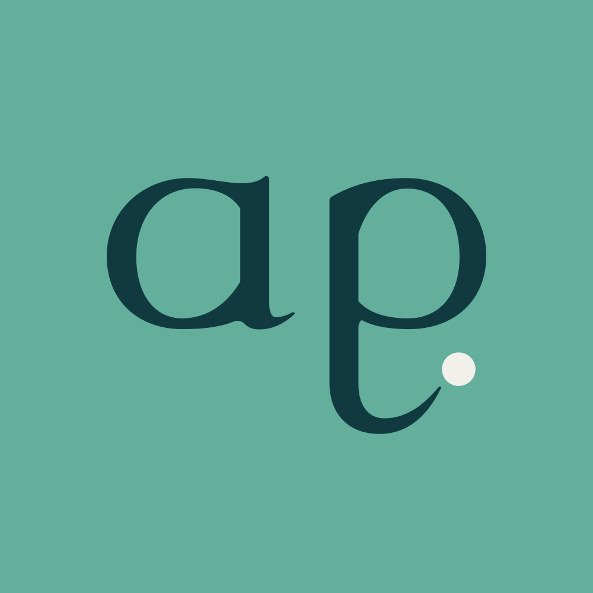
Ana Paula Costa
Nutricionista
Cada fase pede outro prato. Gestação, pós-parto e 40+. Atendimento online. Da Marinha Mercante à Nutrição aos 30. Mãe de dois, atleta.
CRN-4 em confirmação
FaçaA bio conta a fase, o formato e a história verdadeira, com o registro à vista. Assina como Ana Paula Costa.
Ana Paula Costa
Nutricionista
Especialista em saúde da mulher. Mais de 10 anos transformando vidas. Resultado garantido em 30 dias!
Não façaTítulo que ela não tem, tempo inventado e promessa de resultado. Três problemas com o conselho numa bio só, e nenhum registro.
O mar fica no gesto, não no enfeiteO mapa-múndi do escritório é o único aceno à navegação que entra numa imagem, e só porque é real. Na marca, a vida no mar aparece no mergulho do símbolo e na Rota. Âncora, leme, bússola, farol e onda nunca entram.
Mulheres adultas em três fases de virada. Em comum, elas têm a rotina corrida, o cansaço de regra genérica e a vontade de um plano que caiba na semana real. A Ana não atende crianças: quando o assunto é introdução alimentar, ela cuida da mãe que está passando por essa fase.
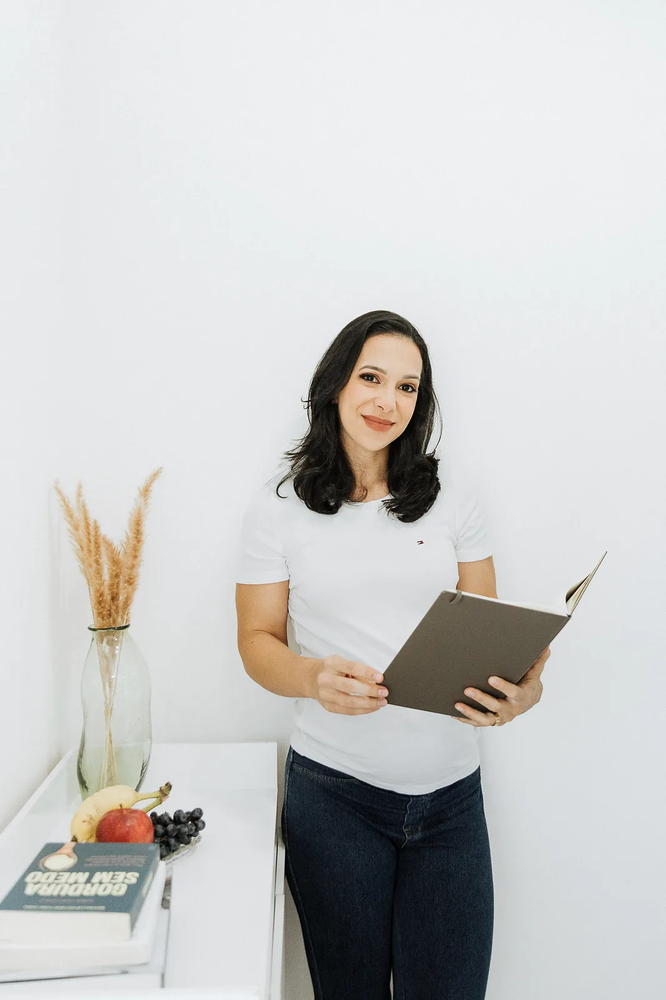
Gestação
Quer comer bem pelo bebê e por ela, mesmo com enjoo, com o suplemento de ferro pesando no estômago ou com a glicemia no radar.
"Você precisa ser uma barreira para o seu bebê, e não uma peneira."
Canal principal
TikTok, vídeo curto
Modo
Claro: Bruma, ponto Sálvia Funda
Pós-parto e amamentação
Quer energia para a rotina nova e voltar a se cuidar, sem dieta radical e no tempo do próprio corpo.
"O corpo não falhou. Ele fez algo extraordinário!"
Canal principal
Instagram e grupo da comunidade
Modo
Morno: Algodão, ponto Caramelo
40+, climatério e menopausa
Sente que o corpo mudou, já ouviu que "é da idade", já tentou de tudo e quer ser ouvida de verdade.
"Isso não é uma perda. É uma transição."
Canal principal
Instagram, onde está a maior parte de quem segue
Modo
Profundo: Mar Fundo, ponto Ouro Velho, texto 2 px maior
Pendência P3
As fotos desta parte são dos ensaios e do acervo da Ana. O uso em peças comerciais depende da autorização dela.
02Essência
A ideia que segura a marca.
Uma frase que filtra toda pauta, o método que a põe em prática e as seis crenças que servem de régua para qualquer peça.
Em um minuto
A ideia central é cada fase pede outro prato. Se o conteúdo não diz de qual fase está falando, ele ainda não está pronto.
O método se chama Nutrição por Fases: ouvir a fase, montar o prato da fase, ajustar no caminho.
O tom é acolhedor e firme: nenhum alimento vilão, constância no lugar de radicalismo, processo no lugar de promessa.
O que serviu aos 25 não precisa servir na gestação, no pós-parto ou aos 50. Não é falta de força de vontade. A fase mudou, e o prato precisa mudar junto. É a frase que abre o site, a bio e o destaque "Comece aqui", e é o filtro de qualquer pauta: se o conteúdo não diz de qual fase está falando, ele ainda não está pronto.
A ideia desenhada: a régua de fasesA rota corre pelas cinco fases e o ponto marca onde a mulher está. Ela substitui fita métrica, balança e qualquer marca de medida. Arquivo assets/forma/regua-fases.svg; no celular, deslize a régua para o lado.A partir de 700 px
O posicionamento completo, para quem escreve página, roteiro ou apresentação:
Para
a mulher que vive uma fase de virada (gestação, pós-parto, 40+ e menopausa) e está cansada de regra genérica e dieta radical,
a Ana Paula Costa é
a nutricionista que monta um plano que cabe na vida real daquela fase,
porque
viveu a gestação e o pós-parto que atende: mãe de dois, atleta, veio da Marinha Mercante e mudou de rota aos 30,
e cuida
com ciência, constância e humor, sem alimento vilão e sem promessa milagrosa.
Contra o quê
O cuidado padronizado. A mesma dose, a mesma dieta e a mesma regra para todas. Daí nasce a bandeira "nenhuma mulher é dose única".
A dieta de proibição. Lista do que cortar, "projeto verão", segunda-feira que nunca chega.
O que nunca dizer
"A única", "a primeira", "exclusiva", "a melhor" e "especialista". Outras nutricionistas também atendem todas as fases: a diferença da Ana é a história e o jeito, não um título de exclusividade. "Dose única" é figura de linguagem e pode ficar.
Frase
Papel
Onde usar
Cada fase pede outro prato.
Ideia central
Topo do site, bio, capa do destaque "Comece aqui", fecho de apresentação
Nenhuma mulher é dose única.
Bandeira contra o cuidado padronizado
Ferro, suplementação, convite para a avaliação
Gestação e saúde da mulher
Descritor oficial do logotipo vertical
Sempre pelo arquivo do logotipo, nunca digitado ao lado do símbolo
Nutrição por Fases
Nome do método
Página de atendimentos, seção "Como funciona", apresentação da consulta
É o nome do jeito de trabalhar da Ana. Primeiro ela entende em que momento da vida a mulher está. Depois monta um plano para esse momento, e não para uma mulher genérica. São três passos, sempre nesta ordem.
1Ouvir a faseCerca de uma hora por vídeo: rotina, hábitos, preferências, exames e o que ela já tentou. A escuta vem antes de qualquer regra.
2Montar o prato da fasePlano entregue no aplicativo, com suplementação individualizada quando for o caso. Começa pelo possível, não pelo ideal.
3Ajustar no caminhoSuporte pelo WhatsApp no período combinado do atendimento. Quando a semana aperta ou a fase muda, o plano muda junto.
"A gente não começa pelo ideal. Começa pelo possível."
Diga
Em vez de
Um plano que cabe na sua semana
Dieta, protocolo, cardápio milagroso
Acompanhamento da sua fase
Emagreça tantos quilos em tantos dias
Processo, rotina, constância
Resultado garantido, antes e depois
Ajuda, apoia, organiza
Cura, trata, desintoxica, desincha
O método fala do caminho, nunca de quilos, prazos ou resultado. As regras completas estão no capítulo de conformidade.
Seis crenças que a Ana já diz com as próprias palavras. Servem de régua para a pauta: se uma peça contradiz alguma delas, a peça muda.
O que a Ana acredita
Não existe alimento vilão.Vilão é o Coringa, o Darth Vader, o Hannibal Lecter. Na mesa, o que importa é contexto, quantidade e frequência. Sim, dá para comer chocolate.
Constância vale mais do que radicalismo.Você não precisa ser RADICAL, basta ser CONSISTENTE. Fazer as pequenas coisas, da forma correta, repetidas vezes.
Nutrição não é uma coleção de proibições.Plano bom é o que cabe na rotina, no bolso e na cozinha. Se não cabe, a gente ajusta.
O corpo não falhou.Gestação, pós-parto, climatério e menopausa não são perdas. São transições, e cada uma pede outro cuidado.
Nenhuma mulher é dose única.A mesma orientação para todas não enxerga ninguém. Por isso a Ana começa ouvindo a fase, a rotina e os exames.
O amor também se serve à mesa.Cuidar da própria alimentação é cuidar de quem senta à mesa junto.
Arrume o seu prato.
Coisas que eu falo sendo nutricionista
Não existe alimento vilão.
Vilões, vamos deixar para o cinema.
Ana Paula Costa · Nutricionista CRN-4 em confirmação
40+ e menopausa
Isso não é uma perda. É uma transição.
Cada fase pede outro prato.
Ana Paula Costa · Nutricionista CRN-4 em confirmação
O manifesto vira post de citaçãoFrase da Ana em Literata, uma ideia por peça, símbolo e registro no rodapé. Um ponto quente só: o do símbolo.1080 × 1350 px
03Essência
Acolhe e aponta o próximo passo.
O jeito de ser que toda peça precisa carregar: seis traços, quatro réguas de voz e o arquétipo que explica o símbolo.
Em um minuto
Seis traços convivem: acolhedora e firme, prática, bem-humorada, constante, real e responsável.
Arquétipo: a Cuidadora com espírito de Exploradora. O cuidado vem da mãe e da nutricionista; a coragem de mudar de rota, da navegação.
Se a peça ficar fofa demais, traga firmeza. Se ficar náutica, volte para a mesa. Se ficar fria, ponha a Ana na peça.
Seis traços convivem na voz da Ana: acolhedora e firme, prática, bem-humorada, constante, real e responsável. Se um deles some, a voz desanda. Cada traço, com o que a Ana é e o que ela não é, os exemplos de frase e o tom por canal, está na seção 18, Voz e palavras.
Onde a voz fica entre os extremos. O ponto mostra a posição certa; quem escreve por ela confere a peça contra estas quatro réguas.
FormalÍntimaMais íntima do que formal
SériaBem-humoradaLevemente bem-humorada
TécnicaPráticaBem prática
SuaveFirmeMais firme do que suave
Arquétipo: a Cuidadora com espírito de Exploradora#
O cuidado e a coragem de mudar de rota (explicados com a voz na seção 18) aparecem também no desenho. O símbolo carrega os dois lados:
Os bojos abertosA Cuidadora. Curvas largas, acolhedoras, que deixam espaço dentro.
O mergulho que vira para a frenteA Exploradora. A descendente do p desce abaixo da linha e volta apontando adiante: a virada de rota aos 30.
O pontoA chegada, e também o ponto final de quem diz o óbvio que precisa ser dito.
Se pesar demais
A marca vira
Como corrigir
Na Cuidadora
Fofa e infantil: rosa-bebê, coraçãozinho, "tudo bem, faz como der".
Traga a firmeza: a frase curta, o próximo passo, o Mar Fundo.
Na Exploradora
Marca de viagem ou de aventura: âncora, bússola, mapa, tema náutico.
Deixe o mar só no gesto da Rota. Volte para a mesa, a cozinha e a fase.
Em nenhum dos dois
Clínica fria e genérica, igual a qualquer perfil de saúde.
Ponha a Ana na peça: foto real, fala dela, uma situação de casa.
Parte II
Logotipo
O ap. escrito com a mesma pena, as versões, os mínimos e o que nunca fazer.
O símbolo é feito das iniciais de Ana Paula. A perna do p mergulha abaixo da linha, vira para a frente e aponta para um ponto: a rota que muda de direção e chega.
Em um minuto
Três gestos contam a história: o traço de pena (feito à mão), o mergulho (a virada de rota) e o ponto (a chegada).
Tudo é medido em x, a altura do a. Área de proteção, espaçamentos e mínimos saem dessa unidade.
O desenho é fechado: ninguém redesenha, recorta ou monta o logotipo. Use sempre os arquivos da seção 05.
O símbolo ap., esquema sobre Sálvia AnaA versão que mais é a cara da marca: Mar Fundo sobre o verde dela, ponto em Algodão.
A Ana trabalhou na Marinha Mercante antes de virar nutricionista. Mudou de rota aos 30 anos e hoje ajuda cada mulher a traçar a rota da fase em que está: gestação, pós-parto, amamentação, 40+ e menopausa. A navegação aparece só no gesto do traço. Não há âncora, leme, bússola nem mapa, e nunca haverá.
1Traço de penaHaste encorpada, fio fino, contraste de cerca de 3 para 1, como uma pena larga quase deitada. O topo das hastes tem o corte da pena. É a mão da Ana, acolhedora e firme.2O mergulhoA perna do p desce abaixo da linha de base, vira para a frente por baixo do bojo e afina como a pena que levanta. É a virada de rota da Ana e a de cada paciente.3O ponto de chegadaO eixo da ponta aponta para o ponto. Ele é a chegada e também um ponto final: o jeito dela de dizer "o óbvio que precisa ser dito". É o único quente da peça.
A unidade de medida é x: a altura do a, do topo do bojo até a linha de base. Todas as outras medidas do símbolo e das versões com nome são frações ou múltiplos de x. Assim, a marca se mantém igual em 16 px ou num painel de 2 metros.
topo da altura x
linha de base
fundo do mergulho, 0,77 x abaixo da linha
mergulho: 0,77 x
haste: 0,20 x
ponto: 0,24 x de diâmetro
Grade de construção do símboloCada quadradinho mede ¼ de x. O traço caramelo indica o eixo da ponta do mergulho, apontado para o ponto.x = 50 unidades
Medida
Valor
O que garante
Largura do símbolo
2,67 x
A proporção baixa e larga, que lê "ap" e não "app".
Altura total
1,82 x
Do topo da haste ao fundo do mergulho.
Mergulho
0,77 x abaixo da linha
A virada de rota fica visível mesmo no avatar pequeno.
Haste
0,20 x
Peso de leitura em tela; o fio fino tem cerca de 0,07 x.
Ponto
0,24 x de diâmetro
Um pouco mais largo que a haste: aparece sem gritar.
Inclinação da pena
12°
A mesma pena desenha a Rota e os ícones dos destaques.
O contorno foi desenhado à mão, em curvas: quatro formas fechadas (o a, o miolo do a, o p e o miolo do p) e um círculo exato para o ponto, sem sobreposição. O arquivo está pronto para gráfica, recorte em vinil, bordado e corte a laser sem nenhum ajuste.
Na versão horizontal, o nome senta na mesma linha de base do símbolo. As medidas abaixo explicam por que o nome nunca deve ser digitado ao lado do símbolo: ninguém acerta essas relações à mão.
espaço entre símbolo e nome: 0,44 x
maiúsculas do nome: 0,82 x
altura do descritor: 0,28 x
linha de base do descritor: 0,5 x abaixo da do nome
Construção da horizontalLinha de base do nome igual à do símbolo; "NUTRICIONISTA" alinhado à esquerda do nome, em Atkinson SemiBold com entreletra de 12%.
Relação
Valor
Detalhe
Maiúsculas do nome
0,82 x
Literata em peso médio, desenhada para o logotipo.
Espaço símbolo e nome
0,44 x
Medido da borda do bojo do p até o A.
Descritor
0,28 x
Maiúsculas, linha de base 0,5 x abaixo da do nome.
Vertical
símbolo 1,12 vez maior
Tudo centrado; a frase "Gestação e saúde da mulher" tem altura x de 0,29 x.
05Logotipo
Cinco versões, cinco esquemas de cor, um desenho só.
Cada versão resolve um espaço diferente. Escolha pelo lugar onde a marca vai entrar e pelo fundo que ela vai encontrar, e pegue o arquivo pronto.
Em um minuto
A horizontal é a principal. Faltou espaço, use a reduzida; faltou mais, só o símbolo.
Fundo claro: esquema cor. Fundo Sálvia Ana: sobre-salvia (ponto em Algodão). Fundo Mar Fundo: sobre-escuro.
Sobre foto, só em área escura e calma (versão branca) ou numa faixa sólida.
Todas saem do mesmo desenho e das mesmas proporções da seção 04. A diferença está no que acompanha o símbolo.
HorizontalprincipalDocumentos, plano alimentar, cartão, capas, rodapé de post. Traz o descritor "Nutricionista".a partir de 300 px · 65 mmHorizontal reduzidaTopo do site, rodapés, assinaturas pequenas. Sem o descritor, que ficaria ilegível.a partir de 160 px · 35 mm
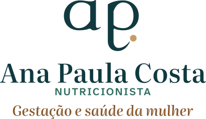
VerticalCapas, apresentações, peças quadradas. Única versão com a frase "Gestação e saúde da mulher".a partir de 210 px · 45 mm
SímboloSelo em posts, carimbo, ícone, rodapé de story, avatar. Quando o nome já aparece em outro lugar.a partir de 32 px · 10 mmAssinatura compactaSó o nome, para peças em que o símbolo já está em destaque (capa com o ap. grande, avatar ao lado).a partir de 230 px · 48 mm
Cada versão existe em cinco esquemas. O nome do arquivo diz qual é: -cor, -sobre-salvia, -sobre-escuro, -branco e -preto. Não existe outra combinação.
corFundos claros: Algodão, Bruma, Pedra, papel branco. Símbolo e nome em Mar Fundo, ponto Caramelo, descritor em Sálvia Funda.
sobre-salviaO mais da marca. Tudo em Mar Fundo e o ponto em Algodão, porque Caramelo sobre Sálvia Ana desaparece.
sobre-escuroMar Fundo e Mar Superfície. Símbolo e nome em Algodão, ponto Caramelo, descritor em Sálvia Ana.brancoUma cor só. Sobre área escura e calma de foto e em aplicações de uma cor (vinil, bordado claro).pretoImpressão em uma cor, fax, carimbo, formulário em preto e branco. Nunca como escolha de estilo.
A foto é da Ana; o logotipo não compete com ela. Há dois jeitos certos: a versão branca numa área escura e lisa da foto, ou uma faixa sólida de cor da marca com o esquema certo para aquela cor. Logotipo colorido direto sobre foto, nunca.
FaçaVersão branca no canto mais escuro e liso da foto, longe do rosto.
FaçaFaixa sólida Mar Fundo na base da foto, logotipo sobre-escuro dentro dela.
Use SVG sempre que o programa aceitar (site, Figma, gráfica): é vetor e não perde qualidade. Use PNG no Canva, no celular e no editor de vídeo; cada PNG vem em 512, 1024 e 2048 px de largura, com fundo transparente e a área de proteção já incluída na borda.
Os outros esquemas (-branco, -preto e as demais combinações) estão na pasta assets/marca/svg e, em PNG, em assets/marca/png, com o mesmo padrão de nome. O pacote completo fica na seção 24.
06Logotipo
Meio x de silêncio em volta, e nunca menor do que se lê.
A marca precisa de espaço livre para ser vista e de um tamanho mínimo para ser lida. Os dois números estão aqui, em pixels para tela e em milímetros para papel.
Em um minuto
Deixe ½ x livre em volta de qualquer versão. Na horizontal, isso é cerca de 4% da largura do logotipo.
Os PNG já trazem essa margem embutida: posicione pela borda do arquivo e o respiro está garantido.
Nenhum texto, borda, foto recortada, ícone ou elemento gráfico entra na área tracejada. Ela mede ½ x (metade da altura do a) em todos os lados. A área é o mínimo: em capa, cartão e topo de site, prefira o dobro.
Horizontal com a área de proteçãoA linha contínua interna é a borda do arquivo SVG; a externa é o limite do respiro.½ x = 4,1% da largura
SímboloNum símbolo de 110 px, o respiro é de cerca de 21 px.
PNG com a margem embutidaA borda tracejada é a borda do arquivo. Encoste outros elementos nela, nunca no desenho.
Versão e tamanho
Respiro (½ x)
Conta rápida
Horizontal com 300 px
12 px
largura × 0,041
Horizontal com 65 mm
2,7 mm
largura × 0,041
Vertical com 210 px
14 px
largura × 0,068
Símbolo com 110 px
21 px
largura × 0,19
Símbolo com 32 px
6 px
largura × 0,19
Valores arredondados para cima. Em dúvida, arredonde sempre para mais respiro.
O critério é a leitura: o descritor "NUTRICIONISTA" precisa ter pelo menos 7 px de altura de maiúscula na tela e 1,5 mm no papel (o equivalente a um texto de 6 pontos). Os exemplos abaixo estão no tamanho mínimo exato; na impressão deste manual, saem em milímetros reais.
Quando o espaço encolhe, a marca desce um degrau e perde uma camada de informação. Nunca reduza uma versão abaixo do mínimo dela: troque pela seguinte.
300 px ou mais
de 160 a 299 px
abaixo de 160 px
07Logotipo
Quinze jeitos de estragar a marca, todos comuns por aí.
Cada erro abaixo foi feito com o arquivo oficial, para você reconhecer na hora. Se a peça se parece com algum deles, volte ao arquivo certo e ao esquema certo.
Em um minuto
O logotipo não se deforma, não ganha efeito e não muda de cor fora dos cinco esquemas.
O ponto fica sempre. E só pode haver um ponto caramelo por peça: o do logotipo conta.
Nenhum enfeite ao lado do símbolo: folha, maçã, balança, fita métrica, barriga, âncora, leme ou bússola.
A referênciaProporção original, esquema cor, respiro de ½ x. Compare cada erro com esta peça.
Colorido sobre foto agitadaFolhas, água e reflexo engolem o traço. Use uma faixa sólida ou a versão branca em área escura e lisa (seção 05).
Dentro de um círculoO círculo só existe no avatar, e quem recorta é a plataforma. Nem na assinatura de e-mail.
Enfeite de nutriçãoFolha, maçã, talher, balança, fita métrica, barriga, bebê, âncora, leme ou bússola. A marca já conta a história sozinha.
Ana Paula Costa
Nome digitado ao ladoOutra fonte, outro espaço, outra altura. Use sempre a horizontal ou a assinatura compacta prontas.
Agenda aberta: avaliação online
Sem respiroTexto e foto ficam a ½ x de distância, no mínimo. Encostar faz a marca parecer parte da frase.
Abaixo do mínimoHorizontal com 120 px: "NUTRICIONISTA" vira risco. Abaixo de 300 px, use a reduzida (seção 06).
08Logotipo
Uma família só, do grupo da comunidade à aba do navegador.
As sub-marcas usam o mesmo símbolo. O avatar e o favicon são o símbolo redesenhado para caber em poucos pixels. E toda peça pública assina com o registro profissional.
Em um minuto
Comunidade Bem Nutrida (fundo Bruma) e Semana Bem Nutrida (fundo Mar Fundo): mesmo símbolo, nenhum ícone novo.
Avatar é um quadrado de cor sólida; a plataforma recorta o círculo. De 32 a 56 px, use a versão -pequeno.
Toda peça pública leva o CRN. Até o número chegar, nada vai a público.
"Bem Nutrida" vem do vocabulário da Ana ("Nutrida para começar o dia", a hashtag #vidanutrida). A construção é a da horizontal: o símbolo, o nome no itálico da Literata, um rótulo em caixa alta acima (COMUNIDADE ou SEMANA) e "com Ana Paula Costa" abaixo, para que ninguém perca de vista de quem é o cuidado.
Comunidade Bem NutridaO grupo da comunidade, gratuito e depois pago. Fundo preferido: Bruma.
Semana Bem NutridaO kit gravado de organização de refeições. Fundo preferido: Mar Fundo.
cor
sobre-salvia
sobre-escuro
branco
Regra
Como fazer
Por quê
Símbolo
Sempre o ap. da Ana, do arquivo da sub-marca
A família é uma só. Ícone novo para cada produto dilui a marca.
Tamanho mínimo
260 px · 55 mm
Abaixo disso, "com Ana Paula Costa" deixa de ser lido.
Manuscrito
Só como recado pontual ("com carinho, Ana")
Nunca dentro da sub-marca ou do logotipo.
Junto da marca principal
Sub-marca em destaque; a Ana assina só com o CRN no rodapé
Dois logotipos na mesma peça brigam e repetem o ponto caramelo.
Nos perfis pessoais (Instagram, TikTok), a foto de perfil é o rosto da Ana: as pessoas seguem a Ana, não um logotipo (veja a seção 20). O avatar com o símbolo entra onde ela não aparece sozinha: o grupo e o canal da Comunidade Bem Nutrida, os materiais da Semana Bem Nutrida e os perfis institucionais.
Todos os arquivos de avatar são quadrados de cor sólida, sem transparência. Instagram, WhatsApp, TikTok e YouTube recortam o círculo sozinhos; um arquivo com cantos transparentes vira um quadrado preto no WhatsApp.
O arquivo é quadrado, a plataforma faz o círculoO símbolo ocupa 64% da largura e fica dentro do recorte. Na versão pequena, o traço é mais cheio e o ponto 1,5 vez maior.Tamanho real
Comunidade Bem NutridaMensagem fixada: boas-vindas e regras
Semana Bem NutridaMaterial do dia 1 disponível
FaçaEm lista de conversa e comentário (32 a 56 px), use avatar-instagram-pequeno ou -mar-pequeno: o ponto continua visível.
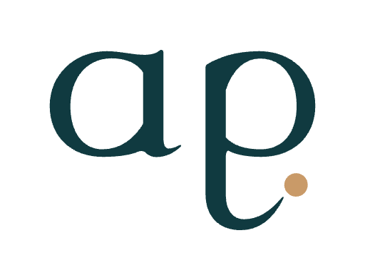
Comunidade Bem NutridaPNG transparente: fundo preto
Semana Bem NutridaAvatar padrão a 48 px: o ponto some
Não façaLogotipo com fundo transparente como avatar, ou o avatar padrão em tamanho de lista.
O favicon é o símbolo em Algodão sobre um quadrado arredondado Mar Fundo, encorpado para ser lido na aba do navegador. Em 16 px ele tem um desenho próprio, feito pixel a pixel, que lê "a." com o ponto à direita.
Ana Paula Costa · Nutricionista×
Ana Paula Costa · Nutricionista×
16 px, ampliado 8 vezesSVG, 32 px ou maisTela inicial do celular
Favicon nas abas clara e escuraO ponto caramelo segura a leitura nos dois temas do navegador.
Para quem monta o site
Coloque no <head> o favicon.svg (navegadores atuais), o favicon-32.png (reserva), o favicon-180-apple-touch.png (tela inicial do iPhone) e o favicon-192.png e o favicon-512.png (Android). A prévia de link usa og-image-1200x630.png.
O Código de Ética e de Conduta do Nutricionista pede nome, profissão e número de inscrição no conselho regional (CRN) em toda atuação, nos meios físicos e virtuais (veja a seção 19). Por isso o registro anda junto da marca: no rodapé dos posts, no site, no cartão de visita e no plano alimentar. A composição é sempre a mesma: a marca, um fio fino e a linha do registro em Atkinson, alinhada pela base.
O corpo não falhou.
Ana Paula Costa · Nutricionista CRN-4 em confirmação
Rodapé de post 4:5Faixa Mar Fundo, símbolo sobre-escuro (o ponto dele é o caramelo da peça) e o registro em Algodão.1080 × 1350 px
Nutricionista · CRN-4 em confirmação Atendimento online · endereço do site em confirmação
Rodapé de documento e plano alimentarReduzida em cor, fio Pedra e duas linhas em Atkinson 14 px, Grafite Quente.
Peça
Como o CRN aparece
Tamanho da linha
Post e carrossel
Rodapé com símbolo, fio e registro, em todos os cards
26 px na arte de 1080
Story e Reels
Na primeira tela ou na legenda, fora dos 250 px de cima e de baixo
26 px na arte de 1080
Site
Rodapé de todas as páginas, ao lado do nome
14 px
Cartão, plano alimentar, receita
Abaixo do nome, sempre na frente do documento
7 a 8 pt
Pendência P1
O número do CRN-4 ainda está em confirmação. Todas as peças trazem o marcador "CRN-4 em confirmação" e nenhuma vai a público antes do número real. Quando chegar, troque o marcador pelo formato "CRN-[região] [número]", exatamente como está na carteira da Ana.
Sálvia por cima, Algodão para ler, um ponto quente por peça.
Dez cores principais e três de apoio. O verde-sálvia é da Ana há seis anos e as seguidoras já o reconhecem: ele ocupa as áreas grandes. O caramelo aparece uma vez só, no ponto.
Em um minuto
Sálvia Ana e Bruma somam 44% do conjunto de peças: são a cara da marca. Algodão é o fundo de leitura.
Texto vai em Mar Fundo ou Grafite Quente. Sálvia Ana e Caramelo nunca são cor de texto sobre fundo claro.
Um ponto caramelo por peça, e o do logotipo conta. Se o logotipo colorido já está na peça, as rotas e marcadores usam ponto verde.
Para a gráfica, use as cores para a gráfica desta página (CMYK, as quatro tintas da impressão; papel revestido) e peça prova de cor na primeira tiragem.
Clique em Copiar para levar o código direto para o Canva, o Figma ou o editor de vídeo. A porcentagem no canto é a fatia de cada cor no conjunto das peças. O CMYK foi convertido pelo perfil de impressão em papel revestido (ISO Coated v2, o padrão europeu FOGRA39 que as gráficas brasileiras usam): não calcule outro na mão.
28%
Sálvia Ana
Hex
#63AF9C
RGB
99 175 156
CMYK
62 9 44 2
Cor-assinatura e superfície dominante: avatar, capas de destaque, faixas, capas de post. Nunca texto sobre claro.
26%
Algodão
Hex
#F2F0EB
RGB
242 240 235
CMYK
6 5 9 0
Fundo claro neutro, tirado do fundo dos ensaios dela. Leitura longa. No papel, pode ser o próprio papel natural.
16%
Bruma
Hex
#D8ECE5
RGB
216 236 229
CMYK
18 2 13 0
Sálvia clareada: segunda superfície, fundo do modo Gestação e da Comunidade Bem Nutrida.
16%
Mar Fundo
Hex
#103A40
RGB
16 58 64
CMYK
85 49 50 60
Símbolo, nome, títulos e a base escura do modo 40+. Verde-mar azulado, não é verde-floresta.
6%
Sálvia Funda
Hex
#2F6E60
RGB
47 110 96
CMYK
77 31 58 29
O verde que se lê: texto verde, botões, links, descritor do logotipo e ponto do modo Gestação.
4%
Pedra
Hex
#E4E0D8
RGB
228 224 216
CMYK
13 11 16 0
Cartões, caixas e fundos de apoio neutros, sobretudo no modo Pós-parto.
2%
Caramelo
Hex
#C99A68
RGB
201 154 104
CMYK
19 39 61 8
O ponto de chegada. Um por peça, e o do logotipo conta. Nunca texto sobre claro.
1%
Caramelo Tostado
Hex
#8A5A2E
RGB
138 90 46
CMYK
33 58 82 33
O caramelo que se lê: rótulos, frase de apoio e links quentes sobre Algodão.
0,5%
Ouro Velho
Hex
#C9B583
RGB
201 181 131
CMYK
22 24 52 5
Acento e botão do modo 40+. Só sobre Mar Fundo. Dourado acinzentado, longe da mostarda.
0,5%
Grafite Quente
Hex
#2B2724
RGB
43 39 36
CMYK
65 60 60 74
Texto corrido longo: legendas, plano alimentar, artigos, e-mails. Nunca preto puro.
Some as peças de uma semana (feed, stories, site, plano alimentar) e a mistura deve ficar perto desta barra. Uma peça sozinha pode fugir dela; o conjunto, não. Se o feed da semana ficou mais escuro do que verde, a próxima peça volta para a Sálvia Ana.
Sálvia Ana 28%
Algodão 26%
Bruma 16%
Mar Fundo 16%
Sálvia Funda 6%
Pedra 4%
Caramelo 2%
Caramelo Tostado 1%
Ouro Velho 0,5%
Grafite Quente 0,5%
Gestação
Ferro na gestação: o que muda no prato
40+
Você não falhou. A fase mudou
Consulta online
Levo
Deixo
Não existe alimento vilão.
Comece aqui
Uma semana de feedVerde em quatro das nove peças, Algodão e Pedra para respirar, Mar Fundo em duas. O quente é só ponto.Proporção 4:5
O ponto é a chegada da rota e o ponto final da frase da Ana. Repetido, ele vira enfeite e perde o sentido. Quando a peça já leva o logotipo ou o símbolo colorido (ponto caramelo), a Rota e os marcadores passam a usar ponto verde: rota-divisor-salvia.svg e rota-divisor-curto-salvia.svg. Pranchas de apresentação da marca, como este manual, não contam como peça.
FaçaLogotipo com o ponto caramelo e Rota com ponto Sálvia Funda. Um único quente na peça.
Não façaDois pontos caramelo disputam o olhar e nenhum dos dois marca a chegada.
FaçaSobre Sálvia Ana, símbolo em Mar Fundo e ponto em Algodão.
Não façaCaramelo sobre Sálvia Ana: as duas cores têm a mesma luminosidade e o ponto some.
Tela e papel não mostram a mesma cor. O verde-sálvia é o que mais varia: no papel comum ele tende a ficar acinzentado. Siga esta tabela ao mandar arquivo para a gráfica.
Papel
O que enviar
O que pedir
Revestido (couché, cartão fosco ou brilho)
Os valores CMYK desta página
Prova de cor impressa da Sálvia Ana e do Caramelo lado a lado.
Não revestido (offset, reciclado, pólen)
O arquivo em RGB
Que a gráfica converta com o perfil dela para papel não revestido. Não use os números da tabela.
Cor especial (Pantone)
O hex e a prova impressa
Que a gráfica escolha no leque físico a referência mais próxima, com a prova ao lado.
Pendência P5
Antes da primeira tiragem de cartões, a gráfica faz a prova de cor impressa da Sálvia Ana e do Caramelo e confirma o papel e o perfil de impressão.
Quem lê a Ana está cansada, sem óculos ou com o filho no colo.
Por isso todo texto passa no teste de contraste antes de sair. Aqui estão os pares que podem, os que só servem para enfeitar e os que nunca podem, mais as regras de cor para gráficos.
Em um minuto
Texto precisa de pelo menos 4,5 para 1 de contraste com o fundo. Texto longo, de preferência 7 para 1 ou mais.
Sobre Sálvia Ana, o texto é Mar Fundo, nunca branco nem Algodão. Isso muda o costume antigo das faixas dos Reels.
No modo 40+, o botão é Ouro Velho com texto Mar Fundo. O botão verde some sobre o fundo escuro.
Em gráfico, no máximo três cores, rótulo escrito ao lado de cada parte e nunca vermelho contra verde.
O contraste mede a diferença de luz entre a letra e o fundo, numa escala de 1 para 1 (mesma cor) até 21 para 1 (preto no branco). As diretrizes internacionais de acessibilidade para a web pedem pelo menos 4,5 para 1 para texto comum, o nível chamado AA. O nível AAA, de 7 para 1 ou mais, é o que usamos para texto longo. Entre 3 e 4,5 para 1, só texto grande (24 px ou mais, ou 19 px em negrito) e ícones. Abaixo de 3, a cor só enfeita: não carrega palavra nem informação.
Todos os números abaixo foram calculados com a fórmula oficial e estão no arquivo tokens.json.
O botão de ação tem altura mínima de 48 px e é sempre de cor sólida. No fundo claro, Sálvia Funda com texto Algodão; ao passar o mouse, escurece para Mar Fundo. No modo 40+, inverte para Ouro Velho com texto Mar Fundo. Link no meio do texto vai sublinhado, na cor de título da fase, nunca só pela cor.
Gráfico aparece em carrossel educativo, no relatório de acompanhamento e em aula. A cor organiza, mas quem explica é o rótulo escrito. Siga a ordem da tabela: a primeira série pega a primeira cor, e assim por diante. Mais de três séries vira tabela.
Papel no gráfico
Sobre fundo claro
Sobre Mar Fundo (40+)
Série 1 (a principal)
Sálvia Funda
Sálvia Ana
Série 2
Mar Fundo
Algodão
Série 3
Caramelo Tostado
Ouro Velho
O valor em destaque
Barra em Mar Fundo e um ponto Caramelo
Barra em Algodão e um ponto Ouro Velho
Grade, eixo e números
Linhas Pedra; números em Grafite Quente
Linhas Mar Superfície; números em Algodão
Uma cor para a série, outra para o dia que importa, e o ponto caramelo uma vez só.No modo 40+, as mesmas regras com as cores claras da fase.Na rosca, a Sálvia Ana só entra em área grande, com rótulo escrito ao lado.
11Cor
O símbolo é o mesmo. A fase muda a temperatura.
Gestação é clara, pós-parto é morno, 40+ é profundo. A leitora reconhece a série pela cor antes de ler o título, e a Ana continua sendo a mesma em todas.
Em um minuto
Gestação: fundo Bruma, ponto Sálvia Funda. Pós-parto e amamentação: fundo Algodão, ponto Caramelo (o padrão). 40+ e menopausa: fundo Mar Fundo, ponto Ouro Velho.
Uma peça, um modo. Conteúdo que serve para todas as fases usa o modo Pós-parto, que é o padrão da marca.
No modo 40+, o texto fica 2 px maior, o botão vira Ouro Velho e a foto nunca mostra gestação.
Foto com cor natural, sem filtro e sem tinta por cima. Texto sobre foto só dentro de faixa sólida.
Mesma grade, mesma fonte, mesma moldura em arco. Mudam o fundo, a foto e a cor do ponto. É assim que a seguidora sabe, de relance, que aquele carrossel é para ela.
A Rota mergulha e sobe até a fase atual, marcada pelo ponto maior. Ela substitui fita métrica, balança e qualquer marca de medida. Cada modo tem o seu arquivo. Use a partir de 700 px de largura; abaixo disso, use os botões de fase.
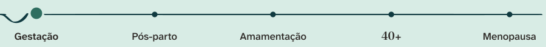
regua-fases-modo-gestacao.svg · sobre Brumaregua-fases.svg · sobre Algodãoregua-fases-modo-40mais.svg · sobre Mar Fundo
Ensaio grávida (sem mão na barriga) e as fotos de todas as fases.
Pós-parto e amamentação
Pós-parto
Fotos de todas as fases.
Mulheres de 40 anos em diante e menopausa
40+
Fotos do evento e de todas as fases. Nunca gestação.
Todas as fases (consulta, receitas, bastidores)
Pós-parto, o padrão
Fotos de todas as fases.
No site, o modo é ligado por um atributo: data-fase="gestacao", "pos-parto" ou "40-mais", com as cores do tokens.css. No Canva, salve três modelos de cada formato, um por modo.
FaçaNo modo 40+, foto do evento, que já nasce escura e conversa com o Mar Fundo. Ponto Ouro Velho.
Não façaFoto de gestação no modo 40+ e ponto do modo errado. A leitora de 48 anos não se vê ali.
A foto é real e mostra a cor de verdade: pele, comida, roupa. A paleta da marca entra em volta da foto, no fundo, no arco e na faixa, nunca por cima dela. Nos ensaios, a Ana veste branco, caramelo, jeans e preto: todas cores que já conversam com a paleta.
Luz natural, de frente ou de lado, perto da janela. Evite luz amarela de teto.
Temperatura levemente quente, contraste suave, pretos sem esmagar. Um único ajuste de cor da marca, aplicado igual em todas as fotos e vídeos.
Proibido filtro de beleza que afine rosto ou corpo, e qualquer efeito que mude a aparência.
Fundo bagunçado vira desfoque, nunca filtro colorido.
Gestação
Fundo claro: pede Bruma ou Algodão em volta.Muito ar no topo: espaço para o título.
Todas as fases
Camisa branca: cabe em qualquer modo.Jeans: azul que conversa com o Mar Fundo.Blusa caramelo: o quente da foto já é o ponto.
40+ e menopausa
Fundo escuro: casa com o Mar Fundo.Pose firme para os temas de 40+.
Água conta como refeição?
FaçaTexto numa faixa sólida Mar Fundo, presa à base da foto.
Água conta como refeição?
Não façaTexto solto sobre a foto: some na janela clara e muda de foto para foto.
Não façaCamada de cor da marca por cima da foto: a pele fica verde e a Ana deixa de parecer ela.
Legenda de vídeo
Legenda queimada no vídeo vai em texto Algodão sobre caixa Mar Fundo com 85% de opacidade (ou texto claro com contorno escuro de 4 px). Uma palavra por frase pode vir em Sálvia Ana, a que carrega o sentido. Tamanho de 56 a 64 px num vídeo de 1080 px de largura, no máximo duas linhas.
Não pare o ferro sem falar comigo
Reels 9:16 com legendaBase da legenda no máximo em 1500 px de altura, dentro da zona segura.1080 × 1920 px
AaLegenda Algodão sobre Mar Fundo10,8 para 1 · AAA
AaPalavra em Sálvia Ana sobre Mar Fundo4,8 para 1 · AA
Parte IV
Tipografia
Literata para dizer, Atkinson para ler sem esforço.
Literata para dizer, Atkinson para ler sem esforço.
Duas fontes gratuitas fazem todo o trabalho. A Literata dá voz aos títulos e às frases da Ana; a Atkinson Hyperlegible Next carrega a explicação, com letras que não se confundem mesmo para quem já precisa de óculos para perto.
Em um minuto
Literata em títulos, nome e frases da Ana. Atkinson Hyperlegible Next em todo o resto: texto, botão, rótulo, legenda de vídeo.
O itálico da Literata é a voz da Ana: só nas frases dela, em citações e no "Bem Nutrida".
Todo número sai na Literata, porque a Atkinson desenha o zero cortado e "40+" viraria "4Ø+".
No Canva e no CapCut, suba os arquivos fixos desta seção. Substituta só quando não houver outro jeito.
A marca usa uma serifa e uma sem serifa, com papéis que nunca se trocam. Juntas cobrem o que a Ana faz: acolher com voz própria e explicar com clareza para mulheres que leem no celular, muitas vezes cansadas, de madrugada ou com o filho no colo.
Para dizer · títulos e nome
Aaa
Literata
ABCDEFGHIJ abcdefghij áãàâçéêíóõôú itálico
Serifa criada para ler livros inteiros na tela. Tem bojos abertos e um contraste de traço que lembra a pena do símbolo ap., por isso combina com o logotipo sem imitá-lo. É variável: o mesmo arquivo ajusta o peso e o desenho conforme o tamanho.
Pesos da marca: 560 a 600 nos títulos (580 é o padrão) e o itálico para a voz da Ana.
Para ler · texto e interface
Aa
Atkinson Hyperlegible Next
ABCDEFGHIJ abcdefghij áãàâçéêíóõôú Seminegrito
Desenhada pelo Braille Institute, instituição americana que atende pessoas cegas e com baixa visão, para quem enxerga pouco. Cada letra tem um traço que a diferencia da vizinha. Para o público 45+, que convive com a vista cansada para perto, isso é a diferença entre ler e desistir.
Pesos da marca: 400 no texto, 500 em destaques leves, 600 em botões, rótulos e legendas de vídeo, 700 raramente.
Il1 rn m
Atkinson Hyperlegible Next I com barras, l com cauda, 1 com bandeira: três formas.
Il1 rn m
Sem serifa comum do celular I e l viram o mesmo palito; "rn" passa por "m".
Por que a Atkinson no textoEm "ferro, 1 comprimido" ou "Ilha", a leitora não pode hesitar.56 px na tela
Quando a peça cita a Ana, a letra muda: entra o itálico da Literata. A leitora aprende, sem ninguém explicar, que aquela inclinação é a Ana falando. Por isso o itálico é reservado. Se ele aparece em todo lugar, deixa de ser voz e vira enfeite.
"A gente não começa pelo ideal. Começa pelo possível."
Use o itálico
Exemplo
Fonte
Frase-assinatura da Ana em post, capa ou site
Cada fase pede outro prato.
Literata itálico 560 a 580
Citação de abertura ou de fecho
Isso não é uma perda. É uma transição.
Literata itálico
O nome "Bem Nutrida"
Comunidade Bem Nutrida
Vem pronto no arquivo da sub-marca
Recado pessoal
Com carinho, Ana
Literata itálico, no lugar de letra manuscrita
FaçaFrase curta da Ana em Literata itálico, grande, com a assinatura reta em Atkinson. O itálico é só a fala.
DICA IMPORTANTE PARA VOCÊ
Beba água ao longo do dia, faça lanches pequenos e mantenha a suplementação conforme a orientação. Lembre de anotar tudo no seu diário alimentar todos os dias.
Não façaItálico em caixa alta, itálico da Atkinson para enfatizar texto corrido, parágrafo inteiro inclinado. Para destacar uma palavra no texto, use seminegrito.
A Atkinson Hyperlegible Next desenha o zero cortado por uma barra, para não confundir com a letra O. É ótimo para um código, mas "40+", o nome da fase mais importante da marca, sai "4Ø+" e parece erro de digitação. Por isso todo algarismo da marca vem da Literata. No site isso é automático: o tokens.css já põe os números da Literata dentro da Atkinson. No Canva, no CapCut e na gráfica, você troca a fonte do número à mão.
40+ 2026
FaçaAlgarismos da Literata 600, o sinal "+" pode seguir na Atkinson. Zero aberto, leitura imediata.
40+ 2026
Não façaNúmero na Atkinson: o zero cortado faz "40+" parecer "4Ø+".
Assunto
Escreva assim
Não escreva
Fase
40+ · Semana 1 · 1º trimestre
40 + · quarenta mais · 1 tri
Horário
7h30 · 12h
07:30 hrs · 12:00h
Data
12 de outubro · 12/10
12-10 · Out 12
Medida na receita
2 colheres de sopa · 200 ml
2 c.s. · 200ML
Tabela com colunas de número
Algarismos de largura igual (font-variant-numeric: tabular-nums)
As duas fontes são gratuitas e livres, com licença aberta (SIL Open Font License) que permite uso comercial em posts, site, anúncios e impressos, sem pagar nada. Baixe os arquivos daqui mesmo ou do Google Fonts.
O melhor caminho é sempre subir as fontes da marca para o aplicativo. Só use uma substituta quando isso não for possível, e marque a peça para refazer depois.
Aplicativo
Como pôr as fontes da marca
Título
Texto e legenda
Canva com plano pago
Kit de Marca, aba Fontes, Enviar fonte. Suba os arquivos fixos e defina os estilos de título e texto do kit.
Literata Assinatura (e o itálico)
Atkinson Hyperlegible Next Regular e SemiBold
Canva gratuito
O plano gratuito não aceita envio de fonte. Procure pelo nome na lista de fontes, nesta ordem.
Literata · se não houver: Lora · Merriweather
Atkinson Hyperlegible (a versão anterior, mesma família) · se não houver: Open Sans
CapCut no celular
Texto, Fonte, ícone de importar (pasta ou "+"). Escolha os arquivos fixos já salvos no celular. Cada peso entra como uma fonte.
Literata Assinatura
Atkinson SemiBold para legenda; Regular para texto
CapCut no computador
Instale as fontes no Mac ou no Windows (passos acima) e reabra o CapCut: elas aparecem na lista.
Literata Assinatura
Atkinson SemiBold e Regular
Substituta no CapCut
Se a importação falhar, escolha na lista do app uma serifa clássica para o título e uma sem serifa simples, de letras abertas, para a legenda.
Serifa de livro, peso médio
Sem serifa reta, seminegrito; nunca condensada, fina ou manuscrita
As listas de fontes dos aplicativos mudam conforme o plano e a versão: confira o nome antes de produzir.
13Tipografia
Grande o bastante para ler sem óculos.
Cada tela tem a sua régua: o site em pixels, as redes numa arte de 1080 px, o papel em pontos. Em todas, a ordem de leitura é a mesma e há um tamanho abaixo do qual nada desce.
Em um minuto
No máximo cinco níveis por peça: rótulo, título, chamada, texto e botão, nessa ordem.
Site: texto de 18 px (17 no celular) e 20 px no modo 40+. Literata só a partir de 24 px.
Arte de 1080 px: título de 88 a 92 px, texto de 36 px, nada abaixo de 32 px (rodapé com CRN: 28 px).
Papel: texto do plano alimentar em 12 pt, nada abaixo de 9 pt.
Toda peça tem no máximo cinco níveis, sempre na mesma ordem. O rótulo diz o assunto, o título diz a ideia, a chamada explica em uma frase, o texto ensina e o botão diz o próximo passo. Se a peça precisa de mais níveis, ela está tentando dizer coisas demais: divida em duas.
Pós-parto e amamentação
Seu corpo mudou de fase. Seu prato também precisa.
Um plano que cabe na rotina com o bebê, feito a partir dos seus exames.
Nas primeiras semanas em casa, o que mais pesa é a falta de tempo. A gente não começa pelo ideal: começa pelo possível, com refeições que se montam com uma mão só.
As amostras abaixo estão no tamanho real da tela em que você lê. Abra este manual no celular e no computador para ver os dois tamanhos: o site usa exatamente estas medidas, já prontas no tokens.css.
Cada fase pede outro prato.
Display Literata 580 · 72 px no computador, 44 px no celular · entrelinha 1,06 · --texto-display
Nenhuma mulher é dose única.
Título 1 Literata 580 · 52 px e 36 px · entrelinha 1,1 · --texto-h1
A gente começa pelo possível.
Título 2 Literata 580 · 38 px e 29 px · entrelinha 1,15 · --texto-h2
O que muda no prato da gestante
Título 3 Literata 560 · 26 px e 22 px · entrelinha 1,25 · --texto-h3
Ferro em jejum absorve mais. E também enjoa mais. Se o seu estômago reclama, existe outro horário, e a gente acha juntas.
Texto Atkinson 400 · 18 px e 17 px · entrelinha 1,65 · até 70 caracteres por linha
Isso não é uma perda. É uma transição, e ela tem estratégia própria.
Texto no modo 40+ Atkinson 400 · 20 px e 19 px · 2 px a mais em toda peça desse público
Agendar minha avaliação
Botão Atkinson 600 · 17 px · altura mínima 48 px · verbo na primeira pessoa
Toda arte das redes é feita numa tela de 1080 px de largura. No celular, ela aparece com cerca de 390 px: tudo encolhe quase três vezes. Por isso um texto de 36 px na arte chega à leitora com uns 13 px, o limite do confortável. As medidas abaixo valem para post, carrossel, story, capa de Reels e status do WhatsApp.
Nível
Na arte de 1080 px
Fonte e regra
Título de post e carrossel
88 px
Literata 580, entrelinha 1,08, até 3 linhas
Título de story e capa de Reels
92 px
Literata 580, até 3 linhas, dentro da zona segura
Subtítulo
46 px
Atkinson 500 ou Literata itálico (frase da Ana)
Texto
36 px (mínimo 32)
Atkinson 400, entrelinha 1,35, até 5 linhas por cartão
Rótulo e botão
26 a 32 px
Atkinson 600, rótulo em caixa alta com entreletra 14%
Assinatura e CRN
28 px (mínimo)
Atkinson 600 no nome, 400 no CRN, no rodapé
Legenda queimada no vídeo
56 a 64 px
Atkinson 600, no máximo 2 linhas de 32 caracteres
No story e no Reels, nada essencial nos 250 px de cima nem nos 380 px de baixo (480 px em anúncio).
Post de carrosselTítulo 88 · texto 36 · rótulo 26 · rodapé 281080 × 1350 px
Story de perguntaTítulo 92 · botões 32 · rótulo 261080 × 1920 px
Capa de ReelsTítulo 92 dentro do retângulo x 80 a 1000 · y 420 a 15001080 × 1920 px
Legenda queimada no vídeo
A legenda é a fala da Ana escrita, não um resumo. Precisa ser lida de relance por uma mulher de 45 anos sem os óculos. Use a Atkinson em seminegrito (600), de 56 a 64 px, em caixa normal, com no máximo duas linhas de até 32 caracteres. Texto em Algodão sobre caixa Mar Fundo com 85% de opacidade; uma palavra por frase em Sálvia Ana, a que carrega o sentido.
Legenda queimadaAtkinson 600 · 60 px · base do bloco em y = 1500 · lateral até x = 9401080 × 1920 px
No papel a medida é em pontos (pt), a unidade da gráfica e do Word. O plano alimentar é lido de perto, com calma, muitas vezes preso na geladeira: o texto fica em 12 pt, maior do que o padrão de escritório, para que a paciente leia sem procurar os óculos.
Plano alimentar de exemploCardápio ilustrativo, só para mostrar a diagramação.A4 · 210 × 297 mm
Nível
Tamanho
Fonte
Título de capa
28 a 36 pt
Literata 580
Título de página
24 a 26 pt
Literata 580
Subtítulo
14 pt
Atkinson 600 (Literata só a partir de 18 pt)
Texto do plano e de materiais
12 pt, entrelinha 1,5
Atkinson 400
Rótulo
8,5 a 9 pt
Atkinson 600, caixa alta, entreletra 14%
Rodapé, CRN e notas
9 pt (mínimo)
Atkinson 400
Cartão de visita 90 × 50 mm
8,5 pt (mínimo 8)
Atkinson; o nome vem do arquivo do logotipo
1 pt = 0,35 mm. Margem mínima de 15 mm em folha A4.
A partir dos 40 anos, quase todo mundo passa a ter a vista cansada para perto: as letras pequenas embaçam e a pessoa afasta o celular. Boa parte de quem segue a Ana está nessa fase ou chega a ela em breve. Texto pequeno não é elegante para essa leitora: é texto que ela não lê. Os mínimos abaixo não se negociam.
13 px
Nenhuma mulher é dose única. A sua fase pede um plano seu.
Nunca
15 px
Nenhuma mulher é dose única. A sua fase pede um plano seu.
Só legenda
17 px
Nenhuma mulher é dose única. A sua fase pede um plano seu.
Texto no celular
19 px
Nenhuma mulher é dose única. A sua fase pede um plano seu.
Modo 40+
Onde
Mínimo
Observação
Texto do site no celular
17 px (19 px no 40+)
Nada de texto corrido abaixo disso, nem em rodapé
Legenda, nota, rótulo na tela
14 a 15 px
Só frases curtas; nunca um parágrafo
Literata em qualquer tela
24 px
Abaixo disso a serifa fica fina demais: use Atkinson
Texto em arte de 1080 px
32 px
Chega ao celular com uns 11,5 px; 36 px é o padrão
Assinatura e CRN na arte
28 px
A única exceção abaixo de 32 px
Legenda de vídeo
56 px
Em vídeo de 1080 px de largura
Impresso
9 pt (texto 12 pt)
Cartão de visita: 8 pt
FaçaTítulo de 88 px, texto de 36 px e no máximo cinco linhas por cartão. O que não couber vai para o cartão seguinte.
Não façaLiterata em 22 px e parágrafo inteiro num cartão: no celular vira uma mancha cinza. Assinatura de 18 px some.
A Rota é o gesto do p aberto em linha. Dela saem os divisores, as setas, a régua de fases, a moldura das fotos e o padrão de fundo; a grade, os raios e as sombras seguem a mesma mão.
Em um minuto
Toda rota termina num ponto e mergulha uma vez só. Linha sem ponto ou em onda não é da marca.
Um ponto caramelo por peça, e o do logotipo conta. Peça que já tem o logotipo colorido usa a rota com ponto Sálvia Funda.
Foto real da Ana vai na moldura em arco: topo redondo, base reta, de preferência sobre um arco Sálvia Ana.
Espaço sempre em múltiplos de 4 px; cantos de 8, 14 e 24 px, pílula nos botões.
A Rota é desenhada com a mesma pena larga do símbolo: o plano é fino, a descida engrossa, a ponta afina antes do ponto. É por isso que ela parece escrita à mão e não uma linha de computador. Use sempre o arquivo; não redesenhe com a ferramenta de linha do Canva.
1234
1 plano fino · 2 mergulho encorpado · 3 ponta que afina · 4 ponto de chegadarota-divisor.svg
Toda rota termina num ponto. É a chegada e também o ponto final do jeito de falar da Ana.
Um mergulho por rota. É a virada de rota dela, da Marinha Mercante para a Nutrição. Duas quedas viram onda e perdem o sentido.
Um ponto caramelo por peça. O do logotipo conta. Com logotipo colorido, a rota usa o arquivo -salvia.
A pena não muda. Não engrosse, não contorne, não estique a altura: aumente ou diminua a rota inteira.
FaçaUm mergulho, a ponta afinando e o ponto no fim. Escala proporcional.
Não façaOnda contínua e traço de espessura igual. Vira enfeite de convite e apaga a virada de rota.
Não façaRota sem ponto. Sem chegada, a linha não é da marca.
O divisor separa blocos: entre seções do site, na capa do carrossel, no plano alimentar e na assinatura de e-mail. Nunca use mais de um por tela; quando tudo é divisor, nada separa nada.
Divisor, fundo claroPeça sem logotipo colorido.rota-divisor.svg
Divisor, fundo escuroTraço Algodão sobre Mar Fundo.rota-divisor-sobre-escuro.svg
Divisor sem carameloQuando o logotipo colorido já gastou o ponto quente.rota-divisor-salvia.svg
Divisor curtoAssinatura de e-mail, cartão, fim de legenda em arte.rota-divisor-curto.svg · -salvia
A seta de chamada
Dentro de botão e de link de ação, a seta é a própria Rota em miniatura: corre, mergulha e aponta. Ela tem 40 px de largura no botão de 17 px de texto e anda 3 px para a direita quando o dedo ou o mouse passa por cima. Uma seta por tela, só na ação principal.
Botão principal e link secundárioClaro: Sálvia Funda com texto Algodão (5,2 para 1). Modo 40+: Ouro Velho com texto Mar Fundo (6,1 para 1). Passe o mouse para ver a seta andar.altura 52 px · seta 40 px
AaAlgodão sobre Sálvia Funda (botão)5,2 para 1 · AA
AaMar Fundo sobre Ouro Velho (botão 40+)6,1 para 1 · AA
AaSálvia Funda sobre Mar Fundo2,1 para 1 · proibido em botão
A régua mostra em que fase a conversa está: Gestação, Pós-parto, Amamentação, 40+ e Menopausa. A rota mergulha e sobe até a fase atual, marcada pelo ponto maior. Ela ocupa o lugar de fita métrica, balança e qualquer outra marca de medida, que não entram na marca.
Régua padrão (modo Pós-parto)Traço Mar Fundo, nomes em Grafite Quente, ponto caramelo na fase atual.900 × 78 px · mínimo 700 px
Modo Gestaçãoregua-fases-modo-gestacao.svgModo 40+regua-fases-modo-40mais.svg
Em tela menor que 700 px (celular, story), a régua não cabe legível. Troque pelos botões de fase: pílulas com o ponto da cor de cada fase, a escolhida preenchida em Mar Fundo.
GestaçãoPós-parto40+
Botões de fase"40" sempre em Literata, para o zero sair aberto.altura 44 px · ponto 9 px
A foto real da Ana entra num recorte de topo redondo e base reta: o raio do topo é metade da largura. Atrás dela, de preferência, um arco Sálvia Ana maior, deslocado para cima, como uma porta aberta. É o único recorte de foto da marca; círculo fica só para o avatar, que a própria rede recorta.
Arco sobre arco Sálvia AnaTopo do site, capa de apresentação.
Arco com fio Sálvia FundaPost 4:5 e story sobre Bruma.
Modo 40+Arco Mar Médio sobre Mar Fundo; só fotos sem gestação.
Medida
Valor
Como aplicar
Topo
raio = ½ largura
No Canva: retângulo com cantos de cima no máximo, ou o arquivo moldura-arco-mascara.svg como moldura.
Base
reta ou 14 px
Reta em arte de rede; 14 px de raio nos cantos de baixo no site.
Proporção
400 × 520 (1 : 1,3)
Rosto no terço de cima, com ar acima da cabeça.
Arco de fundo
+6% de cada lado
Sálvia Ana sobre claro, Mar Médio sobre Mar Fundo. Começa acima da foto e desce até a base.
FaçaCabeça inteira dentro do arco, com respiro em cima. Posicione a foto antes de recortar.
Não façaArco cortando a testa ou o cabelo. O recorte vira janela de cela, não porta aberta.
O padrão é a Rota repetida em linhas desencontradas, com pontos Sálvia Ana (claro) ou Sálvia Funda (escuro). Ele dá textura a capas, papelaria e fundos de vídeo. Nunca usa caramelo e nunca fica atrás de texto longo: o título vai numa faixa ou cartão sólido por cima.
Plano alimentar
Semana 1
Padrão claroTraço Sálvia Clara e ponto Sálvia Ana sobre Algodão.padrao-modulo-claro.svg
Padrão escuroTraço Mar Médio e ponto Sálvia Funda sobre Mar Fundo.padrao-modulo-escuro.svg
Todo espaço da marca é múltiplo de 4 px. Use os dez passos abaixo e nada no meio: é isso que faz o site, o post e o plano alimentar parecerem da mesma família.
Os cantos da marca são macios, nunca vivos e nunca bolha. São quatro raios e um arco; cada um tem o seu lugar.
8 pxCampos de formulário, etiquetas, miniaturas14 pxFotos soltas, avisos, base do arco no site24 pxCartões e blocos de conteúdoPílulaBotões, botões de fase, selosArcoSó para foto da Ana
Sombra suave0 1px 2px · 0 6px 18pxBotões e cartões em repouso.
Sombra de cartão0 2px 4px · 0 14px 36pxCartão que flutua sobre foto, janela aberta.
A sombra é sempre tingida de Mar Fundo (entre 6% e 10% de opacidade), nunca preta. No modo 40+, sobre fundo escuro, troque a sombra por uma superfície Mar Superfície.
Oito ícones desenhados com a pena do símbolo, cada um com o seu ponto. Na capa, o fundo é Sálvia Ana, o traço Mar Fundo e o ponto Algodão; o ícone ocupa 62% do quadro, dentro da área que sobra depois do recorte circular.
Comece aquiA rota parte do ponto e vira seta.
ConsultaTela de atendimento online com o ponto.
ComunidadeTrês pessoas, a do centro com o ponto.
GestaçãoBroto de duas folhas, o ponto como botão.
Pós-partoA rota desce fundo e volta à mesma altura.
40+Corre, mergulha e sobe até um ponto mais alto.
ReceitasLivro aberto, o ponto na página.
DepoimentosDuas aspas iguais e o ponto final.
A grade de 48 × 48
Cada ícone nasce numa grade de 48 × 48 com 4 unidades de respiro em volta. Os traços abertos (Comece aqui, Pós-parto, 40+) são um pouco mais grossos e as formas fechadas (Receitas, Consulta) um pouco mais leves, para que os oito tenham o mesmo peso visual lado a lado. O ponto é sempre um círculo exato.
Ícone Pós-parto: ampliado, 48, 32 e 24 px, e sobre escuroAbaixo de 24 px o ponto some: use só o texto.icone-*.svg · 48 × 48
Pendência P8
A Ana aprova os desenhos de Gestação e Comunidade antes de publicar as capas. Se algum ícone não for entendido a 64 px sem rótulo no teste de leitura, ele sai do destaque.
Site, formulário e materiais digitais pedem ícones pequenos de ação. Eles seguem a mesma mão, mas sem enfeite: traço de 1,8 px numa grade de 24 × 24, pontas e cantos redondos, cor do texto (currentColor). Não levam ponto, porque o ponto é da marca e não pode virar decoração; quando um item está ativo, o ponto aparece ao lado dele, na cor do modo.
Agendar
Consulta online
Mensagem
Baixar
Copiar
Buscar
Assistir
Feito
Menu
Fechar
Item ativo
Seta (arquivo)
A seta é a exceção: ela é sempre o arquivo rota-seta.svg, nunca uma seta reta de biblioteca. Para os outros, siga o desenho acima ou uma biblioteca de traço fino e cantos redondos (Lucide, por exemplo) com espessura ajustada para 1,8 px. Tamanho de toque: a área clicável tem pelo menos 44 × 44 px, mesmo com o ícone de 24.
Toda imagem da marca é a Ana real, sozinha, com luz natural e cor fiel. Aqui está o que o acervo já resolve, o que ainda falta fotografar e como gravar e editar os vídeos para que eles se reconheçam de longe.
Em um minuto
Foto é sempre a Ana real e sozinha: luz de janela, fundo claro, roupa da paleta. Nenhuma pessoa criada por inteligência artificial, nenhum filho sem autorização por escrito.
10 das 16 fotos do acervo foram feitas na gravidez. O ensaio novo para pós-parto e 40+ é prioridade; o roteiro com 12 cenas está nesta seção.
Vídeo: gancho nos 2 primeiros segundos, legenda queimada em Atkinson SemiBold de 60 px sobre caixa Mar Fundo, tudo dentro da área útil (x de 60 a 940, y de 250 a 1540).
Corte seco, música de 18 a 24 decibéis abaixo da voz, um único ajuste de cor e assinatura final de no máximo 1 segundo.
Os ensaios da Ana já têm uma linguagem, e ela é a base da marca: a mesma luz, o mesmo ar em volta, as mesmas cores na roupa. O fundo claro dos ensaios virou o Algodão da paleta, e a blusa caramelo virou o ponto quente. Quem fotografa ou grava segue estas três escolhas.
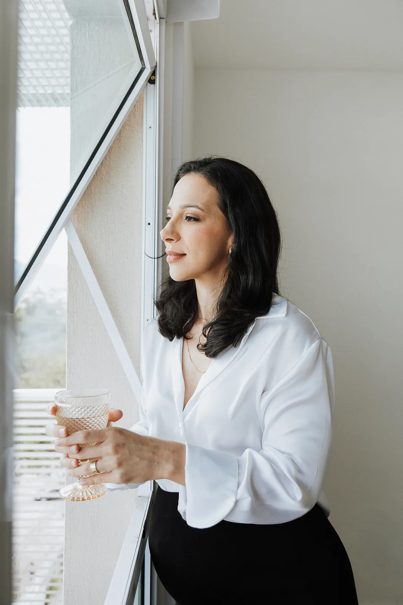
1. Luz de janela, de ladoLuz natural, de frente ou de lado, perto da janela. A sombra fica macia e a pele, verdadeira. Nunca luz de teto amarela nem flash direto.2. Fundo claro e ar em voltaParede clara e lisa, poucos objetos (fruta, planta, notebook). O espaço livre acima da cabeça é onde o título entra depois.3. Roupa da paletaCamisa branca, blusa caramelo, camisa jeans, tons de verde. Lisa, sem logotipo de marca, sem estampa miúda que vibra na tela.
O figurino em cores da marca
Algodãocamisa branca, off-white, linho cru
Carameloblusa caramelo, camelo, terra clara
Sálvia Anablusa verde-sálvia ou verde-oliva
Mar Fundoblazer escuro, jeans escuro, preto liso
Pedrabege, areia, cinza quente
Evite na roupa: vermelho e rosa-bebê dominantes, neon, verde-limão, logotipo de marca visível, listra fina e xadrez miúdo (tremem no vídeo). Para o modo 40+, prefira as cores profundas: blazer, Mar Fundo e caramelo.
Os pares abaixo foram montados com fotos reais do acervo. À esquerda, o jeito certo; à direita, o erro que aparece com mais frequência quando a peça é feita com pressa.
Cada fase pede outro prato.
CRN-4 em confirmação
FaçaFoto na moldura em arco e texto sobre cor sólida. O título fica onde a foto tem ar, e o único ponto caramelo é o do símbolo.
Cada fase pede outro prato.
Não façaTexto direto sobre foto agitada. Folha, água e reflexo passam por trás das letras e a leitura some. Sobre foto, só com faixa sólida de Sálvia Ana, Mar Fundo ou Algodão.
FaçaCor fiel à pele: temperatura levemente quente, contraste suave e pretos sem esmagar. A Ana parece ela mesma num dia bom.
Não façaFiltro de beleza ou de cor que muda pele, rosto ou corpo (aqui, simulação de saturação e brilho exagerados). É proibido em foto e em vídeo.
FaçaRecorte com a cabeça inteira e um respiro acima dela. No 4:5, os olhos ficam perto do terço de cima.
Não façaRecorte apertado que corta a testa ou o queixo. Parece descuido e tira o rosto da área segura dos formatos verticais.
O acervo tem 16 fotos tratadas, com descrição e uso sugerido no catálogo (assets/fotos/catalogo.json). Elas foram feitas em momentos diferentes da vida da Ana, e isso decide para quem cada uma fala.
10 fotos feitas na gravidez (01 a 09 e 13)
2 do evento, de blazer (11 e 12)
4 de outros momentos (10, 14, 15 e 16)
Gestação
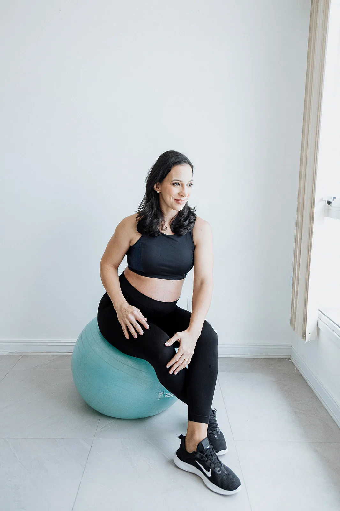
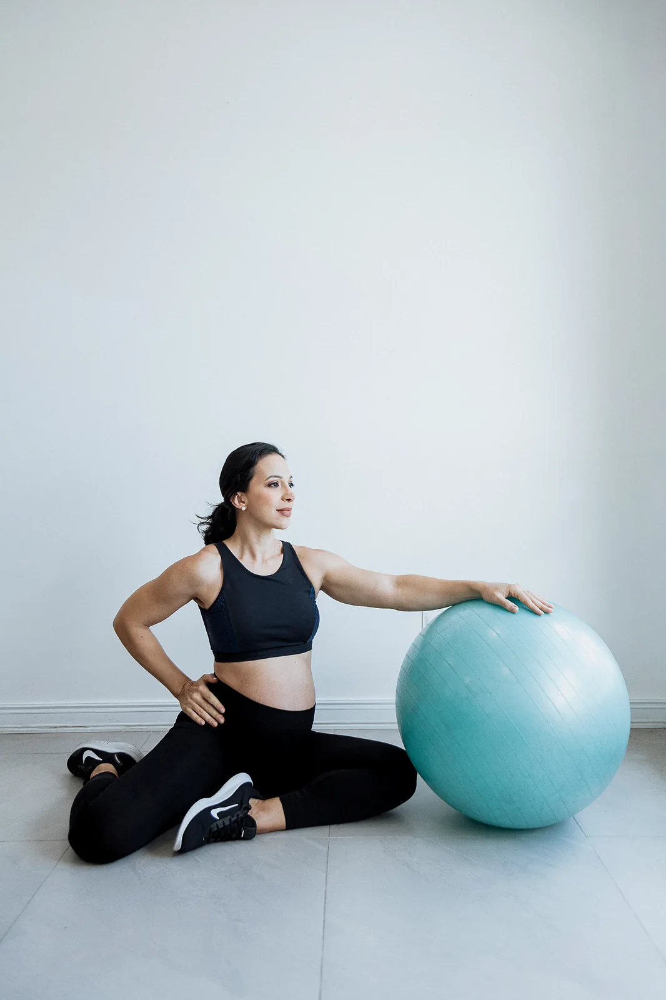
Sobra foto. Use 01, 02, 08, 09 e 13, e as do sofá e da janela (03 a 07). Escolha as que mostram a Ana ativa e sorrindo, nunca a mão na barriga.
Pós-parto e amamentação
Falta foto. Nenhuma foi feita nesta fase. Use retratos de busto em que a gestação não aparece: 04, 10, 14 e, em story de rotina, a selfie 15.
40+ e menopausa
Falta muito. Só 11 e 12 nasceram para este público; 14 e 16 completam. No modo 40+, só fotos marcadas como 40+ ou todas as fases no catálogo, nunca gestação.
Pendência P3
O uso comercial das fotos dos ensaios depende da autorização da Ana. Até ela confirmar, as fotos servem para desenhar e aprovar peças, não para publicar anúncio.
Um ensaio de meio dia fecha a lacuna do acervo. A lista abaixo é para entregar ao fotógrafo: são 12 cenas, seis para o pós-parto e seis para o 40+, com o enquadramento e a peça em que cada foto vai entrar. A Ana aparece sempre sozinha.
Pós-parto e amamentação · modo morno
Café da manhã na bancada. A Ana monta um café real, com fruta e pão, olhando para a câmera. Plano médio, vertical. Capa de carrossel.
Lancheira pronta. Só as mãos fechando um pote na cozinha, luz de janela. Detalhe, 4:5. Dica rápida.
Consulta online. Sentada com o notebook aberto, falando como numa chamada. Plano médio, horizontal com lado livre. Página de atendimento.
Respiro na janela. Xícara na mão, olhar para fora. Meio corpo, vertical com ar no topo. Peça reflexiva.
Prato do almoço visto de cima. Comida de verdade, colorida, na mesa clara. De cima, 1:1 e 4:5. Receitas.
Retrato de busto. Blusa caramelo, fundo Algodão liso, sorriso leve. Busto, 1:1. Foto de perfil e lower third.
40+ e menopausa · modo profundo
Retrato de autoridade. Em pé, blazer, parede escura e lisa ou fundo Mar Fundo. Três quartos, vertical. Anúncio e página do 40+.
No mercado, lendo o rótulo. O produto virado para a câmera, sem marca em destaque. Plano médio, vertical. Levo ou Deixo.
Escritório com o mapa-múndi. De óculos, anotando o plano. Plano médio, 4:5. Bastidores e autoridade.
Treino de força. No box, com o kettlebell, sem pose de corpo. Corpo inteiro, vertical. Conteúdo sobre músculo e força.
Caminhada pela manhã, no Rio. Luz baixa, roupa clara. Aberto, 16:9 com lado livre. Site e YouTube.
Falando para a câmera. Gesto de mão no meio de uma frase, como num vídeo. Close, 9:16. Capa de Reels.
Para o fotógrafo
Entrega
Por quê
Luz
Natural, manhã, janela de frente ou de lado
É a luz do acervo atual; as fotos novas precisam conversar com as antigas.
Formatos
Cada cena em vertical (com ar no topo) e horizontal (com um lado livre)
O mesmo clique serve ao post 4:5, ao story 9:16, ao site e à miniatura do YouTube 16:9.
Roupa
Três trocas da paleta: camisa branca, blusa caramelo, blazer escuro
Dá variedade sem fugir das cores da marca.
Arquivo
JPG em cor sRGB, lado maior de 3000 px ou mais, sem filtro
O tratamento é o mesmo do acervo: só ajuste leve de contraste e nitidez.
Nunca
Mão na barriga, filhos, outras pessoas, antes e depois
São as regras da marca e do conselho da profissão.
Todo vídeo vertical (Reels, TikTok, Shorts, stories e status do WhatsApp) usa a mesma zona segura, que respeita a rede mais exigente de cada lado. Rosto, título, legenda e assinatura moram dentro do retângulo tracejado. No 1080 × 1920, ele vai de x = 60 a 940 e de y = 250 a 1540.
1234
Topo, 250 px livres. Nome do perfil, barra de progresso e botão de fechar.
Base, 380 px livres. Legenda do post, nome, música e caixa de resposta. Em anúncio, 480 px (linha pontilhada).
Direita, 140 px livres. Curtir, comentar, compartilhar e áudio. À esquerda, 60 px de respiro.
Área útil. Os olhos da Ana ficam perto da linha fina do terço de cima (y ≈ 640).
Zona segura unificadaOs modelos do kit trazem uma camada "ZONA SEGURA · ocultar antes de exportar".1080 × 1920 px
CloseRosto e mãos. Para a frase de impacto e a capa.
Médio, o padrãoDo peito para cima, olhos no terço de cima. É o plano da maior parte dos vídeos.AbertoCorpo e bancada. Para mostrar prato, rótulo e preparo.
Na gravação: celular na vertical, câmera traseira na altura dos olhos, a cerca de um braço e meio da Ana, lente limpa e janela de frente ou de lado. Fundo bagunçado vira desfoque, não filtro. Cenários que são dela: escritório com o mapa-múndi, cozinha, mercado e o box de treino. O som vem de um microfone de lapela ou do celular perto da boca, num cômodo sem eco.
O vídeo bom da Ana parece conversa de amiga gravada com capricho: começa no assunto, não enrola, mostra a vida real e termina com um convite claro. A primeira frase nomeia a mulher e a dor. Nada de "oi, gente" antes.
110%110%
0 a 2 s · GanchoA frase que nomeia a mulher e a dor. Faixa com o nome do quadro nos 3 primeiros segundos.
2 a 8 s · ContextoPor que isso acontece, em uma ou duas frases. O lower third aparece aqui.
8 a 24 s · ExplicaçãoImagem de apoio real (o azeite, o rótulo, o prato) cobrindo a fala quando ajuda a entender.
24 a 29 s · ConviteA Ana fala olhando para a câmera: "me conta nos comentários", "o link está na bio".
Último segundo · AssinaturaNo máximo 1 segundo. Sem tela final longa.
Reels de 30 segundosTraço fino: corte seco a cada 2 a 4 segundos. 110%: aproximação de ênfase, no máximo uma a cada 10 segundos. De 7 a 30 segundos para alcançar gente nova; até 1min30 para quem já segue.1080 × 1920 px
Fase
Gancho no conteúdo orgânico
Gancho em anúncio impulsionado
Gestação
"Você, gestante, que vomita com o ferro…"
"Para gestantes que tomam ferro e passam mal…"
Pós-parto
"Mãe que amamenta…"
"Para mães que estão amamentando…"
40+
"Você que passou dos 40…"
"Para mulheres na menopausa que querem entender a alimentação desta fase."
No anúncio, a frase nunca afirma a condição de quem assiste: a política das plataformas de anúncio proíbe "você está…" em tema de saúde.
Muita gente assiste sem som, então todo vídeo com fala leva a legenda gravada na imagem. Ela é a fala da Ana escrita, não um resumo, e precisa ser lida de relance por uma mulher de 45 anos sem os óculos ou por uma mãe com o filho no colo.
Posso parar o ferro? Não. O que muda é a dose.
FaçaCaixa Mar Fundo a 85%, texto Algodão, uma palavra de sentido em Sálvia Ana. Base do bloco em y = 1500.
Posso parar o ferro? Não. O que muda é a dose.
FaçaAlternativa: texto Algodão com contorno Mar Fundo de 4 px, para quando a caixa cobre demais a imagem.
POSSO PARAR O FERRO? NÃO!! O QUE MUDA É A DOSE
Não façaLegenda pequena, toda em caixa alta, sem caixa e na base, embaixo dos botões e da descrição do post.
Regra
Especificação
Fonte
Atkinson Hyperlegible Next SemiBold (números saem em Literata, que tem o zero aberto)
Tamanho
56 a 64 px em vídeo de 1080 de largura (padrão: 60 px)
Linhas
No máximo 2 por vez, até 32 caracteres por linha. Se a linha passar de x = 940, quebre antes.
Posição
Centralizada na área útil, base do bloco no máximo em y = 1500, lateral direita no máximo em x = 940
Cor
Texto Algodão sobre caixa Mar Fundo com 85% de opacidade, ou texto Algodão com contorno Mar Fundo de 4 px. Contraste mínimo de 4,5 para 1
Destaque
Uma palavra por frase em Sálvia Ana, a que carrega o sentido ("dose", "fase", "não pare")
Ritmo
Palavra por palavra ou frase curta acompanhando a fala, sem atraso maior que um quadro
Ortografia
Revisar os termos técnicos à mão (sulfato ferroso, climatério, amamentação). A legenda automática do editor erra
Caixa
Frases em caixa normal. Caixa alta só para uma palavra de ênfase
Proibido
Emoji dentro da legenda, números de peso ou medida, qualquer palavra que prometa resultado
AaLegenda: Algodão sobre Mar Fundo10,8 para 1 · AAA
AaDestaque: Sálvia Ana sobre Mar Fundo4,8 para 1 · AA
AaFaixa de título: Mar Fundo sobre Sálvia Ana4,8 para 1 · AA
Configuração para colar no editor (CapCut, Premiere, Final Cut ou Edits):
Legenda queimada · Ana Paula Costa
Fonte: Atkinson Hyperlegible Next SemiBold, 60 px (quadro 1080 × 1920)
Texto: #F2F0EB (Algodão) · destaque de uma palavra: #63AF9C (Sálvia Ana)
Caixa: #103A40 (Mar Fundo), opacidade 85%, cantos de 12 px
Alternativa sem caixa: contorno #103A40, 4 px
Posição: centralizada entre x 60 e 940, base do bloco em y 1500
Máximo: 2 linhas, 32 caracteres por linha, sem emoji
A marca aparece no vídeo em três momentos curtos e sempre dentro da área útil. O resto do tempo é da Ana.
Levo ou deixo
Você que passou dos 40…
0 a 3 s · aberturaFaixa Sálvia Ana com o nome do quadro entre y = 250 e 420. A Rota se desenha em 1,2 s e o ponto pousa por último.
CRN-4 em confirmação
2 a 6 s · lower thirdNa primeira vez que a Ana aparece no vídeo. Cartão Algodão em x = 60, acima da legenda, por 3 a 4 segundos.
CRN-4 em confirmação
Último segundo · assinaturaMar Fundo, símbolo em Algodão com o ponto caramelo, CRN. No máximo 1 segundo, depois que a Ana já fez o convite.
Gestação, pós-parto e 40+
Lower third no vídeo horizontal (YouTube, aula, live)Mesmo cartão, em x = 96 e com a base em y = 960. A assinatura compacta nunca fica abaixo de 230 px de largura.1920 × 1080 px
Peça
Medida no quadro
Regra
Faixa de título
1080 × 170 px, de y = 250 a 420
Sálvia Ana, nome do quadro em Atkinson SemiBold de 40 px, caixa alta, entreletra de 12%, Mar Fundo. Só nos 3 primeiros segundos.
Rota de abertura
300 px de largura
Arquivo rota-divisor-curto.svg, traço Mar Fundo, ponto Algodão sobre a faixa Sálvia Ana. Desenha em 1,2 s, curva maré.
Lower third vertical
x = 60, base em y = 1260
Cartão Algodão, cantos de 24 px, assinatura compacta (que já traz "Nutricionista") com 460 px e uma linha em Atkinson SemiBold de 30 px, Sálvia Funda: o CRN ou as fases. Entra em 240 ms, fica de 3 a 4 s.
Lower third horizontal
x = 96, base em y = 960
Mesmo cartão, assinatura com 520 px.
Encerramento
Tela cheia, até 1 s
Mar Fundo, símbolo sobre escuro com 360 px, CRN em Atkinson SemiBold de 32 px, Algodão.
Rosto, título, legenda e assinatura dentro da área útil
Camada da zona segura oculta
Legenda queimada revisada à mão, com os termos técnicos certos
Antes de publicar
Música abaixo da voz, da biblioteca liberada para contas comerciais
Sem filtro de beleza; cor natural
Filhos nunca aparecem em peça da marca (rosto, corpo ou nome); podem ser citados no texto, sem identificação
Imagem de IA só de objeto ou alimento, sinalizada na legenda
17Movimento
A pena corre, desce, sobe e faz o ponto.
No site e no vídeo, o movimento da marca é um só: o traço se desenha da esquerda para a direita e o ponto pousa por último. Durações, curva e código prontos para usar.
Em um minuto
O traço se desenha em 1,2 segundo com a curva maré e o ponto pousa em 240 ms.
Quatro velocidades: 160, 240, 480 e 1200 ms. Nada além disso.
No vídeo, a Rota nunca atrasa o gancho, e a edição é de corte seco. O símbolo nunca gira, quica ou brilha.
O movimento da Ana é o de quem escreve: a pena corre, desce, sobe e faz o ponto. Tudo usa a mesma curva, chamada maré: sai devagar, ganha velocidade e chega macio. As peças abaixo estão se mexendo de verdade.
1. O traço se desenhaDa esquerda para a direita; o ponto pousa depois.1200 ms + 240 ms
Ferro na gestação
2. O bloco entraSobe 16 px e aparece, um bloco por vez.480 ms · 80 ms entre blocos
Como a Rota é uma forma cheia (o desenho da pena) e não uma linha, ela se revela com um recorte que corre da esquerda para a direita, e não com a técnica de linha tracejada. Com reduzir movimento ligado no aparelho, tudo aparece pronto, sem animação.
FaçaUma direção (da esquerda para a direita), uma curva, um ponto que pousa no fim.
Não façaLogotipo que gira, quica, pulsa ou brilha. O símbolo nunca se mexe; só a Rota e o ponto.Não façaOnda em movimento contínuo, cortina, giro ou brilho. A edição da Ana é de corte seco.
Parte VI
Voz e conformidade
Do jeito que a Ana fala, dentro do que a profissão permite.
Acolhedora e firme. Frases curtas, humor de casa cheia e nenhum alimento vilão.
Em um minuto
Toda peça fala com uma mulher só, nomeada na primeira frase: “Você, gestante”, “Você, mulher de 45+”.
Contexto antes de proibição: nada é vilão, tudo é quantidade, frequência e fase. Nunca prometer quilos, prazo ou cura.
Frase curta, uma ideia por peça e pergunta no fim. Assina “Ana 💚” na legenda.
A cada quatro peças, três leves e uma de autoridade. Ganchos, séries e palavras prontas para copiar estão logo abaixo.
A Ana já pilotou navio. Aos 30, mudou de rota e foi estudar Nutrição. Hoje é nutricionista, mãe de dois e crossfiteira. Ela fala com a paciente como fala com uma amiga que chegou cansada em casa: sem sermão, sem regra impossível e com a verdade dita de um jeito que dá para ouvir.
Este capítulo existe para a Ana se reconhecer no papel e para quem escreve por ela (legenda, roteiro, página, mensagem) acertar o tom de primeira. No meio dele tem uma despensa: palavras, ganchos e títulos prontos para copiar.
Seis traços que convivem. Se um deles some, a voz desanda.
A Ana éAcolhedora e firme. Abraça e cobra na mesma frase: “eu entendo, e a gente vai fazer diferente”.
Não éFofa demais, permissiva, “tudo bem, faz como der”.
A Ana éPrática. Diz o óbvio que precisa ser dito, porque muita gente não sabe.
Não éAcadêmica, cheia de termo técnico, dona da verdade.
A Ana éBem-humorada. Humor de casa: filho atrapalhando a receita, a coquinha do marido, a nutri tentando não reparar.
Não éPalhaça, de meme forçado ou de piada às custas do corpo de alguém.
A Ana éConstante. Disciplina de atleta e de quem viveu a bordo. Pequenas coisas, todo dia.
Não éRadical, “projeto verão”, “segunda eu começo”.
A Ana éReal. Mãe, perrengue, noite mal dormida, bolo e café de vez em quando.
Não éPerfeita, estética de luxo que ninguém alcança.
A Ana éResponsável. Ciência, limite, registro profissional visível, encaminha quando precisa.
Não éClínica fria. Nem vendedora de milagre.
A Ana é a Cuidadora com espírito de Exploradora. O cuidado vem da mãe e da nutricionista. A coragem de mudar de rota vem da navegação. Na prática: primeiro ela escuta como anda a semana daquela mulher. Depois mostra o próximo passo que cabe nela.
Quatro princípios da voz
1
Contexto antes de proibição. Nada é vilão. Tudo é quantidade, frequência e fase.
2
Fase antes de regra. O que serve na gestação não é o que serve aos 50. Sempre dizer de qual fase se está falando.
3
Processo antes de promessa. A Ana fala do caminho (plano, rotina, prato, acompanhamento), nunca de quilos, prazos ou resultado garantido.
4
Uma pessoa de cada vez. Toda peça fala com uma mulher específica, em segunda pessoa: “você, gestante”, “você, mulher de 45+”.
A voz não muda. Muda a distância, o tamanho e com quem ela está falando.
TikTok
Fala com Gestante
Tom
Direto e útil. Uma dúvida por vídeo, resposta rápida.
Tamanho e ritmo
7 a 15 segundos para alcançar gente nova; até 60 s quando explica. Gancho nos 2 primeiros segundos.
Fecho padrão
“Comenta FERRO que eu te mando o guia.”
Você, gestante, vomita depois do ferro? Não para por conta própria. Escuta isso.
Instagram (Reels e feed)
Fala com Mulher 45+ e mãe no pós-parto
Tom
Mais próximo e mais longo. Mostra a Ana, a casa, a rotina.
Tamanho e ritmo
Reels de até 1min30 para quem já segue; partes 1 e 2 se ficar longo. Carrossel de até 10 cartões.
Fecho padrão
Pergunta + “me chama no direct” ou convite ao grupo.
Você, mulher de 45+, que já tentou de tudo: você não falhou. Tentou a estratégia da fase errada.
Stories
Fala com Quem já segue
Tom
Bastidor e conversa. A Ana real, sem produção.
Tamanho e ritmo
Sequências de 3 a 6 telas. Enquete, caixa de pergunta, bastidor. Repostar o conteúdo do feed de madrugada, quando o público está acordado.
Fecho padrão
Enquete ou caixa de pergunta.
Tem alguém acordado aí comigo? Me conta o que você jantou hoje.
WhatsApp
Fala com Quem já pediu contato
Tom
Pessoal, curto, gentil. Uma pergunta por mensagem.
Tamanho e ritmo
Até 4 linhas. Áudio de até 30 s quando a explicação ficaria longa.
Fecho padrão
Pergunta direta: “Em que semana você está?”
Oi, nome. Aqui é a Ana. Seu guia chegou aqui embaixo. Me conta: em que fase você está?
E-mail
Fala com Quem entrou na lista
Tom
Carta de amiga que é nutricionista. Uma história, uma ideia, um pedido.
Tamanho e ritmo
Até 250 palavras. Assunto curto, sem caixa alta.
Fecho padrão
Assinatura “Ana 💚” + um único link.
Assunto: “O que eu peço quando o dia dá errado”.
Site
Fala com Quem está decidindo
Tom
Claro e seguro. Explica o que é, para quem é e o próximo passo.
Tamanho e ritmo
Títulos curtos, parágrafos de até 3 linhas no celular, um botão principal por página. Registro profissional no rodapé.
Fecho padrão
Um botão com verbo: “Agendar minha avaliação”.
Cada fase pede outro prato. Eu monto o seu.
Consulta
Fala com A paciente
Tom
Escuta primeiro, depois firmeza. Nada de bronca.
Tamanho e ritmo
Pergunta aberta, resumo do que ouviu, plano que cabe.
Fecho padrão
“O que, deste plano, você acha que não cabe na sua semana?”
A gente não vai começar pelo ideal. Vai começar pelo possível.
Como responder “quanto custa a consulta?” no WhatsApp
Quanto custa a consulta?
Oi, nome! A Avaliação da Fase é online, com cerca de 1 hora por vídeo, plano no aplicativo e 30 dias de suporte por aqui. O valor eu te passo agora, aqui na nossa conversa: valor vigente, digitado na hora. Dá para pagar no Pix ou no cartão em até 10x, e eu emito nota fiscal para você pedir reembolso, conforme as regras do seu plano de saúde. Quer que eu te mande os horários desta semana?
Resposta modelo, uma pergunta no fimTroque o que está marcado antes de enviar.
Quem segue já reconhece. E bordão só vira marca quando se repete.
Sobre comida (nenhum alimento vilão)
Não existe alimento vilão.Quando usar: Abertura ou fecho de qualquer conteúdo sobre doce, pão, carboidrato.
E sobre os vilões… vamos deixar para o cinema.Quando usar: Fecho com humor.
Não existe alimento vilão. Vilão é o Coringa, Darth Vader, Hannibal Lecter…Quando usar: Gancho de vídeo leve.
Sim, dá para comer chocolate.Quando usar: Levo ou Deixo, Isso ou Aquilo.
Nutrição não deveria ser uma coleção de proibições.Quando usar: Manifesto, página Sobre, post de citação.
Arrume o seu prato!Quando usar: Fecho de dica prática.
Sobre constância
Qual a melhor dieta? Disciplina!Quando usar: Gancho de autoridade.
Você não precisa ser RADICAL, basta ser CONSISTENTE!Quando usar: Segunda-feira, começo de mês, começo de ciclo do grupo.
Fazer as pequenas coisas. Da forma correta. Repetidas vezes.Quando usar: Post de citação, fecho de aula.
Fuja do ‘ia’.Quando usar: Eu ia começar, ia cuidar… Convite para começar pequeno.
Sobre corpo e fase
O corpo não falhou. Ele fez algo extraordinário!Quando usar: Pós-parto.
Isso não é uma perda. É uma transição.Quando usar: Climatério e menopausa, pós-parto.
Você não está atrasada, você não está mais fraca. Você apenas está em um capítulo completamente NOVO.Quando usar: Mulher 45+.
Voltar a treinar não é sobre recuperar quem eu era. É descobrir a força de quem eu me tornei.Quando usar: Pós-parto, treino.
Seu corpo pode estar pedindo equilíbrio, não mais esforço.Quando usar: Cansaço, “já tentei de tudo”.
Sobre maternidade e rotina
A maternidade me lembra todos os dias que o amor também se serve à mesa.Quando usar: Refeição em família, introdução alimentar (falando com a mãe). Pode encurtar para “o amor também se serve à mesa”.
Produtividade não é fazer tudo sozinha. É fazer o que é possível em cada fase da vida.Quando usar: Rotina corrida, comunidade.
Sobre ela
A nutri.Quando usar: Como ela se chama no tom leve: “a nutri tentando não reparar”.
Nutrida para começar o dia! 💚Quando usar: Bom dia de story e abertura do grupo.
Nutrição além do prato.Quando usar: Página Sobre e destaque “Comece aqui”.
O mesmo cartão serve de modelo de post de citação (4:5, 1080 × 1350 px): frase em Literata, símbolo embaixo e um único ponto. Sobre Sálvia Ana, o ponto vira Algodão.
Cada fase pede outro prato.
Ideia central. Topo do site, bio, capa de destaque “Comece aqui”.
Nenhuma mulher é dose única.
Bandeira contra o cuidado padronizado. Ferro, suplementação, avaliação.
Seu corpo mudou de fase. Seu prato também precisa.
Pós-parto.
Você não falhou. Tentou a estratégia da fase errada.
Mulher 45+.
A gente não começa pelo ideal. Começa pelo possível.
Atendimentos e Semana Bem Nutrida.
Nenhuma mulher precisa passar por essa fase calada.
Comunidade Bem Nutrida. Inspirada numa fala pública de outra mulher sobre a menopausa: usar como frase da marca, nunca entre aspas atribuída a paciente.
Para escrever legenda, roteiro e mensagem sem travar. Organizado por fase e por intenção.
Use este banco como uma despensa: pega o que precisa para a receita do dia. Na linha “dela”, o que está entre aspas é frase literal, coletada em comentários e fóruns públicos de mulheres na mesma fase ou dita pela própria Ana sobre as pacientes; o que está sem aspas é tema recorrente, para escrever com as próprias palavras. Quando a Ana usa as mesmas palavras, a mulher se reconhece. Nunca transformar um tema sem aspas em “frase de paciente”.
A linha “dela” serve para entender e espelhar a dor, não para copiar tudo. “Gordice”, por exemplo, é palavra da gestante e está na lista do que a Ana evita (veja Palavras a evitar).
palavra-chave da fasepalavra da Anafrase literal delatema, sem aspas
Gestação19 palavras
Palavras da Ana
gestaçãotrimestrepré-natalexamedosea sua doseferrosuplementoenjooo que para no estômagocomer em pazlanche de bolsafome de duas em duas horasaçúcar no radarglicemiadesejobebêbarrigasemana número
Palavras dela
“a mesma dose e os mesmos medicamentos para todas nós”“só diz que é normal”“não consigo comer”“estou passando muito mal”“comer em paz”“fome a cada 2 horas”“amo comer”“gordice”a dúvida se pode parar o suplemento por conta própria
Frase-mãe
Nenhuma gestante é dose única.
Pós-parto e amamentação15 palavras
Palavras da Ana
puerpériopós-partoamamentaçãoleiteenergiasono picadocomer com uma mãobebê no colorede de apoiovolta aos treinosqueda de cabelocorpo que recomeçaintrodução alimentar (para a mãe)marmita da semanacapítulo novo
Palavras dela
falta de tempo para comercomer o que sobra do prato do filhovontade de voltar a se cuidarcansaçoqueda de cabeloamamentação e pesofrases reais do direct da Ana, com autorização e sem identificar ninguém
Frase-mãe
Seu corpo mudou de fase. Seu prato também precisa.
40+, climatério e menopausa19 palavras
Palavras da Ana
40+45+climatériomenopausafase novacapítulo novocalorãosonopiqueforçamúsculoproteínaintestinometabolismoequilíbrioser ouvidaconversarconstânciavoltar a se sentir você
Palavras dela
“não tenho mais pique”“nada do que eu faço”“cada um acha de um jeito”“tenho vergonha”“não temos coragem (de perguntar ao médico)”“então, pra quê?”“não sei qual profissional procurar”já tentou de tudoouviu que é da idadesente que não é ouvida
Frase-mãe
Você não falhou. Tentou a estratégia da fase errada.
Rotina de todas15 palavras
Palavras da Ana
organizar as refeiçõesplano da semanaprato possívelreceita de 15 minutoslista de comprasmercadorótulodeliverydia que deu tudo erradomarmitaexceçãoconstânciaplano que cabevida realrotina corrida
Palavras dela
“ninguém tem tempo ou tem preguiça ou não gosta mesmo”“não tenho tempo pra pensar no que comer”“segunda-feira eu começo”dúvida sobre o jantardelivery no dia que deu errado
Frase-mãe
A gente não começa pelo ideal. Começa pelo possível.
Primeiro decida o que a peça quer fazer. Depois pegue as palavras e a frase-modelo daquela intenção.
Acolher
eu entendojá passei por issorespiravocê não está sozinhatá tudo bem começar pequenofaz sentido você se sentir assim
Frase-modelo
Respira. Eu já estive aí, de barriga e de olheira.
Ensinar
olha sóna práticao que acontece épor issotroca simpleso segredo está no horárioa sua fase
Frase-modelo
Na prática, o que muda é o horário. Olha só.
Desmistificar
mito ou verdadenão é bem assimcontexto, quantidade e frequêncianão existe alimento vilãodepende da fase
Frase-modelo
Mito. Não é bem assim: depende da quantidade, da frequência e da sua fase.
Firmar (disciplina)
constânciatodo dia um poucosem radicalismodisciplinafuja do ‘ia’pequenas coisas
Frase-modelo
Não precisa ser radical. Precisa ser todo dia um pouco.
Brincar
a nutri tentando não reparareu aviseio filho atrapalhoua coquinha do maridosincera, porém fofa
Frase-modelo
A nutri tentando não reparar no carrinho do mercado. Não consegui.
Convidar (conteúdo)
comenta a palavra-chaveme conta nos comentáriossalva para não esquecermanda para uma amiga na mesma fase
Frase-modelo
Manda para aquela amiga que está na mesma fase que você.
Convidar (grupo)
entra no grupovem conversarrede de apoiosó mulherescom a nutri dentro
Frase-modelo
Vem para o grupo Comunidade Bem Nutrida. É gratuito, é só de mulheres e a nutri está lá dentro.
Vender (Semana Bem Nutrida)
organizar a semanacardápio-exemploreceitas de até 15 minutoslista prontamenos tempo pensando no que fazergarantia de 7 dias
Frase-modelo
Quatro semanas de cardápio-exemplo, receitas de até 15 minutos e lista de compras pronta. Por R$ 47, com 7 dias para pedir o dinheiro de volta se não gostar.
Convidar (comunidade paga, quando abrir)
lista de esperafundadorasrede de apoio com ciência dentroencontro ao vivocancela quando quiser
Frase-modelo
A comunidade paga ainda não abriu. Entra na lista de espera e você fica sabendo antes de todo mundo.
Convidar para a consulta
avaliação da faseplano que cabeolhar para vocêcom o seu examea sua doseacompanhamento
Frase-modelo
Se você quer um plano para a sua fase, feito com o seu exame na mão, é na Avaliação da Fase.
Dezenove trocas. A coluna do meio é a que vai para a legenda.
Evite
Use no lugar
Por quê
dieta · dieta da moda · regime
plano · prato da fase · plano que cabe
“Dieta” soa como proibição temporária. A Ana fala de rotina.
proibido · cortar · nunca mais
de vez em quando · com contexto · troca simples
Contra o discurso de proibição.
emagrecer X kg · perder X quilos · secar · barriga negativa
cuidar do corpo nesta fase · organizar o prato · cuidar da energia · se sentir melhor na rotina
Promessa de quilos é proibida pelo conselho e derruba anúncio.
desinchar em 7 dias · detox · desinflama em X dias
comer com mais leveza · organizar a semana · cuidar do intestino
Promessa de prazo e resultado.
cura · trata · resolve (doença)
ajuda · apoia · faz parte do cuidado · converse com seu médico
Promessa de efeito sobre a saúde é vedada em anúncio e na ética da profissão.
garantido · resultado garantido
garantia de 7 dias com devolução do valor (Semana Bem Nutrida) · Garantia do Plano que Cabe (se em 7 dias o plano não couber na rotina, eu reescrevo sem custo)
Só se garante o serviço e o reembolso, nunca o resultado.
único · exclusivo · primeiro · o melhor · revolucionário · inédito
do meu jeito · pensado para a sua fase · como eu trabalho · Nutrição por Fases (nome do jeito de trabalhar, sem adjetivo)
Superlativo e exclusividade não se comprovam, soam como propaganda enganosa e outras nutricionistas também atendem por fase.
antes e depois · olha como ela ficou · perdeu tanto
o que mudou na rotina dela · como ela se sente com o plano
Antes e depois é proibido, inclusive com a própria Ana.
é normal (sozinho)
é comum, e tem o que fazer
“Só diz que é normal” aparece muito nos relatos de gestantes sobre o pré-natal e soa como descaso.
é da idade · coroa · velha · terceira idade
40+ · 45+ · climatério · menopausa · esta fase
Nomear a fase com respeito.
voltar ao corpo de antes · recuperar o corpo
a força de quem você se tornou · se reconhecer de novo
Pós-parto é transição, não perda.
gordice · porcaria · lixo · dia do lixo · jacar · pecar · culpa
comida afetiva · exceção · refeição livre · o docinho do fim de semana
Comida não é pecado. A série “Exceções x Resultados” já usa “exceção”.
fit · fitness · low carb (como regra) · especialista (sem título de especialista registrado)
comida de verdade · prato possível · receita prática · nutricionista que atende gestação, pós-parto e saúde da mulher
“Fit” está fora da voz dela e do público. “Especialista” só com título reconhecido; até lá, dizer o que ela atende.
mãezinha · mamãe (em texto de venda)
mãe · você, mãe
Não infantilizar. “Mamãe” fica só em tom de brincadeira entre mães.
obesa · gorda · fora do peso
peso que mudou com os anos · o corpo desta fase
Nunca rotular o corpo de ninguém.
promoção · desconto · Black Friday (da consulta) · sorteio de consulta
valores e formas de pagamento informados no agendamento
Vedado pelo conselho. Produto digital e comunidade podem ter preço visível.
nome de marca de suplemento ou de remédio · cupom · “recebidos”
o tipo do suplemento · caneta emagrecedora (genérico, só em conteúdo orgânico)
Associar a imagem a marca de alimento ou suplemento é vedado. Remédio de emagrecer não entra em anúncio pago.
paciente gerada por inteligência artificial · “foto ilustrativa” de pessoa
foto real da Ana · ilustração · alimento ou objeto
Inteligência artificial só para objeto e alimento, sinalizada; nunca pessoa, corpo ou resultado.
depoimento reescrito · “uma paciente me disse” sem ser literal · elogio sobre quilos ou exame
frase literal, autorizada por escrito, sobre a experiência (acolhimento, clareza, rotina)
Depoimento editado ou de resultado engana e é vedado. Nunca inventar, juntar ou “melhorar” a fala de alguém.
Enquanto não houver depoimento real, autorizado por escrito, o espaço fica vazio: depoimento autorizado. Nunca preencher com texto inventado.
Nomear a leitora logo na primeira frase faz a mulher certa parar e faz a plataforma entregar para quem precisa.
Toda peça escolhe uma mulher antes de ser escrita. Uma isca por canal: o TikTok fala com a gestante; o Instagram fala com a mulher 45+ e com a mãe no pós-parto. A mulher é nomeada em três lugares: na primeira frase falada, no texto da tela e na primeira linha da legenda.
A fórmula
1Você, + quem ela é+2a cena ou a dúvida dela+3a virada
Você, mulher de 45+, que já tentou de tudo: você não falhou. Tentou a estratégia da fase errada.
Gestante
“Você, gestante,” · “Você, que está grávida,” · “Gestante no primeiro trimestre,” · “Você, que toma ferro,”
Mãe no pós-parto
“Você, mãe de bebê pequeno,” · “Você, que está amamentando,” · “Você, no pós-parto,”
Mulher 40+ e 45+
“Você, mulher de 45+,” · “Se você passou dos 40,” · “Você, que está no climatério,” · “Você, na menopausa,”
Todas (rotina)
“Você, que não tem tempo de cozinhar,” · “Você, que vive recomeçando na segunda,”
Atenção ao virar anúncio
No conteúdo orgânico a fórmula “Você, gestante” é a regra. Em anúncio pago, a plataforma não aceita frase que afirme ou sugira a condição da pessoa. Troque “você” por “para quem”:
Orgânico (post, vídeo)
Anúncio pago
“Você, mulher na menopausa, que não consegue dormir…”
“Para mulheres na menopausa que querem entender a alimentação desta fase.”
“Você, gestante, vomita depois do ferro?”
“Aula gratuita para gestantes que tomam ferro e querem entender o enjoo.”
“Você, que já tentou de tudo…”
“Para mulheres de 45+ que querem um plano feito para esta fase.”
O gancho tem três camadas que acontecem ao mesmo tempo: o que a Ana fala, o que está escrito na tela e o que se vê.
Nos dois primeiros segundos a mulher decide se fica. Por isso o vídeo começa já falando, com a Ana olhando para a câmera e a leitora nomeada.
150 px370 px2Ferro te faz passar mal?1Você, gestante, vomita depois do ferro?3
TikTok, zona segura1080 × 1920 px
250 px340 px2Você não falhou.1Você, mulher de 45+, que já tentou de tudo…3
Instagram, zona segura1080 × 1920 px
1
Fala, de 0 a 2 sQuem é ela + a cena ou dúvida. Até 12 palavras, com legenda queimada. Ex.: “Você, gestante, vomita depois do ferro?”
2
Texto na tela, de 0 a 2 sAté 6 palavras, a versão curta da fala. Ex.: “Ferro te faz passar mal?”
3
Imagem, de 0 a 2 sO rosto da Ana ou o objeto do tema na mão dela (o pote, o produto do mercado, o prato). Movimento logo no primeiro quadro.
Zona hachuradaFica livre de texto. No Instagram: 250 px de cima, 340 px de baixo e cerca de 120 px da direita. No TikTok: 150 px de cima, 370 px de baixo e 140 px da direita.
A estrutura, segundo a segundo
0 a 2 sFalaQuem é ela + a cena ou dúvida. “Você, gestante, vomita depois do ferro?”
0 a 2 sTexto na telaA versão curta da fala. “Ferro te faz passar mal?”
0 a 2 sImagemRosto da Ana ou objeto do tema na mão. Movimento já no primeiro quadro.
2 a 5 sViradaA frase que contraria o que ela pensa. “Muitas vezes, o problema não é o ferro. É o jeito de tomar.”
5 s em dianteEntregaUma dica, um erro, uma comparação. Uma ideia só.
FimFechoPergunta ou palavra-chave. “Comenta FERRO que eu te mando o guia.”
Seis tipos de gancho que funcionam para a Ana
Chamada + cenaVocê, gestante, que não consegue comer nada de manhã…
Contra o senso comumComer por dois é mito.
Objeto na mão + perguntaLevo ou deixo?Mostrando os dois produtos.
BordãoQual a melhor dieta? Disciplina!
Pergunta que ela ouve muito‘Posso parar o ferro?’ Não. Mas dá para fazer diferente.
Bastidor com humorA nutri tentando fazer bolo com um filho no colo.
Regras do vídeo curto
Nada de “oi, gente”, vinheta, logo ou apresentação antes do gancho.
Texto da tela dentro da zona segura: fora dos 250 px de cima, dos 340 px de baixo e dos cerca de 120 px da direita no Instagram; no TikTok, fora dos 150 px de cima, dos 370 px de baixo e dos 140 px da direita.
Legenda queimada sempre: muita gente assiste sem som.
Corte seco a cada 3 a 5 segundos no vídeo curto.
Duração: 7 a 15 s para alcançar gente nova; até 1min30 no Instagram para quem já segue.
Série com nome fixo vira hábito para quem assiste e economiza tempo para quem grava.
Série
Levo ou Deixo
A Ana no mercado, dois produtos na mão, uma escolha explicada pelo rótulo.
FórmulaLevo ou deixo: produto A ou produto B?
Versão por público: “Levo ou deixo, versão gestante / 45+: A ou B?”
Levo ou deixo: iogurte de pote grande ou o de garrafinha?
Levo ou deixo, versão 45+: granola de pacote ou aveia simples?
Levo ou deixo, versão gestante: biscoito recheado ou bolacha de água e sal?
Regra: A análise é do rótulo e do tipo de produto. Sem parceria, sem cupom, sem “recebido”. Fecho: “E você, leva ou deixa?”
Série
Peço ou Não Peço
O delivery do dia que deu tudo errado. A melhor opção, ou a menos pior, para aquele dia.
FórmulaDeu tudo errado e vai pedir? Peço ou não peço: A ou B?
Sexta, 21h, nada pronto. Peço ou não peço: pizza ou lanche?
Peço ou não peço: poke ou marmita do aplicativo?
Deu desejo às 23h na gestação. Peço ou não peço?
Regra: Sem culpa. A mensagem é “dá para pedir e escolher melhor”, nunca “você errou”.
Série
Isso ou Aquilo
Duas versões do mesmo momento (doce ou salgado, caseiro ou pronto, tradicional ou prático).
FórmulaIsso ou aquilo: versão A ou versão B?
Isso ou aquilo: tapioca ou pão francês?
Isso ou aquilo, no café da tarde: bolo caseiro ou barrinha?
Isso ou aquilo: suco de laranja ou a laranja inteira?
Regra: As duas opções podem estar certas. A resposta da Ana quase sempre começa por “depende do que você quer nesse momento”.
Série
Casos de consultório
Uma pergunta ou situação real que a Ana ouviu, contada sem nada que identifique a paciente.
FórmulaCasos de consultório: ‘a frase que ela ouviu’. O que eu respondi.
Casos de consultório: ‘frase real de paciente’. O que eu respondi.
Casos de consultório: uma gestante me perguntou pergunta real. Vamos por partes.
Casos de consultório: o que eu olho primeiro quando uma mulher de 45+ chega dizendo que situação real.
Regra: Caso real, nunca inventado nem montado a partir de vários. Autorização por escrito da paciente quando houver qualquer detalhe pessoal. Sem nome, idade exata, cidade, peso, exame ou resultado. Fala do processo, nunca do “quanto ela perdeu”.
Série
Exceções x Resultados
A diferença entre o que acontece de vez em quando e o que acontece todo dia.
FórmulaExceção ou rotina: situação?
Ou: “O que é exceção e o que vira hábito: tema.”
Segunda a sexta x fim de semana: onde mora a sua rotina?
Um pedaço de bolo no aniversário é exceção. Bolo todo dia às 16h é rotina.
Exceção ou rotina: o vinho de sexta?
Regra: Falar de hábito e constância. Não usar número de resultado, quilo ou medida.
Série
Coisas que eu falo sendo nutricionista
Frases da Ana que surpreendem quem espera uma nutri de proibição.
FórmulaCoisas que eu falo sendo nutricionista (e ninguém acredita): frase.
Coisas que eu falo sendo nutricionista e ninguém acredita: dá para comer chocolate.
Coisas que eu falo sendo nutricionista: pão não é o problema.
Coisas que eu falo sendo nutricionista: grávida não precisa comer por dois.
Regra: Frase curta, verdadeira e explicada logo depois. Funciona como carrossel e como Reels.
Prontos para gravar. Todos falam com a gestante e de uma dúvida comum da fase, e mandam de volta ao pré-natal quando o assunto é remédio ou suplemento.
01
Você, gestante, vomita depois do sulfato ferroso? Não para por conta própria. Escuta isso.
ferro
02
Você, gestante, toma ferro e o intestino travou? Pode não ser o ferro. Pode ser o horário.
ferro
03
Gestante, ferro com café com leite não combina. Te explico em 10 segundos.
ferro
04
Você, gestante, toma ferro junto com o cálcio? Vale separar. Te mostro por quê.
ferro
05
Você, gestante, que passou mal e pensou em parar o ferro sozinha: assiste até o fim antes.
ferro
06
Você, gestante, recebeu a mesma dose que todo mundo? Leva essa pergunta para o seu pré-natal.
dose
07
Gestante, a sua dose não é a da sua amiga. Nem a da sua prima.
dose
08
Gestante, saiu do pré-natal sem entender por que aquela dose? Te explico como a dose costuma ser pensada.
dose
09
Gestante: a pergunta que você precisa levar para a sua próxima consulta do pré-natal.
pré-natal
10
Gestante, ouviu ‘é normal’? Normal é comum. Não quer dizer que não tem o que fazer.
pré-natal
11
Você, gestante, que não consegue comer nada de manhã: isso aqui para no estômago.
enjoo
12
Você, gestante, está no primeiro trimestre e o cheiro de comida te derruba? Faz assim.
enjoo
13
Três lanches para a gestante enjoada levar na bolsa.
enjoo
14
Você, gestante, que trabalha fora: marmita que aguenta o enjoo existe.
enjoo
15
Gestante com fome de duas em duas horas: isso não é falta de força de vontade.
fome
16
Comer por dois é mito. Você, gestante, precisa ouvir isso de uma nutri que já esteve grávida duas vezes.
mito
17
Coisas que eu falo sendo nutricionista e a gestante não acredita: você não precisa comer por dois.
série
18
Você, gestante, pode tomar café? Pode. Mas presta atenção na quantidade.
mito
19
Você, gestante, chocolate pode? Pode. Agora deixa eu te mostrar como.
doce
20
Você, gestante, ama comer e acabou de ouvir ‘corta o açúcar’? Vem cá.
açúcar
21
Você, gestante, recebeu o diagnóstico de diabetes gestacional hoje? Respira. O primeiro passo, junto com o seu pré-natal, é este.
açúcar
22
Levo ou deixo, versão gestante: biscoito recheado ou bolacha de água e sal?
série
23
Isso ou aquilo, gestante: suco de laranja ou a laranja inteira?
série
24
Peço ou não peço: deu desejo de lanche às 23h na gestação. Qual escolher?
série
25
Você, gestante, está com azia toda noite? Olha o seu jantar.
azia
26
Você, gestante, está no terceiro trimestre e o estômago não cabe mais nada? Refeição menor, mais vezes. Assim.
trimestre
27
Grávida e o intestino não funciona? Antes de qualquer coisa, olha a água.
intestino
28
Você, gestante, tem medo de comer peixe? Vamos separar o mito do cuidado.
mito
29
Você, gestante, toma suplemento e nem sabe para que serve cada um? Vamos por partes.
suplementação
30
Casos de consultório: ‘pergunta real de gestante’. Vou te responder do jeito que respondi para ela.
série
Fecho padrão dos vídeos de ferro: “Comenta FERRO que eu te mando o guia Ferro Sem Sofrimento.”
Aviso de segurança (legenda ou tela final, quando o tema for suplemento): “Conteúdo educativo. Não substitui o seu pré-natal. Não pare nenhum suplemento sem falar com quem te acompanha.”
Identificação antes de promessa. Nenhum gancho fala de quilos; todos falam da fase.
Isso não é uma perda. É uma transição
01
Você, mulher de 45+, que já tentou de tudo: você não falhou. Tentou a estratégia da fase errada.
fase
02
Você, mulher de 45+, não está mais fraca. Está num capítulo novo. E ele pede outro prato.
fase
03
Se você tem mais de 45 e sente que o corpo mudou sem você mudar nada: você não está imaginando.
fase
04
Você, mulher de 45+, que ouviu ‘é da idade’ no consultório: vamos conversar direito.
ser ouvida
05
Você, mulher de 45+, cada um te fala uma coisa sobre a menopausa? Vou falar a minha, sem rodeio.
ser ouvida
06
Você, mulher de 45+, tem vergonha de perguntar isso para o seu médico? Deixa a dúvida aqui, sem contar nada pessoal, que eu respondo num vídeo.
ser ouvida
07
Você, mulher de 45+: nenhuma mulher precisa passar por essa fase calada. Bora conversar?
comunidade
08
Você, mulher de 45+, que cuida de todo mundo: quem está cuidando do seu prato?
comunidade
09
Se você passou dos 45 e acorda às 3 da manhã toda noite, o seu jantar também entra nessa conversa.
sono
10
Você, mulher de 45+, sono picado e fome de doce à noite costumam andar juntos. Deixa eu explicar.
sono
11
Calorão no fim da tarde? Você, mulher no climatério, vamos olhar a sua rotina de alimentação também.
calorão
12
‘Mas meus exames estão normais.’ E o cansaço continua? Você, mulher de 45+, essa é para você.
energia
13
Você, mulher de 45+, que perdeu o pique: a resposta pode não ser mais esforço. Pode ser equilíbrio.
energia
14
Você, mulher de 45+, come pouco e vive sem energia? Às vezes a questão é o que falta no prato, não o que sobra.
proteína
15
Proteína no café da manhã: você, mulher de 45+, está pulando isso?
proteína
16
Você, mulher na menopausa, tem medo de musculação? Eu sou crossfiteira. Senta que eu te conto.
força
17
Você, mulher de 45+, toma café e pula o almoço? Nessa fase o corpo cobra.
rotina
18
Você, mulher de 45+, que janta biscoito porque não tem ânimo de cozinhar: três jantares de 15 minutos.
rotina
19
Se você tem mais de 45 e o intestino virou um problema, começa por aqui.
intestino
20
Você, mulher de 45+, cortou o açúcar e agora quer comer o pote inteiro de doce? Isso tem explicação.
açúcar
21
Você, mulher de 45+, acha que o vilão é o carboidrato? Vilão é o Coringa.
bordão
22
Coisas que eu falo sendo nutricionista e a mulher de 45+ não acredita: pão não é o problema.
série
23
Levo ou deixo, versão 45+: granola de pacote ou aveia simples?
série
24
Isso ou aquilo, mulher de 45+: tapioca ou pão francês?
série
25
Peço ou não peço, mulher de 45+: sexta à noite, cansada, sem nada pronto.
série
26
Exceções x resultados: o fim de semana de quem vive recomeçando na segunda.
série
27
Você, mulher de 45+, faz ‘segunda-feira eu começo’ toda semana? Para. Faz isto no lugar.
constância
28
Você, mulher de 45+, não precisa ser radical. Precisa ser constante. Te mostro como começa.
constância
29
Caneta emagrecedora: você, mulher de 45+, que usa com acompanhamento médico, precisa ouvir sobre o seu prato.
caneta · só orgânico, nunca anúncio
30
Casos de consultório: ‘fala real de paciente 45+’. O que eu respondi.
série
Fecho padrão: pergunta + convite ao grupo: “Me conta nos comentários. E se quiser conversar com mulheres na mesma fase, o grupo Comunidade Bem Nutrida é gratuito.” Ou a palavra-chave do funil: “Comenta palavra-chave do Instagram.”
A Ana mãe, atleta e de casa cheia faz a mulher seguir. A Ana nutricionista faz a mulher confiar e pedir ajuda. As duas aparecem, nessa proporção.
A própria conta da Ana mostra o caminho: o que mais engaja é a vida dela (gestação, família, fé, treino) e o que mais se salva é receita prática. O que faz a mulher pedir ajuda é a Ana explicando com clareza. A regra é simples: a cada quatro peças, três leves e uma de autoridade.
1Leve
2Leve
3Leve
4Autoridade
O que é leve
Bastidor da rotina (café com um filho na mesa e outro dormindo, o treino que deu errado)
Receita prática de até 15 minutos
Levo ou Deixo, Peço ou Não Peço, Isso ou Aquilo
Humor de casa (“a nutri tentando não reparar”)
Família e fé, no limite que a Ana definir (P16). Os filhos podem ser citados no texto, sem identificação; nunca aparecem em foto ou vídeo da marca
Bordão em post de citação
O que é autoridade
Explicação de um tema da fase (ferro, enjoo, sono no climatério, proteína aos 45+)
Mito ou verdade com explicação
Casos de consultório
Coisas que eu falo sendo nutricionista
Convite claro: guia, grupo, Semana Bem Nutrida ou Avaliação da Fase
Semana-modelo, quatro peças
Peça
Tipo
Exemplo
Canal
1
Leve
Bastidor: o café da manhã em casa (com os meninos só se a Ana autorizar)
Instagram + stories
2
Leve
Receita: picolé de fruta com iogurte
Instagram + TikTok
3
Leve
Levo ou Deixo no mercado
Instagram + TikTok
4
Autoridade
“Você, mulher de 45+, acorda às 3 da manhã? O jantar também entra nessa conversa.” + convite ao grupo
Instagram
Deslize para ver todas as colunas.
No TikTok, a mesma régua vale com o tema da gestação: três vídeos curtos leves ou de comparação para um vídeo de ferro ou suplementação com “comenta FERRO”.
Número do registro profissional para a assinatura (Pendência P1).
Confirmar se o cartão em até 10x é com ou sem juros (a resposta muda a frase de pagamento).
Guia Ferro Sem Sofrimento pronto em PDF antes de usar “Comenta FERRO que eu te mando o guia”.
Frases reais do pós-parto, vindas do direct, com autorização e sem identificar ninguém.
Depoimentos reais, autorizados por escrito e só sobre a experiência.
Palavra-chave do Instagram quando a automação estiver ligada (sugestão: FASE).
Casos reais para os ganchos de “Casos de consultório”, sem nada que identifique a paciente.
Confirmar se a Ana quer a fé e a família no conteúdo leve, e até onde (P16). Até lá, filhos só citados no texto, sem identificação.
Ler os bordões e marcar os que ela não quer mais usar.
19Conformidade
Segurança também é cuidado.
As regras do conselho não calam a Ana. Elas são parte do motivo de uma mulher confiar nela. Este capítulo vale para a Ana e para qualquer pessoa que escreva, grave, edite, publique ou anuncie em nome dela.
Em um minuto
Nome, “Nutricionista” e o número do registro no conselho aparecem juntos em tudo que é profissional. Veja onde vai o registro em cada peça.
Fale de processo, acompanhamento e cuidado. Nunca de resultado garantido, de corpo de ninguém ou do preço da consulta.
Zero antes e depois, zero promoção ou sorteio de consulta, zero pessoa feita por inteligência artificial.
A Ana fala com mulheres que já ouviram muita promessa: uma gestante que escreveu nas redes que o pré-natal dela era “a mesma dose e os mesmos medicamentos para todas nós” (comentário público, não é paciente da Ana), a mulher de 50 e poucos anos que já tentou de tudo e ouviu de cada profissional uma coisa diferente. Para essa mulher, promessa demais acende o alerta na hora. Confiança vem de quem explica, acompanha e respeita o tempo dela.
Comunicar com segurança, então, não quer dizer falar menos. Quer dizer falar do que a Ana entrega de verdade: processo, acompanhamento e cuidado com a fase que a mulher está vivendo. Nunca resultado garantido, nunca corpo de ninguém, nunca preço de consulta como isca. É o óbvio que precisa ser dito. E é o que separa uma nutricionista de quem só vende dieta.
Onde os dois discordam, vale o mais rígido. Assim nada precisa ser refeito quando o código novo começar a valer.
Hoje vale o Código de Ética e de Conduta do Nutricionista de 2018 (Resolução 599/2018). O código novo foi aprovado (Resolução 856/2026, conforme fontes secundárias consultadas em 09/10/2026). A data de entrada em vigor informada é 23/01/2027, ainda sem confirmação no Diário Oficial, e o texto pode receber ajustes depois da consulta à categoria (conferência em andamento). Os números de artigo abaixo vêm dessa leitura: confira o texto oficial antes de citar.
A marca, o site e os modelos de post nascem agora e vão continuar no ar depois dessa data. Então a regra da casa é: onde os dois códigos diferem, vale o que for mais rígido. A única exceção é o preço da consulta (veja adiante), que só muda quando o código novo estiver confirmado e valendo.
Tema
Código de 2018 (vale hoje)
Código novo (vigência informada: janeiro de 2027)
Regra da casa
Identificação
Nome, profissão e número do registro ao atuar (art. 21)
O mesmo, em meios físicos e virtuais (art. 24)
Registro visível em tudo que é profissional
Títulos
Não detalha
Proibido usar título que não tem ou especialidade não reconhecida pelo conselho (art. 24, §2)
Só títulos comprovados
Antes e depois
Proibida imagem corporal atribuindo resultado a técnica, mesmo com autorização (art. 58)
Proibido mostrar resultado (imagem, medidas, exames), seu ou de terceiros, mesmo com autorização (art. 69, §2)
Zero antes e depois, inclusive da Ana
Promessa
Proibida mensagem enganosa, sensacionalista ou com garantia de resultado (art. 56); avisar que resultados variam (art. 55)
Proibido alegar garantia de resultado (art. 69, §6)
Falar de processo; aviso de variação nas páginas de venda
Preço
Proibido usar valor dos honorários, promoções e sorteios como publicidade (art. 57)
Permite informar preço sem iludir; mantém proibidas ofertas, promoções e sorteios de serviços (art. 68)
Preço de consulta fora da propaganda; promoção e sorteio de consulta nunca
Inteligência artificial
Não trata
Proibido criar imagem, vídeo ou áudio que simule pessoa real ou resultado (arts. 38 e 69, §4); indicar quando houve ferramenta automatizada (art. 37)
Inteligência artificial só para objeto ou alimento, e sinalizada
Marcas e patrocínio
Proibido associar a imagem a marca de alimento ou suplemento (art. 60) e patrocínio com conflito (art. 64)
Associação a marca só como responsável técnica, sócia ou em material técnico, sempre declarando o conflito (art. 74); proibido receber patrocínio de empresas do setor (art. 77)
Sem cupom, “recebidos” ou publicidade de marca
Dados
Sigilo profissional
Proteção de dados, com atenção aos sensíveis (art. 36)
Formulário mínimo e consentimento separado
Redes sociais
Valem as mesmas regras
“O ambiente virtual é extensão da prática profissional” (art. 3, §2)
Post, story, mensagem direta e grupo seguem o código
Os números de artigo são da leitura de 09/10/2026. Confira o texto oficial no site do conselho antes de citar em público.
O registro no Conselho Regional de Nutricionistas (o CRN) não é detalhe de rodapé. É a primeira prova de confiança e precisa estar onde a mulher decide.
A assinatura profissional da Ana tem um formato só, igual em todo lugar:
Ana Paula Costa · Nutricionista · CRN-4 em confirmação
O formato do registro é “CRN-[região] [número]”; no Rio de Janeiro, a região é a 4. O número vem da carteira da Ana. Nada vai ao ar sem esse dado. Enquanto ele não chegar, o marcador fica visível nas provas, de propósito, para ninguém esquecer.
Sobre títulos: a Ana é nutricionista que atende gestação, pós-parto e saúde da mulher. Isso descreve a área em que ela atua. A palavra “especialista” só entra se houver título de especialista reconhecido pelo conselho, com certificado. Cursos livres e imersões entram na página “Sobre” como formação complementar, com o nome real do curso, nunca como título.
Para atender online, o conselho exige inscrição ativa no registro regional e cadastro na plataforma e-Nutricionista. O site só vai ao ar com esse cadastro ativo.
Ana Paula Costa · Nutricionista · CRN-4 em confirmação · Atendimento online por vídeo
Ana Paula Costa · Nutricionista · CRN-4 em confirmação · Atendimento online por vídeo
Selo de confiança do site e das páginas de vendaSálvia Ana com texto Mar Fundo; sobre fundo escuro, a versão de uma cor só em Algodão. Ícone de documento em linha de 1,5 px.texto de 15 px · nunca abaixo de 12 px
AaSelo: Mar Fundo sobre Sálvia Ana4,8 para 1 · AA
AaSelo escuro: Algodão sobre Mar Fundo10,8 para 1 · AAA
Seis peças do dia a dia, desenhadas como devem sair. A linha marcada é o lugar do registro. Ela nunca sai, nunca fica menor que 12 px de altura de texto e nunca vai para trás de botão ou fora da zona segura.
ana_costarodriguesNutricionista
Ana Paula CostaNutricionista · CRN-4 em confirmaçãoCada fase pede outro prato 💚Gestação, pós-parto e 40+Atendimento online, sem alimento vilãoComece por aqui 👇
Bio do Instagram e do TikTokNa primeira linha da bio, antes de qualquer frase.
10/10
Salva e manda para quem está na mesma fase.
Ana Paula Costa · Nutricionista · CRN-4 em confirmação
Último cartão do carrosselJunto da chamada final, dentro da zona segura. 1080 × 1350 px, aqui reduzido.
Aula ao vivo
Cada fase pede outro prato
Ana Paula Costa · Nutricionista · CRN-4 em confirmação
Capa de live, aula e vídeo da páginaNo primeiro e no último quadro. 1080 × 1920 px, aqui reduzido.
Quero a Semana Bem Nutrida
R$ 47, pagamento único · Pix ou cartão · Garantia de 7 dias
Ana Paula Costa · Nutricionista · CRN-4 em confirmação
Página de vendaFaixa de confiança logo abaixo do primeiro botão. Também no rodapé de todas as páginas do site.
Material educativo
Cardápios-exemplo, receitas e listas de compras
Ana Paula Costa · Nutricionista · CRN-4 em confirmação
PDF (Semana Bem Nutrida, Guia do Ferro)Na capa e na última página.
Um abraço,
Ana Paula CostaNutricionistaCRN-4 em confirmaçãoAtendimento online, por vídeo
Assinatura de e-mailLogo abaixo do nome, no mesmo bloco.
Lugar
Como aparece
Bio do Instagram e do TikTok
Na primeira linha: “Nutricionista · CRN-4 em confirmação”
Perfil do WhatsApp Business
No campo de descrição e na mensagem de boas-vindas
Site, rodapé de todas as páginas
Assinatura completa e link da Política de Privacidade
Site, páginas de Atendimentos e Sobre
Junto da foto da Ana, logo abaixo da primeira tela
Páginas de venda (Semana Bem Nutrida, Comunidade, guia do ferro)
Faixa de confiança perto do primeiro botão
PDFs (Semana Bem Nutrida, Guia do Ferro e demais materiais)
Capa e última página
Carrossel
Último cartão, junto da chamada
Capa de live, aula gravada e vídeo da página
Primeiro e último quadro
Assinatura de e-mail
Abaixo do nome
Grupo gratuito e Comunidade Bem Nutrida
Descrição do grupo e mensagem fixada
Anúncios
Na página de destino sempre; na peça, quando houver espaço
Páginas que vendem (Semana Bem Nutrida e Comunidade)
Além do registro, a lei do comércio eletrônico (Decreto 7.962/2013, que regulamenta o Código de Defesa do Consumidor nas compras pela internet) pede, em lugar fácil de ver, o nome de quem vende, o CPF ou CNPJ, o endereço e um contato. No rodapé dessas páginas:
Ana Paula Costa · CPF ou CNPJ em confirmação · endereço comercial em confirmação · e-mail em confirmação
O endereço pode ser o comercial ou fiscal que a Ana indicar; não precisa ser o de casa.
A melhor prova da Ana é como as mulheres se sentem cuidadas. Isso pode e deve aparecer, com autorização.
Depoimento fala de como foi ser atendida: acolhimento, clareza, organização da rotina, se sentir ouvida, conseguir planejar a semana. Nunca fala de quilos, medidas, exames, remédio retirado, doença “vencida” ou corpo transformado.
Toda frase de paciente precisa de autorização por escrito antes de ir ao ar (modelo mais adiante). A autorização diz onde a frase vai aparecer e como a paciente quer ser identificada (nome, iniciais ou anônima). Guarde o documento.
Só experiência. Se a frase fala de resultado de corpo ou exame, ela não entra, nem cortada.
A frase é literal. Corrigir erro de digitação pode; mudar o sentido não. Se a frase foi encurtada, marcar “(trecho)”.
Sem foto do corpo da paciente, sem imagem de tela de exame, sem imagem de tela de balança.
Imagem de tela de conversa só com autorização, com foto, nome e número apagados.
Frase pública de terceiras (comentário em rede, fórum, reportagem) não é depoimento. Pode aparecer como “o que as mulheres dizem nas redes”, literal, sem nome, sem @, sem imagem de tela e com o aviso “não são pacientes da Ana”.
Depoimento não pode ser pago nem trocado por desconto, brinde ou material grátis. Se houve qualquer troca, ele não entra.
Enquanto não houver depoimento real autorizado, a página mostra o espaço reservado e não vai ao ar com texto inventado.
Nada de “nota 5 estrelas” ou número de pacientes sem fonte.
Depoimento autorizado entra aqui, nas palavras da própria paciente. Temas que servem: ter entendido o porquê de cada orientação, ter se sentido ouvida, ter conseguido organizar a semana. Nunca escrever a frase por ela.
Nome ou iniciais autorizadas · fase
Aviso para frases públicas de terceiras
Frases públicas de mulheres nas redes sociais. Não são pacientes da Ana.
O cartão de citação usa aspas desenhadas no traço da marca, sem foto da paciente, com a identificação em 15 px abaixo.
Nem de paciente, nem da própria Ana. Nem com autorização.
Os dois códigos proíbem mostrar resultado atribuído ao trabalho da nutricionista, e o novo amplia a regra para exames, medidas e composição corporal, de qualquer pessoa, mesmo com autorização por escrito. Na marca da Ana isso vira uma regra simples: nenhuma comparação de corpo, em nenhum formato.
Isso não apaga a vida real da Ana. Ela pode mostrar a gestação, o treino, o pós-parto e a rotina como vivência, sem comparação e sem atribuir resultado a método. A diferença está na pergunta: a peça mostra a Ana vivendo, ou mostra um corpo “melhorando por causa do método”? Só a primeira entra.
Vivência, sem comparação.
Fica fora, sempre
Fotos lado a lado, linha do tempo de abdômen, “semana 1 x semana 8”.
Imagem de tela de bioimpedância, de exame, de gráfico de evolução ou de balança.
“Perdeu X kg”, “X cm a menos”, “glicemia normalizou”.
Vídeo de transformação, “glow up” ou montagem de evolução.
Corpo de paciente em qualquer contexto.
Entra no lugar
A Ana vivendo a fase dela, sem comparação (“O corpo não falhou. Ele fez algo extraordinário!”).
Bastidores do processo: como é a consulta, o aplicativo, a lista de compras, o prato possível.
Depoimento de experiência autorizado.
Explicação educativa de exame com ilustração gráfica, nunca com o exame de alguém.
Até o novo código valer, o preço da consulta fica fora de post, story, anúncio e página.
O código de 2018 proíbe usar o valor dos honorários como forma de publicidade. Por isso, enquanto ele valer, o preço da Avaliação da Fase e do Acompanhamento da Fase 90 dias não aparece em nenhum conteúdo público. A mulher recebe o valor no momento do agendamento, em mensagem privada.
O que a página pode e deve dizer é como pagar, porque isso tira a dúvida sem virar propaganda de preço. Quando o novo código estiver valendo e confirmado no Diário Oficial, o site já tem um bloco de valores pronto e desligado. Ele só é ligado com decisão da Ana e mostra o valor de forma informativa, sem “promoção”, sem “de/por” e sem contagem regressiva.
Produto digital e comunidade não são consulta. O preço da Semana Bem Nutrida (R$ 47) pode aparecer normalmente na página dela. O da Comunidade Bem Nutrida paga entra quando ela abrir, com o preço e as regras confirmados pela Ana (preço da comunidade em confirmação); até lá, a página mostra o grupo gratuito e a lista de espera.
Valores e formas de pagamento
Pix
Cartão em até 10x
Nota fiscal
Valores e formas de pagamento informados no agendamento. Pix ou cartão em até 10x. Nota fiscal para você pedir reembolso ao seu plano de saúde.
O reembolso depende das regras do seu plano.
Bloco de pagamento da página de AtendimentosTrês ícones de 18 px em linha. Nenhum número de preço.largura do celular · 390 px
Consulta: nunca o valor em post, story, Reels, TikTok, anúncio, gancho, destaque ou página pública.
Consulta: o valor é informado no agendamento e na conversa privada, para quem pediu.
Produto digital e comunidade: preço visível, real, sem “de/por” inventado (um valor maior riscado ao lado dos R$ 47, por exemplo).
Plano parcelado: mostrar também o total e o compromisso. Exemplo: “Plano anual: 12x de R$ [valor] (total de R$ [total] por 12 meses)”. Se o plano anual não puder ser cancelado no meio, isso precisa estar escrito antes do botão.
Comunidade mensal: dizer como cancelar (“cancela quando quiser, sem multa”) antes do botão de pagamento.
Fundadoras da comunidade: só se o número de vagas for real e contado. Se a comunidade paga ainda não abriu, a página oferece lista de espera, sem prometer data.
Nota fiscal para reembolso pode ser dita: é informação de serviço, não promessa de reembolso pelo plano.
Sem promoção, desconto, sorteio ou “Black Friday” de atendimento. Nem hoje, nem com o código novo.
Os dois códigos proíbem usar promoção e sorteio de consulta como publicidade. A única urgência que entra é a verdadeira: a agenda da Ana é curta. Isso pode ser dito sempre que for verdade naquele mês. Para atrair gente nova, o caminho é conteúdo gratuito que ajuda de verdade: guia, aula, grupo. Isso não fere regra nenhuma e é o terreno em que a Ana já é forte.
A agenda de avaliações do próximo mês já está aberta.
Entrar na listaAna Paula Costa · Nutricionista · CRN-4 em confirmação
FaçaChamada simples e verdadeira. Sem selo de oferta, sem cronômetro, sem faixa amarela.
Black Friday
Consulta com 30% de desconto
Termina em 02 : 14 : 59Garantir minha vaga
Não façaPromoção, desconto e contagem regressiva de consulta são proibidos nos dois códigos.
Proibido
“Consulta com desconto”, “primeira consulta grátis”, “sorteio de consulta”, “indique e ganhe consulta”, “cupom de consulta”.
Datas comerciais aplicadas a atendimento.
Brinde de marca, “recebidos” e cupom de suplemento no perfil (conflito de interesse).
Permitido
“Agenda de avaliações aberta”, “as vagas deste mês acabaram, entre na lista do próximo” (quando for verdade).
Produto digital com condição especial honesta e prazo real. Sem preço “cheio” inventado.
Sorteio de qualquer item, inclusive material digital, segue a lei de promoções comerciais, que tem regras próprias. Não fazer sem orientação.
Prescrever dieta é ato individual da nutricionista. Material vendido para muitas mulheres ensina, organiza e inspira. O que é seu se faz na consulta.
A Semana Bem Nutrida, o Guia do Ferro, a comunidade e o grupo entregam cardápios-exemplo, receitas, listas de compras, guias de escolha e aulas. É material educativo, feito para a mulher adaptar à própria vida. O plano alimentar individual existe só na Avaliação da Fase e no Acompanhamento da Fase 90 dias, depois de ouvir a rotina, a fase e os exames de cada uma.
Essa diferença, além de regra, ajuda a explicar por que a consulta vale a pena: “aqui você aprende a organizar; na consulta, a gente faz o plano que é seu”.
Em produto digital, grupo e comunidade
Só em consulta
cardápio-exemplo, ideias de refeição, sugestão de semana
plano alimentar, plano da fase
receitas de até 15 minutos, lista de compras
quantidades e trocas individuais
“adapte ao seu gosto e à sua rotina”
“o seu plano”
orientação geral sobre suplementação
dose, marca e horário de suplemento
No grupo e na comunidade
A Ana responde dúvida geral, explica, indica conteúdo.
Pergunta individual (dose, exame, remédio, sintoma) recebe a resposta padrão abaixo, sem bronca.
Ninguém orienta parar remédio ou suplemento: nem a Ana em post, nem participante no grupo.
Canetas emagrecedoras e outros medicamentos: a alimentação é assunto da Ana; a conduta do remédio é do médico.
A Ana garante o cuidado que ela entrega. O corpo de cada mulher responde do seu jeito.
O texto fala do que a Ana controla: o tempo de escuta, o plano no aplicativo em até 24 horas, o suporte no WhatsApp, a revisão do plano, o material pronto. Nunca do que depende do corpo da mulher. Duas garantias são permitidas porque são de serviço, não de resultado:
Semana Bem Nutrida
Garantia de 7 dias. Se não gostar do material, é só pedir e devolvemos o valor integral, sem precisar explicar o motivo.
Avaliação da Fase · Garantia do Plano que Cabe
Se em 7 dias o plano não couber na sua rotina, eu reescrevo sem custo.
A garantia de 7 dias do produto digital é, na prática, o direito de arrependimento do Código de Defesa do Consumidor (art. 49), que vale para toda compra feita pela internet, inclusive a comunidade. Por isso ela não pode ter condição (“só se assistir a aula”, “só se mandar imagem da tela”) e o pedido de devolução precisa ter um caminho fácil (e-mail em confirmação ou WhatsApp em confirmação) escrito na página e no e-mail de compra. A Garantia do Plano que Cabe é um compromisso de serviço a mais; ela não substitui esse direito.
Palavras que saem
cura
trata
elimina
reverte
emagrece X kg
desincha em X dias
seca
detox
garantido
resultado garantido
comprovado
100%
milagre
definitivo
único
primeira
exclusivo
melhor
melhor do Brasil
“sem esforço”
Palavras que entram
ajuda
apoia
organiza
acompanha
orienta
explica
plano que cabe na rotina
constância
prato possível
cada fase pede outro prato
Temas sensíveis
Diabetes gestacional, endometriose, ovário policístico, menopausa: a alimentação apoia o cuidado, junto com a médica. Nunca “venceu”, “reverteu” ou “sem precisar de remédio”.
Suplementação na gestação: sempre com “não pare por conta própria” e “leve a pergunta ao pré-natal”.
“Nutrição por Fases” é o jeito como a Ana organiza o cuidado. Nunca “método exclusivo”, “o único que funciona” ou “a primeira a cuidar de todas as fases”.
Inteligência artificial desenha o alimento. A mulher é sempre real.#
Quando faltar a foto de um produto ou ingrediente, a inteligência artificial pode ajudar. Pessoa, corpo, consulta e resultado, nunca.
O código novo proíbe usar inteligência artificial para criar imagem, vídeo ou áudio que simule pessoa real ou resultado, e pede que o material produzido com ferramenta automatizada seja indicado. A marca já segue essa regra hoje. A primeira escolha é sempre a foto real: a Ana no mercado, a cozinha dela, o prato do dia. A inteligência artificial entra só como apoio, para objeto ou alimento ilustrativo, e com sinalização.
Imagem ilustrativa criada com apoio de IA.
Pode, com sinalizaçãoAlimento ou ingrediente isolado, objeto de cena, fundo, textura e ilustração claramente desenhada. Selo no canto inferior, dentro da zona segura.
NuncaQualquer pessoa (gestante, mãe, bebê, mulher 40+, “paciente”, família), a própria Ana, corpo ou barriga, cena de consulta, resultado, embalagem de marca recriada, voz clonada.
Pode, com sinalização
Alimento ou ingrediente isolado (uma maçã, uma tigela de aveia, um pote de iogurte).
Objeto de cena (pote, prato vazio, lista de compras, utensílio).
Fundo, textura e padrão gráfico.
Ilustração claramente desenhada (não fotorrealista) para explicar um conceito.
Nunca
Qualquer pessoa: gestante, mãe, bebê, mulher 40+, “paciente”, família.
A própria Ana (rosto, corpo, voz ou vídeo gerados ou alterados por inteligência artificial).
Corpo ou parte do corpo, inclusive barriga de gestante.
Embalagem de marca recriada. No “Levo ou Deixo” e no “Peço ou Não Peço”, usar foto real tirada pela Ana ou imagem de tela da embalagem.
Voz da Ana clonada em áudio ou vídeo.
Onde
Texto de sinalização
Na peça (12 a 14 px, canto inferior, dentro da zona segura)
Imagem ilustrativa criada com apoio de IA.
Na legenda, quando a imagem não comporta o texto
A imagem deste post é ilustrativa e foi criada com apoio de inteligência artificial.
Texto escrito com apoio de ferramentas em material vendido
Este material foi organizado com apoio de ferramentas digitais e revisado pela nutricionista Ana Paula Costa · CRN-4 em confirmação.
O selo de inteligência artificial usa a fonte de texto da marca, 12 px no mínimo, cor Grafite Quente a 70%. Nunca fica escondido atrás de botão ou fora da zona segura.
A Meta tem regras próprias para saúde e peso. A Ana segue as da Meta e as do conselho ao mesmo tempo.
Anúncio de alimentação, saúde e peso só pode ser entregue para maiores de 18 anos. E a Meta lê também a página de destino, então tudo o que vale para o anúncio vale para a página que ele abre.
A regra que mais pega é a de atributo pessoal: o anúncio não pode afirmar nem sugerir que sabe a condição de quem está lendo. No conteúdo orgânico, a Ana pode falar direto com “você, gestante”. No anúncio, a mesma ideia vira convite: “para gestantes que”.
Ana Paula CostaPatrocinado
Para mulheres na menopausa que querem entender a alimentação desta fase. Aula gratuita de 6 minutos.
Aula gratuita · 18 anos ou maisAssistir
AprovaConvite para a fase, formato claro, a Ana real falando para a câmera. Público de 18 anos ou mais e registro na página de destino.
Ana Paula CostaPatrocinado
Você está na menopausa e não consegue emagrecer?
Em 30 dias, adeus barriga.
Consulta com descontoSaiba mais
Não aprovaPresume a condição de quem lê, ataca a aparência, promete resultado com prazo e põe a consulta em promoção.
Fica fora do anúncio
Pergunta que presume condição: “Você está na menopausa e não consegue emagrecer?”.
Ataque à aparência ou a partes do corpo: “barriga flácida”, “pochete”, “braço de tchauzinho”.
Close de gordura, corpo apertado, fita métrica, balança.
Dado de saúde é dado sensível. Ele fica dentro do atendimento, não no formulário do site.
Pela Lei Geral de Proteção de Dados, informação de saúde é dado pessoal sensível e só pode ser tratada com consentimento específico e destacado, para uma finalidade clara, ou quando é indispensável ao cuidado feito pela profissional de saúde. Por isso o site pede o mínimo para marcar a conversa. A conversa sobre saúde (exames, peso, diagnóstico, remédios) acontece na consulta, no prontuário.
Agendar minha avaliação
NomeWhatsAppE-mailFase da vidaGestaçãoPós-parto40+ ou menopausaOutraMelhor períodoManhãTardeNoiteLi e aceito a Política de Privacidade e autorizo a Ana Paula Costa a usar a fase da vida que informei só para preparar o meu atendimento, e a falar comigo pelo WhatsApp e por e-mail sobre o que pedi aqui.Quero receber conteúdos e novidades da Ana. Posso cancelar quando quiser. (opcional)Agendar minha avaliaçãoAqui a gente pede só o básico para marcar. Exames, histórico e remédios ficam para a consulta, com sigilo.
Tamanho real no celular: 390 px de largura, campos de 48 px, caixas de 24 px, consentimento em 15 px.
Formulário de agendamento: nome, WhatsApp, e-mail, fase da vida (gestação, pós-parto, 40+ ou menopausa, outra) e melhor período. Nada além. Atenção: dizer que está grávida ou na menopausa já é informação de saúde. Por isso a fase é pedida só para preparar o atendimento, aparece na caixa de consentimento obrigatória e nunca sai do sistema de atendimento.
Formulário de material gratuito e de grupo: nome e WhatsApp.
Nunca pedir no site: peso, altura, exames, diagnóstico, medicação, gestação de risco, histórico de saúde.
Duas caixas separadas e desmarcadas: uma obrigatória para o contato sobre o que ela pediu; outra opcional para receber conteúdos. Nunca juntas, nunca pré-marcadas.
Link da Política de Privacidade no formulário e no rodapé de todas as páginas.
O rastreamento de anúncios recebe só eventos genéricos (“Cadastro”, “Agendamento”, “Compra”). Nenhum campo de saúde e nenhuma fase vão para o código de rastreamento.
Endereço da página nunca carrega condição: sem “/obrigado-menopausa” ou “?fase=diabetes”.
Mensagem automática só para quem pediu. Lista comprada e disparo para quem não se cadastrou, nunca.
Consulta online: antes do primeiro atendimento, a paciente lê e aceita o Termo de Consentimento Livre e Esclarecido exigido pela resolução do atendimento a distância. O termo entra na página de confirmação do agendamento.
Grupo de WhatsApp: quem entra vê o número das outras participantes. Isso precisa estar escrito antes do botão de entrada.
Onde
Texto pronto
Caixa obrigatória
Li e aceito a Política de Privacidade e autorizo a Ana Paula Costa a usar a fase da vida que informei só para preparar o meu atendimento, e a falar comigo pelo WhatsApp e por e-mail sobre o que pedi aqui.
Caixa opcional
Quero receber conteúdos e novidades da Ana. Posso cancelar quando quiser.
Abaixo do botão do agendamento
Aqui a gente pede só o básico para marcar. Exames, histórico e remédios ficam para a consulta, com sigilo.
Antes do botão do grupo gratuito
Ao entrar no grupo, seu número fica visível para as outras participantes. O grupo é só de mulheres e tem regras de convivência fixadas na descrição.
Política de Privacidade, resumo do topo
Quem cuida dos seus dados é Ana Paula Costa · Nutricionista · CRN-4 em confirmação. Usamos seu nome, seu contato e a fase da vida que você informou só para responder ao que você pediu e preparar o seu atendimento. Seus dados ficam guardados na plataforma de atendimento que usamos (nome da plataforma em confirmação), não são vendidos e não vão para anúncios. Você pode pedir para ver, corrigir ou apagar seus dados de contato a qualquer momento pelo e-mail e-mail em confirmação. Se você for paciente, o prontuário é guardado pelo prazo que as normas da profissão exigem (prazo em confirmação).
Página de confirmação, aceite da consulta online
Antes da sua avaliação, leia e aceite o termo de consentimento do atendimento online. Ele explica como funciona a consulta por vídeo, o que ela permite e os limites do atendimento a distância. Botão: “Ler e aceitar o termo”.
Os filhos podem ser citados no texto, sem identificação, e nunca aparecem em peça da marca.
A maternidade real é parte da voz da Ana, e é o que mais aproxima o público do perfil dela. Mas existe uma diferença entre o conteúdo pessoal do perfil e uma peça comercial (página de venda, anúncio, capa de produto, material pago). Em toda peça da marca (e não só na comercial), os filhos não aparecem: nem rosto, nem corpo, nem nome. Imagem de criança pede cuidado redobrado. Se a Ana decidir mostrar a família de outro jeito, a decisão entra como pendência própria (decisão em confirmação) antes de mudar esta regra.
E a Ana não atende crianças. Conteúdo sobre introdução alimentar é para ajudar a mãe a se organizar, nunca uma orientação clínica para a criança nem uma promessa sobre ela.
Padrão de toda peça da marca: a Ana sozinha. Por isso este manual não mostra fotos com os filhos.
Os filhos podem ser citados no texto ou na fala do vídeo, sem nome e sem rosto.
Nunca, em anúncio pago, o rosto de criança em primeiro plano.
Nunca o filho como prova: “meu filho come de tudo graças ao método”.
Nada que identifique escola, endereço ou rotina das crianças.
Bebê de outra família, nunca. Bebê gerado por inteligência artificial, nunca.
Modelos de autorização (adaptar com orientação jurídica)
Marque cada item. Se um não fecha, a peça volta para ajuste.
Vale para post, story, Reels, TikTok, anúncio, página, PDF, e-mail, mensagem automática e mensagem fixada no grupo. As marcas ficam guardadas só neste navegador, para você retomar depois.
Todo conteúdo
Preço e oferta
Prova e imagem
Anúncio
Página, formulário e mensagem
0 de 33 itens conferidos
Uma página, para deixar ao lado do computador ou salvar no celular. Na dúvida, não publica: pergunta primeiro.
Pendências P1 e P2 · e o que mais a Ana confirma
Número do registro (CRN-4 em confirmação) e cadastro ativo no e-Nutricionista. Sem isso, nada vai ao ar.
WhatsApp (WhatsApp em confirmação) e e-mail profissionais, para o pedido de devolução, a retirada de depoimento e a Política de Privacidade.
CPF ou CNPJ e endereço (comercial ou fiscal) para o rodapé das páginas que vendem.
Se o plano anual da comunidade pode ser cancelado no meio e como fica o valor nesse caso.
A plataforma onde ficam os dados e o prazo de guarda do prontuário, para fechar a Política de Privacidade.
Depoimentos reais sobre experiência, com a autorização assinada.
Validação, com orientação jurídica, dos dois modelos de autorização e do texto final da Política de Privacidade.
Em uma frase
Firme no cuidado, leve na conversa.
“Você não precisa ser radical, basta ser consistente.”
Vale para o prato e vale para a comunicação: as mesmas regras, em todo post, todo dia. É assim que uma mulher olha para a Ana e pensa “com ela eu posso contar”.
Ana Paula Costa · Nutricionista · CRN-4 em confirmação · Atendimento online por vídeo
O tamanho de cada peça, as bios prontas, os destaques, o que publicar e em que dia. Tudo o que a equipe precisa para postar sem perguntar duas vezes.
Em um minuto
Um convite por rede. O Instagram leva para o site, o TikTok leva para o guia do ferro. As outras redes acompanham.
Todo vídeo vertical usa a mesma zona segura: área útil de x 60 a 940 e de y 250 a 1540, em tela de 1080 × 1920 px.
Foto de perfil é o rosto da Ana, a mesma em todas as redes. Os oito destaques seguem o caminho de quem chega, com as capas oficiais.
Ninguém apaga post antigo: as séries fixas valem daqui para frente e a grade ganha unidade aos poucos. Modelos editáveis no kit de redes sociais.
A gestante chega pelo TikTok, com o sulfato ferroso na mão e uma dúvida. A mulher que passou dos 40 está no Instagram, cansada de ouvir que “é da idade”. A mãe no pós-parto está nos dois, de madrugada, com o bebê no colo.
São três mulheres, em três momentos, e as três precisam reconhecer a mesma Ana em qualquer tela: o mesmo verde, o mesmo traço, o mesmo jeito acolhedor e firme. E as mesmas duas certezas. Não existe alimento vilão. Não existe promessa milagrosa.
Cada rede tem uma mulher principal e um convite principal. Quem fala com todas ao mesmo tempo não é ouvida por nenhuma.
Em todo conteúdo, a Ana diz com quem está falando logo no começo: “Você, gestante…”, “Você que passou dos 40…”, “Mãe que amamenta…”. A mulher certa se reconhece na primeira frase, e a própria rede entende para quem mostrar aquele vídeo.
Rede
Com quem fala primeiro
Para que serve
Convite principal
Instagram
A mulher 40+ e a mãe no pós-parto
A casa da Ana: rotina, vínculo e o jeito dela de cuidar
Link da bio para o site
TikTok
A gestante
Alcance: dúvidas da gestação respondidas em poucos segundos
Guia Ferro Sem Sofrimento (link do guia do ferro)
YouTube (Shorts e vídeos)
Gestante e mulher 40+ que buscam explicação
Biblioteca: vídeo que continua sendo achado meses depois
Link na descrição
Facebook
A mulher 40+
Espelho do Instagram
Link para o site
Threads
Quem já segue no Instagram
Conversa curta, opinião e humor
Nenhum link fixo: ali é papo
Pinterest
Quem procura receita e organização
Receitas e listas que se salvam
Semana Bem Nutrida (link da Semana Bem Nutrida)
LinkedIn
Colegas, parceiros e imprensa
Trajetória profissional (da Marinha Mercante à Nutrição)
As redes cortam a imagem, cobrem com botões e mudam de lugar sem avisar. A zona segura é a área onde rosto, título, logo e CRN nunca somem.
As medidas deste capítulo seguem os guias de formato de 2026. Quando duas fontes discordam, vale a medida mais cuidadosa. Antes de fechar um modelo novo, publique um teste no perfil e confira no celular. Para ninguém precisar manter quatro modelos, todo vídeo vertical (Reels, TikTok, Shorts, Stories e status do WhatsApp) usa uma zona segura única, que respeita a rede mais exigente de cada lado.
Coberto pela interface da rede
Área útil
Margem
Medida
Por quê
Topo
250 px livres
Nome do perfil, barra de progresso e botão de fechar
Base (conteúdo orgânico)
380 px livres
Legenda do post, nome, música e caixa de resposta
Base (anúncio)
480 px livres
Botão de ação do anúncio
Direita
140 px livres
Curtir, comentar, compartilhar, áudio
Esquerda
60 px de respiro
Leitura confortável
Área útil
x de 60 a 940 · y de 250 a 1540
Título, legenda queimada, rosto e assinatura moram aqui
Zona segura unificadaVale para Reels, TikTok, Shorts, Stories e status. Os círculos à direita são os botões da rede.1080 × 1920 px
Cada moldura abaixo está na mesma escala (1 para 8), para comparar os formatos lado a lado. O tracejado verde é a área útil; o tom quente é o que a rede corta ou cobre.
Instagram
A mulher 40+ e a mãe no pós-parto · a casa da Ana
Post e carrossel1080 × 1350Pensado para a grade1080 × 1440Stories e Reels1080 × 1920Capa de Reels1080 × 1920Capa de destaque1080 × 1920Foto de perfil1080 × 1080
Peça
Arquivo
Zona segura e regra de uso
Post do feed
1080 × 1350 (4:5)
A grade do perfil exibe em 3:4 e corta cerca de 34 px de cada lado (fica visível 1012 × 1350). Margem lateral mínima de 80 px e topo e base de 80 px. Rosto e título sempre no centro.
Post pensado só para a grade
1080 × 1440 (3:4)
Fica inteiro no perfil. Não usar para anúncio: anúncio é 4:5.
Carrossel
1080 × 1350 por cartão, todos iguais
Até 20 cartões; o ideal da Ana é de 6 a 10. Margem lateral de 80 px. Cartão 1 é a capa com título; último cartão é o convite com assinatura e CRN.
Stories
1080 × 1920 (9:16)
Zona segura unificada. Figurinha de link e de pergunta dentro da área útil, nunca na base.
Reels
1080 × 1920
Zona segura unificada.
Capa de Reels
1080 × 1920
A mesma capa aparece inteira na aba Reels, em 4:5 no feed e em 3:4 na grade. Título dentro do retângulo x de 80 a 1000 · y de 420 a 1500, nunca fora dele.
Capa de destaque
Arte em 1080 × 1920; ícone dentro do círculo central de 640 × 640
Só o círculo aparece. Ícone com no máximo 400 px de largura, centralizado. Fundo sólido.
Foto de perfil
Enviar 1080 × 1080 (mínimo 320 × 320)
Aparece com 110 px. Rosto centralizado ocupando 60% do círculo, fundo sólido da paleta.
Capa de live
1080 × 1920
Mesma zona segura do Stories. Título, dia e horário em até 3 linhas.
TikTok
A gestante · alcance
Vídeo1080 × 1920Capa no perfilcorte 3:4Foto de perfil720 × 720
Peça
Arquivo
Zona segura e regra de uso
Vídeo
1080 × 1920 (9:16)
Zona segura unificada. O TikTok cobre mais a base que o Instagram: nada importante abaixo de y = 1540.
Capa do vídeo
Quadro escolhido do vídeo ou arte 1080 × 1920
A grade do perfil corta em 3:4: título no centro, mesmo retângulo da capa de Reels.
Foto de perfil
Enviar 720 × 720 (mínimo 200 × 200)
Mesma foto do Instagram, para ser reconhecida de cara.
YouTube
Gestante e mulher 40+ que buscam explicação · biblioteca
Banner do canal2560 × 1440Miniatura1280 × 720Shorts1080 × 1920Foto do canal800 × 800
Peça
Arquivo
Zona segura e regra de uso
Foto do canal
800 × 800
Recorte em círculo. Mesma foto das outras redes.
Banner do canal
2560 × 1440 (mínimo 2048 × 1152, até 6 MB)
Só o retângulo central de 1546 × 423 aparece em todos os aparelhos. Assinatura, frase e CRN dentro dele; o resto é textura de fundo.
Miniatura
1280 × 720 (16:9)
Canto inferior direito livre (ali entra a duração do vídeo). Rosto da Ana grande, no máximo 4 palavras de título.
Shorts
1080 × 1920
Zona segura unificada.
Facebook
A mulher 40+ · espelho do Instagram
Capa851 × 315Foto de perfil1080 × 1080
Peça
Arquivo
Zona segura e regra de uso
Foto de perfil
Enviar 1080 × 1080 (mínimo 320 × 320)
Mesma foto do Instagram.
Capa
Enviar 851 × 315
O computador mostra 820 × 312 e o celular corta para 640 × 360. Tudo que importa dentro do retângulo central de 640 × 312.
LinkedIn
Colegas, parceiros e imprensa · trajetória profissional
Capa1584 × 396Post com imagem1200 × 627Foto de perfil400 × 400
Peça
Arquivo
Zona segura e regra de uso
Foto de perfil
400 × 400
Mesma foto, ou o retrato de escritório de óculos.
Capa
1584 × 396 (4:1)
No celular só aparecem os 1200 px do centro. A foto de perfil cobre o canto inferior esquerdo: deixar livre o primeiro quarto da largura na metade de baixo.
Post com imagem
1200 × 627 ou 1080 × 1350
Mesmas margens do feed do Instagram.
Pinterest
Quem procura receita e organização · receitas que se salvam
Pin1000 × 1500
Peça
Arquivo
Zona segura e regra de uso
Pin
1000 × 1500 (2:3)
Margem de 80 px. Título no terço de cima, receita ou foto no meio, assinatura pequena no rodapé. A base recebe botões da rede: nada essencial nos últimos 120 px.
WhatsApp Business
Quem já decidiu conversar · atendimento e agendamento
Foto de perfil640 × 640Item do catálogo1080 × 1080Status1080 × 1920
Peça
Arquivo
Zona segura e regra de uso
Foto de perfil
640 × 640 (mínimo 192 × 192, até 5 MB, JPG ou PNG)
Sempre fundo sólido. PNG transparente vira fundo preto. Rosto centralizado.
Item do catálogo
1080 × 1080 (a rede não publica medida oficial)
Produto ou serviço centralizado, título em até 3 palavras, margem de 100 px.
Status
1080 × 1920
Zona segura unificada; a caixa de resposta ocupa a base.
Threads
Quem já segue no Instagram · conversa curta, opinião e humor
Quadrado1080 × 1080Vertical1080 × 1350
Peça
Arquivo
Zona segura e regra de uso
Post com imagem
1080 × 1080 (1:1) ou 1080 × 1350 (4:5)
Mesmas margens do feed. O perfil usa a foto do Instagram.
Quem chega precisa entender em três linhas quem é a Ana, para quem ela é e o que fazer agora.
Nas redes, a foto de perfil é o rosto da Ana, não o símbolo. Ninguém segue um logotipo de madrugada: segue a Ana, e o rosto dela é o que a audiência reconhece primeiro. O símbolo entra onde a Ana não aparece sozinha: o grupo e a comunidade Bem Nutrida, o ícone do site e materiais da Semana Bem Nutrida (arquivos avatar-instagram, quadrados e opacos). A mesma foto vai em todas as redes, com o mesmo fundo sólido. Quem viu a Ana no TikTok reconhece no Instagram sem pensar.
ana_costarodrigues
·posts·seguidores·seguindo
Ana Paula Costa · Nutricionista | Gestação e 40+
Nutricionista · CRN-4
Cada fase pede outro prato 💚
Gestação, pós-parto e 40+
Atendimento online, sem alimento vilão
Comece por aqui 👇
link do site
Comece aqui
Consulta
Comunidade
Gestação
Pós-parto
40+
Receitas
Depoimentos
Bio do Instagram
Nutricionista · CRN-4 em confirmação
Cada fase pede outro prato 💚
Gestação, pós-parto e 40+
Atendimento online, sem alimento vilão
Comece por aqui 👇
Até 150 caracteres. Com um CRN de até 14 caracteres, o texto fecha com folga de cerca de 8. Se o número for mais longo, trocar a 4ª linha por “Online, sem alimento vilão”.
Link da bio:link do site (página inicial do site, com os três caminhos: grupo gratuito, Semana Bem Nutrida e Avaliação da Fase). Um link só. Nunca deixar o campo vazio.
Botões de contato: WhatsApp (WhatsApp em confirmação) e e-mail (e-mail profissional).
Categoria: Nutricionista.
Bio do TikTok
Nutricionista · CRN-4 em confirmação
Gestação, ferro e enjoo 💚
Guia grátis do ferro 👇
Até 80 caracteres. Com CRN de até 14 caracteres, o texto fecha em 79. Se o número for mais longo, trocar a última linha por “Guia grátis 👇”. Link: o guia do ferro. No TikTok o convite é um só.
Nome de exibição
Rede
Nome de exibição
Observação
Instagram
Ana Paula Costa · Nutricionista | Gestação e 40+
O campo de nome entra na busca: “nutricionista” e “gestação” ajudam a ser encontrada.
TikTok
Ana Paula Costa · Nutri
O campo é curto; se a rede aceitar a assinatura completa, usar “Ana Paula Costa · Nutricionista”.
YouTube, Facebook, Threads, LinkedIn
Ana Paula Costa · Nutricionista
A assinatura oficial, sem variação.
WhatsApp Business
Ana Paula Costa · Nutricionista
Categoria: Nutricionista.
Usuário (@)
@ana_costarodrigues
Manter. Trocar o usuário quebra links antigos e menções.
Descrições das outras redes
YouTube · descrição do canal
Eu sou a Ana Paula Costa, nutricionista (CRN-4 em confirmação). Aqui eu explico a alimentação de cada fase da mulher: gestação, pós-parto, amamentação, 40+ e menopausa. Cada fase pede outro prato, e nenhuma pede sofrimento. Conteúdo educativo, que não substitui consulta nem pré-natal. Atendimento online: [link do site]
Facebook · sobre
Ana Paula Costa · Nutricionista · CRN-4 em confirmação. Nutrição por Fases para a mulher: gestação, pós-parto e 40+. Atendimento online. [link do site]
LinkedIn · título
Nutricionista (CRN-4 em confirmação) · Nutrição por Fases para gestação, pós-parto e saúde da mulher 40+ · Da Marinha Mercante à Nutrição
LinkedIn · sobre
Passei anos na Marinha Mercante. Aos 30, mudei de rota e fui estudar Nutrição. Hoje atendo mulheres online, em fases que conheço de perto: sou mãe de dois, atleta e apaixonada por comida de verdade. Trabalho com um princípio simples: cada fase pede outro prato. Plano que cabe na rotina, sem alimento vilão e sem promessa milagrosa.
WhatsApp Business · descrição
Nutricionista · CRN-4 em confirmação. Atendimento online para gestação, pós-parto e 40+. Valores e formas de pagamento informados no agendamento. Pix ou cartão em até 10x. Nota fiscal para reembolso do plano de saúde.
WhatsApp Business · saudação
Oi! Aqui é a Ana Paula Costa, nutricionista 💚
Que bom que você chegou. Me conta em que fase você está (gestação, pós-parto ou 40+) e o que te trouxe até aqui. Eu respondo no meu horário de atendimento: [horário].
WhatsApp Business · ausência
Oi! Agora estou com os meninos ou em atendimento 💚 Sua mensagem chegou, e eu respondo no próximo horário: [horário]. Enquanto isso, no site você encontra como funciona a consulta, o grupo e a Semana Bem Nutrida: [link do site]
Threads: usa a bio do Instagram.
Os marcadores “em confirmação” e os trechos entre colchetes ([link do site], [horário]) são trocados antes de publicar: o número do registro (CRN-4 em confirmação), o endereço do site (domínio em confirmação) e o horário de atendimento. Nenhum vai ao ar com colchete.
Catálogo do WhatsApp Business
Semana Bem Nutrida
R$ 47
Kit gravado para organizar as refeições da semana: planejador, cardápios-exemplo de 4 semanas, receitas de até 15 minutos, listas de compras, Levo ou Deixo, Peço ou Não Peço e uma aula curta. Material educativo, não substitui consulta. Garantia de satisfação de 7 dias: se não gostar, devolvemos o valor.
Comunidade Bem Nutrida · lista de espera
Campo de preço vazio enquanto não abrir
Enquanto não abrir: “Rede de apoio só de mulheres, em preparação. Entre na lista de espera das fundadoras.” Quando abrir: “Rede de apoio com ciência dentro, só de mulheres. R$ [preço mensal] por mês ou plano anual em 12x de R$ [parcela anual] (total de R$ [total] no ano).” (preço da comunidade em confirmação) mais a regra de cancelamento. Material educativo, não substitui consulta.
Avaliação da Fase
Campo de preço vazio
Consulta online de cerca de 1h, plano da fase no aplicativo, orientação de suplementação individualizada quando indicada e 30 dias de suporte. Valores e formas de pagamento informados no agendamento.
Acompanhamento da Fase 90 dias
Campo de preço vazio
Duas consultas online, revisões do plano e 90 dias de suporte. Valores e formas de pagamento informados no agendamento.
Oito destaques, na ordem das perguntas de quem acabou de chegar: quem é você, como funciona, onde eu me encaixo, por que confiar.
Hoje os destaques contam a vida da Ana. Daqui pra frente, mostram o caminho de quem chega. As histórias das gestações e dos partos da Ana não somem: elas mudam de casa e passam a viver dentro de “Gestação” e “Pós-parto”, onde servem de identificação. O destaque antigo “Resultados” sai do ar, porque o código de ética não permite mostrar resultado. Cada destaque tem no máximo 12 stories. Story vencido (convite com data passada, oferta que mudou) sai no mesmo dia.
1 · Comece aquiA rota que parte do ponto e vira setaLeva para: Site
2 · ConsultaTela de atendimento online com o pontoLeva para: Página de atendimentos
3 · ComunidadeTrês pessoas, a do centro com o pontoLeva para: Grupo gratuito
4 · GestaçãoBroto com duas folhas de pena, o ponto como botãoLeva para: Guia do ferro
5 · Pós-partoA rota desce fundo e volta à mesma alturaLeva para: Grupo gratuito
6 · 40+A rota mergulha uma vez e sobe até um ponto mais altoLeva para: Grupo gratuito
7 · ReceitasLivro aberto, o ponto na páginaLeva para: Semana Bem Nutrida
8 · DepoimentosDuas aspas iguais e o ponto final separadoLeva para: Página de atendimentos
As capas são as oficiais (assets/forma/icones-destaques/capa-destaque-*.svg, e PNG de 1080 × 1080 e 1080 × 1920 na pasta png): círculo Sálvia Ana sólido, ícone em Mar Fundo no traço contínuo da marca, o ponto em Algodão, a mesma espessura em todos. Nunca pezinhos de bebê, silhueta de barriga, maçã, balança ou fita métrica.
Pendência P8
A Ana aprova os desenhos de Gestação e Comunidade antes de publicar as capas. Se um ícone não for entendido no teste de leitura, ele sai do destaque.
Destaque “Comece aqui”, story por story
Cada story é uma tela de 1080 × 1920 px. Texto dentro da zona segura. Figurinha de link sempre no último story do destaque.
Oi, eu sou a Ana Paula 💚 Nutricionista, mãe de dois e atleta.
Story 1
Comece aquiEu atendo mulheres em três fases.GestaçãoPós-parto40+Cada fase pede outro prato.
Story 2
Antes da Nutrição, fui da Marinha Mercante. Aos 30, mudei de rota.
Story 3
CombinadoAqui não existe alimento vilão.No seu prato existe contexto, quantidade e frequência.
Story 4
Por onde começar?Três caminhos.
Grupo gratuito
Semana Bem Nutrida
Avaliação da Fase
Story 5
Comece por aqui
Story 6
1 · Comece aqui6 stories
Foto ana-15. “Oi, eu sou a Ana Paula 💚 Nutricionista, mãe de dois e atleta. Aqui eu te ajudo a comer bem na fase que você está vivendo.”
“Eu atendo mulheres em três fases: gestação, pós-parto e 40+. Cada fase pede outro prato.”
Foto ana-16. “Antes da Nutrição, fui da Marinha Mercante. Aos 30, mudei de rota. Hoje ajudo outras mulheres a traçar a delas.”
“Aqui não existe alimento vilão. Vilão é o Coringa, o Darth Vader. No seu prato existe contexto, quantidade e frequência.”
“Por onde começar? Você tem três caminhos. 1. O grupo gratuito Bem Nutrida, para conversar. 2. A Semana Bem Nutrida, para organizar as refeições. 3. A Avaliação da Fase, a consulta online.”
Figurinha de link “Comece por aqui” → link do site
2 · Consulta8 stories
Foto ana-15 ou ana-06. “Como funciona a Avaliação da Fase? Uma consulta online, por vídeo, de onde você estiver.”
“Em cerca de 1 hora eu olho a sua rotina, o que você gosta de comer, seus exames e a fase que você vive.”
“Em até 24 horas, o plano da sua fase chega no aplicativo, com a orientação de suplementação pensada para você, quando ela for indicada.”
“Depois, 30 dias de suporte no WhatsApp, com ajustes semanais. Você não fica sozinha com o plano.”
“Garantia do Plano que Cabe: se em 7 dias o plano não couber na sua rotina, eu reescrevo sem custo.”
“Pix ou cartão em até 10x. Nota fiscal para pedir reembolso ao seu plano de saúde. Valores informados no agendamento.”
“Para quem quer caminhar comigo por mais tempo: Acompanhamento da Fase, 90 dias.”
Figurinha de link “Agendar minha avaliação” → página de atendimentos
3 · Comunidade5 stories
Foto da Ana sozinha (ana-05). “Nenhuma mulher precisa passar por cada fase sozinha.”
“O grupo Bem Nutrida é gratuito e só de mulheres. Tem conversa de verdade, dúvida do dia a dia e um tema por mês. Orientação individual fica para a consulta.”
Print do grupo apenas com autorização por escrito das participantes, nomes e fotos ocultos, sem nenhum dado de saúde de ninguém. “Olha a conversa de hoje no grupo 💚”
“Estou preparando a Comunidade Bem Nutrida, a versão completa e paga. Quem está no grupo entra primeiro na lista de espera das fundadoras.”
Figurinha de link “Entrar no grupo” → link do grupo
4 · Gestação6 stories
“Gestante, esse cantinho é seu 💚”
“Toma sulfato ferroso e passa mal? Não pare por conta própria. Primeiro, entenda o porquê.”
“Gravei uma aula gratuita de 6 minutos: os 3 erros mais comuns com o ferro e a pergunta que vale levar ao pré-natal.”
Fotos das gestações da Ana, sozinha, sem linha do tempo de barriga (ana-08, ana-13). “Eu vivi duas gestações. Sei que cada uma pede um cuidado diferente.”
As perguntas que mais chegam: enjoo, açúcar, o que pode e o que não precisa cortar (um story por tema, educativo).
Figurinha de link “Quero o guia do ferro” → link do guia do ferro
5 · Pós-parto6 stories
“O corpo não falhou. Ele fez algo extraordinário!”
“Amamentar, dormir pouco, voltar a treinar, cabelo caindo. O prato também faz parte de tudo isso.”
Foto da Ana sozinha (ana-03). “Isso não é uma perda. É uma transição. Estou nela também.”
Dúvidas mais comuns: quem amamenta pode treinar? queda de cabelo no pós-parto, energia para o dia (um story por tema).
“Voltar a treinar não é sobre recuperar quem eu era. É descobrir a força de quem eu me tornei.”
Figurinha de link “Entrar no grupo” → link do grupo
6 · 40+5 stories
Foto ana-11 ou ana-12. “Você que passou dos 40: esse espaço é seu 💚”
“Você não falhou. Muitas vezes, tentou a estratégia de outra fase.”
“Sono, calorões, energia, intestino, o prato desta fase. Um tema por vez, explicado do jeito simples, sem promessa milagrosa.”
“Você não está atrasada. Você está num capítulo novo.”
Figurinha de link “Entrar no grupo” → link do grupo
7 · Receitas6 stories
“Receitas de até 15 minutos, para quem não tem tempo, tem preguiça ou simplesmente não gosta de cozinhar. Aqui ninguém julga.”
Um story por receita: foto real do prato feito pela Ana, nome, tempo de preparo, três ingredientes principais.
“Levo ou Deixo: o mercado sem terrorismo.”
“Peço ou Não Peço: para aquele dia em que deu tudo errado e você precisou pedir.”
“Quer a semana inteira organizada? Na Semana Bem Nutrida tem planejador, cardápios-exemplo de 4 semanas, receitas e listas de compras prontas.”
Figurinha de link “Conhecer a Semana Bem Nutrida” → link da Semana Bem Nutrida
8 · Depoimentos3 stories
“O que as mulheres contam depois de caminhar comigo 💚”
Do 2º ao 9º story, um depoimento por story: depoimento autorizado. Texto literal da paciente, sem edição de sentido, sobre a experiência (acolhimento, clareza, plano que coube na rotina). Só com autorização por escrito para aquele uso. Sem foto de corpo, sem número de peso, sem print de exame, sem dado de saúde, e identificada só pelo primeiro nome ou pelas iniciais, se ela preferir.
Figurinha de link “Agendar minha avaliação” → página de atendimentos
Troca o texto e a foto, nunca o desenho. É assim que o feed fica reconhecível de longe.
Nutrição por fases · 40+Sono na menopausa: por onde começar
Reels · 40+
Coisas que eu falo sendo nutriVilão, só no cinema.Não existe alimento proibido. Existe a dose que cabe na sua fase.
@ana_costarodrigues · CRN-4 em confirmação
Coisas que eu falo
LevoIogurte natural e fruta
DeixoBebida láctea adoçada
Leia o rótulo: açúcar nos três primeiros ingredientes.
Levo ou Deixo
Ana Paula CostaVocê não precisa ser radical, basta ser consistente.
Nutricionista · CRN-4 em confirmação
Citação
Você que passou dos 40O prato desta fase
Reels · 40+
Receita em 15 · prato possívelCuscuz de micro-ondas
5minutos
Flocão de milho
Ovo
Água e sal
@ana_costarodrigues · CRN-4 em confirmação
Receita em 15
Isso ou aquilo
Tapiocaoupão?
Depende do que vem junto. O recheio decide mais que a massa.
@ana_costarodrigues · CRN-4 em confirmação
Isso ou Aquilo
Casos de consultório“Posso comer pão na gestação?”A dúvida que mais chegou esta semana. Sem nome, sem exame, sem número.Arraste para a resposta →
@ana_costarodrigues · CRN-4 em confirmação
Casos de consultório
Vida real à mesaCafé da manhã de verdade
Vida real
Peço ou não peçoDeu tudo errado hoje. O que eu peço?
Prato feito: arroz, feijão, grelhado e saladaPeço
Combo grande com refrigeranteNão peço
@ana_costarodrigues · CRN-4 em confirmação
Peço ou Não Peço
Pós-partoO corpo não falhou.Ele fez algo extraordinário. Arraste para ver o prato desta fase.
@ana_costarodrigues · CRN-4 em confirmação
Carrossel · pós-parto
Convite do mêsPor onde começar? Três caminhos.
Grupo gratuito Bem Nutrida
Semana Bem Nutrida
Avaliação da Fase
@ana_costarodrigues · CRN-4 em confirmação
Convite
Daqui para baixo, o histórico: fica como está
Ninguém vai reorganizar o feed nem apagar post antigo. Os modelos valem daqui para frente, e a grade ganha unidade aos poucos: em cerca de um mês de calendário, as quatro primeiras linhas do perfil já falam a mesma língua.
Na simulação, da esquerda para a direita e de cima para baixo: 1 Reels · 40+ · 2 Coisas que eu falo · 3 Levo ou Deixo · 4 Citação · 5 Reels · 40+ · 6 Receita em 15 · 7 Isso ou Aquilo · 8 Casos de consultório · 9 Vida real · 10 Peço ou Não Peço · 11 Carrossel · pós-parto · 12 Convite.
O ritmo que segura a grade:
Em cada linha de três: uma peça com foto da Ana, uma de cor sólida (Sálvia Ana, Bruma ou Mar Fundo) e uma de texto. Duas fotos seguidas, só se uma for capa de Reels com faixa.
Um ponto quente por peça. Nunca dois cartões Mar Fundo lado a lado na mesma linha.
A grade corta. O perfil mostra cada post em 3:4 e corta cerca de 34 px de cada lado do arquivo 4:5. A simulação ao lado já mostra esse corte: nada importante encosta nas laterais.
Fixados: os três primeiros posts do perfil são trocados pelos novos (Comece por aqui, um Reels de 40+ e um Levo ou Deixo). Os fixados antigos saem do topo, sem ser apagados.
Quatro posts por semana no feed (ver o calendário). A mulher 40+ aparece em pelo menos um Reels e um carrossel por semana.
Os modelos que a equipe usa toda semana. O nome da série vai sempre no mesmo lugar, em letra pequena acima do título.
LevoIogurte natural e fruta
DeixoBebida láctea adoçada
Leia o rótulo: açúcar nos três primeiros ingredientes.
Levo ou DeixoReels ou carrossel 1080 × 1350 · pilar 2Dois produtos lado a lado, “Levo” em Sálvia Ana e “Deixo” em Mar Fundo (nunca vermelho de alerta), a Ana explicando o porquê pelo rótulo. Nenhuma marca paga, enviada de presente ou com cupom.Muda a cada uso: Os dois produtos e a frase do rótulo.
Peço ou não peçoDeu tudo errado hoje. O que eu peço?
Prato feito: arroz, feijão, grelhado e saladaPeço
Combo grande com refrigeranteNão peço
@ana_costarodrigues · CRN-4 em confirmação
Peço ou Não PeçoReels · pilar 2Tela do pedido de delivery desfocada (sem marca de restaurante em destaque), a escolha “menos pior” do dia difícil.Muda a cada uso: O pedido e a escolha. O desenho fica.
Isso ou aquilo
Tapiocaoupão?
Depende do que vem junto. O recheio decide mais que a massa.
@ana_costarodrigues · CRN-4 em confirmação
Isso ou AquiloCarrossel 1080 × 1350 · pilar 2Duas opções do dia a dia na capa, a resposta honesta no miolo (quase sempre “depende do que vem junto”). Comparação educativa, sem parceria, cupom ou link de compra.Muda a cada uso: As duas opções e o critério.
Casos de consultório“Posso comer pão na gestação?”A dúvida que mais chegou esta semana. Sem nome, sem exame, sem número.Arraste para a resposta →
@ana_costarodrigues · CRN-4 em confirmação
Casos de consultórioReels ou carrossel · pilar 3A dúvida real que chegou na consulta, sem identificar ninguém e sem resultado clínico, exame ou número.Muda a cada uso: A pergunta. Nunca o nome, a idade ou o resultado.
Coisas que eu falo sendo nutriVilão, só no cinema.Não existe alimento proibido. Existe a dose que cabe na sua fase.
@ana_costarodrigues · CRN-4 em confirmação
Coisas que eu falo sendo nutriCarrossel 1080 × 1350 · pilar 4Uma frase curta e firme na capa, a explicação no miolo. Humor doméstico, nunca às custas do corpo de ninguém.Muda a cada uso: A frase e a foto em arco.
Ana Paula CostaVocê não precisa ser radical, basta ser consistente.
Nutricionista · CRN-4 em confirmação
CitaçãoPost 1080 × 1350Frase dela em Literata, grande, com o traço da marca sublinhando a palavra principal; assinatura no rodapé.Muda a cada uso: A frase e a palavra sublinhada.
Receita em 15 · prato possívelCuscuz de micro-ondas
5minutos
Flocão de milho
Ovo
Água e sal
@ana_costarodrigues · CRN-4 em confirmação
Receita em 15Carrossel 1080 × 1350 · pilar 2Nome da receita, tempo em destaque e três ingredientes na capa; modo de preparo no miolo; foto real do prato feito pela Ana.Muda a cada uso: Nome, tempo, ingredientes e foto do prato.
Capa de Reels, story de pergunta e miniatura
Levo ou deixoO iogurte da prateleira de cima
Capa de Reels e TikTok · 1080 × 1920. Foto da Ana falando, faixa Sálvia Ana com o título em até 6 palavras dentro do retângulo central, nome do quadro em letra pequena acima.
Madrugada de segundaTem alguém acordada aí?Me faz companhia 💚Faça uma perguntaDigite algo...
Story de pergunta · 1080 × 1920. Fundo claro, pergunta da Ana em Literata, caixinha de pergunta dentro da zona segura.
GestaçãoFerro sem passar mal
6:12
Miniatura do YouTube · 1280 × 720. Rosto grande à esquerda, até 4 palavras à direita, canto inferior direito livre.
Carrossel padrão
Nutrição por fases · 40+Calorão à noite: o que o prato tem a ver
@ana_costarodrigues · CRN-4 em confirmação
Cartão 1 · capa
1 de 5Uma ideia por cartão.Até 30 palavras. Literata no título, Atkinson no texto, Grafite Quente sobre Algodão.
Cartões 2 a 9 · miolo
Para continuarMe conta nos comentários: qual a sua dúvida desta fase?CRN-4 em confirmação
Último cartão · convite
Modelo
Formato
Estrutura
Capa de Reels e TikTok
1080 × 1920
Foto da Ana falando, faixa Sálvia Ana com o título em até 6 palavras dentro do retângulo central, nome do quadro em letra pequena acima.
Carrossel padrão
1080 × 1350
Capa (título de até 8 palavras + rosto) · 4 a 8 cartões de miolo (uma ideia por cartão, até 30 palavras) · cartão final (convite + assinatura + CRN).
Levo ou Deixo
Reels ou carrossel 1080 × 1350
Dois produtos lado a lado, “Levo” em Sálvia Ana e “Deixo” em Mar Fundo (nunca vermelho de alerta), a Ana explicando o porquê pelo rótulo. Nenhuma marca paga, enviada de presente ou com cupom.
Peço ou Não Peço
Reels
Tela do pedido de delivery desfocada (sem marca de restaurante em destaque), a escolha “menos pior” do dia difícil.
Story de pergunta
1080 × 1920
Fundo claro, pergunta da Ana em Literata, caixinha de pergunta dentro da zona segura.
Post de citação
1080 × 1350
Frase dela em Literata, grande, com o traço da marca sublinhando a palavra principal; assinatura no rodapé.
Capa de live e de encontro da comunidade
1080 × 1920 e 1920 × 1080
Tema, dia e horário; foto da Ana; selo “Comunidade Bem Nutrida” quando for encontro da comunidade.
Miniatura do YouTube
1280 × 720
Rosto grande à esquerda, até 4 palavras à direita, canto inferior direito livre.
Kit de modelos editáveisA zona segura já vem desenhada em cada modelo. Abra, troque o texto e publique.
Leveza para chegar perto, ciência para merecer a confiança. A conta é de cerca de três conteúdos leves para cada um que ensina.
O que mais aproxima as pessoas da Ana é a própria Ana: mãe, atleta, mulher de fé, com a vida real na mesa. O que mais se salva é receita prática. O que mais traz gente nova é a dúvida da fase bem respondida. A linha editorial junta as três coisas.
1 · Vida real à mesa 30%
2 · Prato possível 25%
3 · Nutrição por Fases 25%
4 · Sem alimento vilão 10%
5 · Convite 10%
Pilar
Proporção
O que é
Quadros fixos
Exemplo de abertura
1 · Vida real à mesa
30%
Bastidores da rotina: café com os filhos, refeição com o bebê no colo, treino, a fé que sustenta a rotina (sempre no limite que a Ana definir)
“Café da manhã de verdade”, “17 chamadas perdidas”
“Mãe, eu sei que hoje não deu tempo. Olha o que eu comi.”
2 · Prato possível
25%
Receitas de até 15 minutos, organização da semana, mercado e delivery
Levo ou Deixo · Peço ou Não Peço · Isso ou Aquilo · Receita em 15 (comparação educativa de rótulo, sem parceria, cupom ou link de compra)
“Levo ou deixo? Hoje é o iogurte da prateleira de cima.”
3 · Nutrição por Fases
25%
Educação por fase: gestação, pós-parto, amamentação, 40+ e menopausa
Casos de consultório (sem identificar ninguém e sem resultado clínico, exame ou número) · Dúvida da fase
“Você, gestante, que toma ferro e passa mal…” (só em conteúdo orgânico; em anúncio, ver “Assim sim, assim não”)
4 · Sem alimento vilão
10%
Mitos, humor, o óbvio que precisa ser dito, disciplina sem radicalismo
Coisas que eu falo sendo nutricionista · Exceções x Resultados (sobre hábito da semana, nunca sobre corpo ou número)
“Qual a melhor dieta? Disciplina!”
5 · Convite
10%
Grupo gratuito, Semana Bem Nutrida, Avaliação da Fase, guia do ferro
Um convite por vez, com um único link
“Abri a agenda deste mês. Te conto como funciona.”
Deslize para ver todas as colunas.
Os pilares 1, 2 e 4 são os leves (65%). O pilar 3 é o que ensina e constrói autoridade (25%). O pilar 5 é o convite (10%).
Peso de cada fase por rede
Rede
Gestação
Pós-parto
40+ e menopausa
Instagram
20%
35%
45%
TikTok
70%
20%
10%
Regras da voz nas redes
Frases curtas. Reticências quando a Ana pensa alto. Uma pergunta no fim para puxar comentário.
Humor doméstico, nunca às custas do corpo de ninguém.
“A gente”, “amiga”, “mãe”: de igual para igual, nunca de cima.
Bordões que são dela e podem voltar sempre: “Não existe alimento vilão”, “Vilões, vamos deixar para o cinema 🍿”, “Você não precisa ser radical, basta ser consistente”, “Arrume o seu prato!”, “Nutrida para começar o dia 💚”, “O óbvio que precisa ser dito”.
Hashtag própria: #vidanutrida (dela desde 2021) e #bemnutrida. Somar 3 a 5 hashtags de tema por post, nunca mais.
Publicar quando elas estão acordadas. Gravar quando a Ana consegue. O agendamento resolve o meio do caminho.
O público da Ana fica mais ativo de madrugada, principalmente na madrugada de segunda-feira: muitas vezes é a mãe amamentando, ou a mulher que perdeu o sono. A maior parte do alcance vem dos stories. Por isso o calendário coloca o conteúdo principal da semana na madrugada de segunda, agendado, e reposta nos stories nesse mesmo horário. A Ana não precisa estar acordada. Tudo vai agendado pelo painel de publicação da Meta e pelo agendador do TikTok. Ela grava em blocos, quando o dia deixa.
Segunda
00h30
Instagram
Reels de autoridade da semana (pilar 3; alternar 40+ e pós-parto)
TikTok, Shorts e outras
TikTok de gestação às 12h
Stories e status
01h · “Tem alguém acordada aí? Me faz companhia 💚” com caixinha de pergunta + repost do Reels
Terça
sem feed
Instagram
Sem post no feed
TikTok, Shorts e outras
TikTok de gestação às 20h · Shorts com o mesmo vídeo
Stories e status
Bastidores da rotina (pilar 1) · repost na madrugada às 01h
Quarta
19h
Instagram
Carrossel do prato possível (pilar 2; receita ou organização da semana)
TikTok, Shorts e outras
Pin da receita no Pinterest
Stories e status
Respostas da caixinha de segunda
Quinta
20h
Instagram
Reels de vida real ou humor (pilar 1 ou 4)
TikTok, Shorts e outras
TikTok de gestação às 12h · Threads: “Coisas que eu falo sendo nutricionista”
Stories e status
Repost na madrugada às 01h
Sexta
18h
Instagram
Levo ou Deixo ou Peço ou Não Peço (pilar 2, antes do fim de semana)
TikTok, Shorts e outras
TikTok com o mesmo quadro
Stories e status
Enquete “levo ou deixo?”
Sábado
sem feed
Instagram
Sem post no feed
TikTok, Shorts e outras
TikTok opcional
Stories e status
Família e fim de semana, leve, se a Ana quiser
Domingo
sem feed
Instagram
Sem post no feed
TikTok, Shorts e outras
E-mail quinzenal às 18h
Stories e status
20h · “Organize a semana comigo” + convite do mês (pilar 5: grupo, Semana Bem Nutrida ou Avaliação da Fase)
Ritmo: 4 posts no feed, 3 a 5 TikToks e stories todos os dias. Facebook recebe o espelho automático do Instagram. LinkedIn: 1 post por mês sobre trajetória e bastidores profissionais.
Semana mínima (quando o bebê não deixa)
Semana difícil acontece. Quando aperta, fica só isto, e sem culpa:
Reels de segunda, 00h30 (pode ser um vídeo gravado antes).
Levo ou Deixo de sexta.
Um story por dia, de preferência na madrugada.
Dois TikToks de gestação reaproveitando falas já gravadas.
Ajuste mensal
Os horários acima são o ponto de partida. Uma vez por mês, conferir no painel de estatísticas do Instagram e do TikTok os horários em que as seguidoras estão online e mover os posts para o pico. A madrugada de segunda continua como regra até o painel mostrar outra coisa.
Nas redes, a Ana é nutricionista o tempo todo. O que vale no consultório vale no post, no story e no direct. O que protege a Ana protege quem confia nela.
Assim sim
Assim não
“O plano da sua fase chega em até 24 horas.”
“Perca 5 kg em 30 dias.”
“Garantia do Plano que Cabe: se em 7 dias o plano não couber na rotina, eu reescrevo sem custo.”
“Resultado garantido.”
“Semana Bem Nutrida: garantia de satisfação de 7 dias, com devolução do valor.”
“Garantia de que você vai emagrecer” ou qualquer garantia ligada a corpo, exame ou sintoma
“Para mulheres na menopausa que querem entender a alimentação desta fase.” (anúncio)
“Você está na menopausa e não consegue emagrecer?” (anúncio)
“Para gestantes que tomam ferro e passam mal.” (anúncio)
“Você, gestante, que vomita com o ferro…” (anúncio; no conteúdo orgânico pode)
Depoimento literal e autorizado sobre a experiência
Print de mensagem com quilos, medidas ou exame; frase de paciente reescrita; frase de outra mulher da internet apresentada como depoimento
“Ajuda a organizar as refeições.”
“Cura”, “trata”, “desincha em 7 dias”, “emagrece X kg”
“Nutrição por Fases, o jeito da Ana de trabalhar.”
“Método único”, “exclusivo”, “o primeiro”, “a melhor nutricionista”
Foto real da Ana na cozinha
Linha do tempo de barriga, antes e depois, inclusive da própria Ana
“Valores informados no agendamento.”
Preço de consulta em post, story, catálogo ou anúncio; promoção, desconto ou sorteio de consulta
Imagem de alimento ilustrativa, sinalizada como IA
Pessoa, paciente ou consulta gerada por IA
Comparar rótulos de forma educativa (Levo ou Deixo), sem parceria
Cupom, “recebidos”, link de compra ou parceria paga com marca de alimento ou suplemento
“Me conta sua dúvida que eu te explico como funciona a consulta.” (resposta a comentário)
Dose, cardápio ou orientação individual em comentário ou mensagem pública
Todo post de venda de produto digital ou comunidade lembra que o material é educativo e não substitui a consulta nem o pré-natal. Toda página de venda traz o aviso de que a experiência de cada mulher pode ser diferente. Anúncio de saúde e alimentação vai só para público de 18 anos ou mais. Preço de produto digital e de comunidade aparece completo: valor, periodicidade, total do plano anual e como cancelar.
Dependem da Ana: o número do registro (CRN-4 em confirmação), o WhatsApp em confirmação, a autorização das fotos (autorização em confirmação), o domínio do site, o e-mail profissional, o horário de atendimento, os links do guia do ferro, do grupo e da Semana Bem Nutrida, a regra de cancelamento da comunidade e os depoimentos autorizados. As zonas seguras do TikTok e do status do WhatsApp são validadas com uma publicação de teste.
21Aplicações
A marca nas telas: site, aula e e-book.
Três peças que a Ana usa para ser encontrada, ensinar e vender o produto de entrada. Todas montadas com os arquivos oficiais e com fotos reais do acervo.
Em um minuto
No site, um botão principal por tela, em Sálvia Funda, e a foto real dentro da moldura em arco.
Nos slides, uma ideia por slide, título em Literata de 80 a 96 px e texto de 32 px no mínimo.
O e-book da Semana Bem Nutrida mora no Mar Fundo, com a sub-marca clara no topo e o aviso de material educativo.
Um ponto caramelo por peça, e o do logotipo conta.
O site é a casa da marca: Algodão no fundo, títulos em Literata, um botão principal em Sálvia Funda e a foto real dentro da moldura em arco sobre Sálvia Ana. As telas abaixo são do site em construção, capturadas do código de verdade.
anapaulacosta.com.br · domínio em confirmação
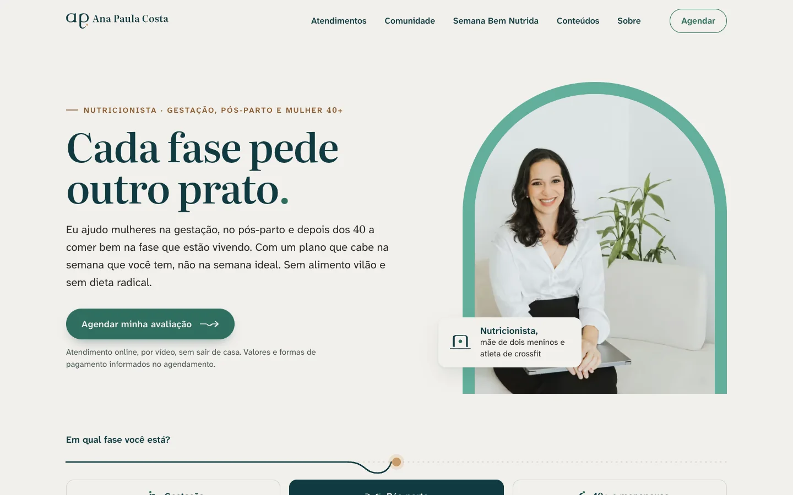
Início no computador1440 × 900 px
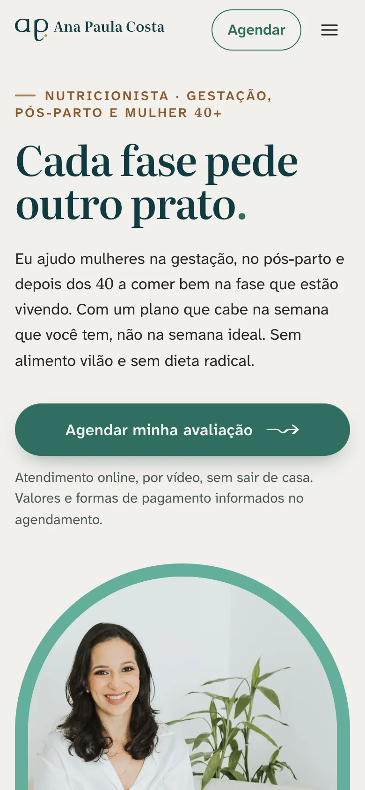
No celular390 × 844 px
anapaulacosta.com.br/atendimentos
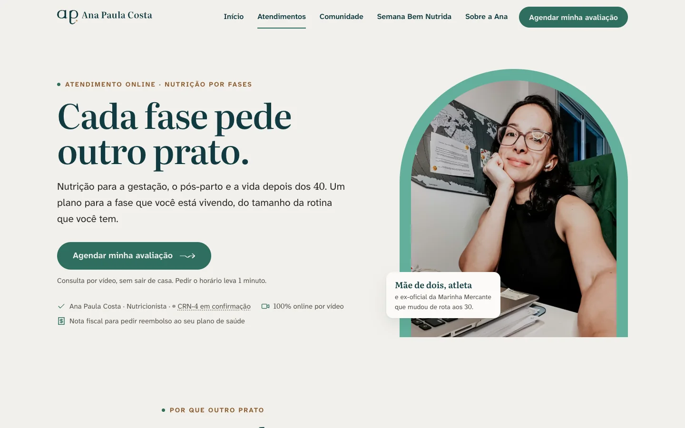
Página de atendimentosA linha de confiança embaixo do botão leva nome, profissão e CRN.1440 × 900 px
/semana-bem-nutrida
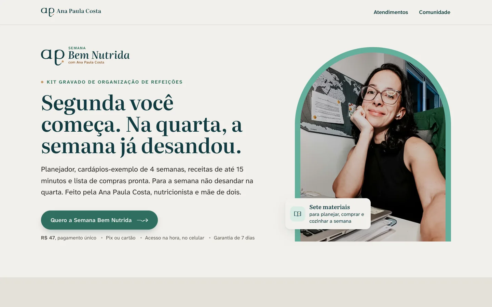
Semana Bem NutridaFundo Algodão, sub-marca acima do título.
/comunidade
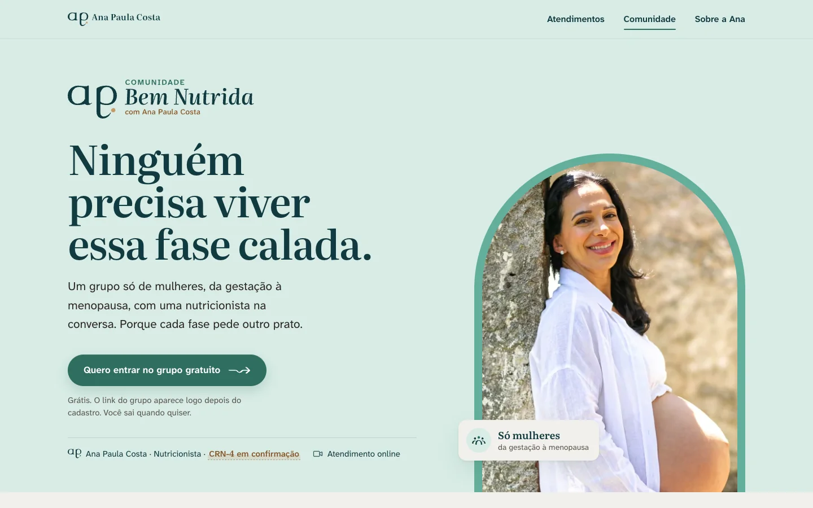
Comunidade Bem NutridaA página inteira em Bruma, a casa da comunidade.
Elemento
Medida
Regra
Logotipo no topo
160 a 200 px
Versão horizontal reduzida (sem "Nutricionista"). A completa só a partir de 300 px.
Botão principal
altura mínima 48 px
Um por tela, Sálvia Funda com texto Algodão e a seta da Rota. No modo 40+, Ouro Velho com texto Mar Fundo.
Título da página
72 px · 44 px no celular
Literata 580. O ponto final pode ganhar a cor do ponto da fase.
Foto
arco sobre Sálvia Ana
Foto real, sem texto por cima. No modo 40+, sem foto de gestação.
Rodapé
toda página
Nome, profissão e CRN-4 em confirmação, links de privacidade e contato.
Modo da fase
data-fase
gestacao, pos-parto ou 40-mais no <html>. As cores vêm do tokens.css.
Slides em 16:9 para aula aberta, palestra ou encontro da comunidade. Uma ideia por slide, título grande e texto que ainda se lê quando a aula é vista no celular.
Capa, conteúdo e fechamentoA capa usa o modo 40+ porque a aula é para essa fase. Para gestação, troque o fundo por Bruma e a foto por uma do acervo de gestação.1920 × 1080 px
Item
Medida
Regra
Margem
120 px
Nada encosta na borda. Rodapé a 80 px do fim.
Título
80 a 96 px
Literata 580, até duas linhas.
Texto
32 px no mínimo
Atkinson. Três itens por slide, no máximo.
Fundos
Algodão · Sálvia Ana · Mar Fundo
Algodão no conteúdo; Sálvia Ana ou Mar Fundo na capa e no fechamento.
Assinatura
todo slide de conteúdo
Símbolo, nome, profissão e CRN no rodapé; o último slide repete o convite.
O produto de entrada mora no Mar Fundo, com a sub-marca clara no topo. A capa vende a ideia da semana possível; a página de dentro mostra o planejador, o material que a cliente mais usa.
Capa e página internaUm ponto caramelo por página: o da sub-marca. Os marcadores da grade são Sálvia Funda.A4 · 2480 × 3508 px
22Aplicações
O papel que a paciente leva para casa.
O plano alimentar, os materiais de consulta e o cartão de visita, com as medidas para imprimir e o modelo editável para baixar.
Em um minuto
Plano alimentar em A4: Algodão, refeições com marcador Sálvia Funda, recado da Ana em Bruma e CRN no rodapé.
O que é de uma paciente se chama plano. O que é para muitas se chama exemplo.
Cartão de 90 × 50 mm: frente Sálvia Ana só com o símbolo, verso Algodão com o logotipo de 65 mm.
Nada vai para a gráfica enquanto o CRN-4 estiver em confirmação e sem a prova de cor (P5).
O plano alimentar é a peça que a paciente mais abre na semana. Ele precisa ser lido no celular e impresso na geladeira: fundo Algodão, refeições com marcador Sálvia Funda, um recado da Ana em Bruma e o CRN no rodapé.
Fase: pós-parto
Plano alimentar
Paciente: nome · Semana 1 · revisão em 15 dias
Café da manhã
Pão integral com ovo mexido · mamão · café com leite
Lanche
Iogurte natural com aveia e banana
Almoço
Arroz, feijão, frango grelhado, salada colorida e azeite
Lanche da tarde
Fruta e um punhado de castanhas
Jantar
Omelete de legumes · salada · batata-doce
Recado da Ana: café e bolo no fim de semana estão liberados. Constância vence perfeição.
Ana Paula Costa · Nutricionista · CRN-4 em confirmaçãoPágina 1 de 2
Antes da sua consulta
Separe o que tiver. O que faltar, a gente vê junto.
Exames recentes, se tiver
Como é um dia comum seu, do café ao jantar
Remédios e suplementos que você usa
Um lugar calmo, com o celular carregado
Lista da semana
Separada por seção do mercado
Hortifrúti: banana, mamão, folhas, batata-doce
Geladeira: ovos, iogurte natural
Mercearia: aveia, arroz, feijão, castanhas
Plano alimentar e materiais de consultaCardápio do exemplo é ilustrativo. O modelo editável está na central de downloads.A4 · 210 × 297 mm
Peça
Formato
Regra
Plano alimentar
A4 retrato · PDF
Logotipo reduzido no topo (46 mm), pílula da fase, Rota com ponto Sálvia Funda, texto Atkinson de 11 pt no mínimo.
Antes da consulta
A5 ou 1080 × 1920 px
Enviado no agendamento. Lista curta, com caixas de marcar, sem pedir peso nem exame por mensagem aberta.
Lista de compras
A5 ou celular
Separada por seção do mercado. Nada de marca de produto.
Recado entre consultas
1080 × 1350 px
Fundo Bruma, frase curta da Ana em Literata, assinatura "Ana" no fim.
Frente em Sálvia Ana só com o símbolo, porque é a cara dela há seis anos. Verso em Algodão com o logotipo horizontal completo, que precisa de 65 mm de largura para o "Nutricionista" ficar legível.
Frente e versoUm ponto caramelo no verso (o do logotipo) e nenhum na frente.90 × 50 mm
Para a gráfica
Valor
Observação
Formato final
90 × 50 mm
Arquivo com 3 mm de sangria em cada lado (96 × 56 mm).
Área segura
4 mm
Nenhum texto a menos de 4 mm do corte.
Logotipo do verso
65 mm de largura
É o mínimo impresso da horizontal com descritor.
Símbolo da frente
36 mm de largura
Versão simbolo-sobre-salvia: traço Mar Fundo, ponto Algodão.
Cor
Sálvia Ana 62 9 44 2
Valores em CMYK para papel revestido. Em papel sem revestimento, a gráfica converte pelo perfil dela.
Papel sugerido
300 g fosco
Laminação fosca nas duas faces. Evite brilho: o Sálvia perde a calma.
Pendência P5
Pedir à gráfica uma prova de cor impressa da Sálvia Ana e do Caramelo antes da primeira tiragem. O cartão só vai para impressão com o CRN (P1) e o WhatsApp oficial (P2) no lugar dos marcadores.
23Aplicações
Onde a conversa acontece.
A assinatura de e-mail, o perfil do WhatsApp Business e a chegada na Comunidade Bem Nutrida. Textos prontos para copiar e peças prontas para refazer.
Em um minuto
Assinatura de e-mail: símbolo solto, fio fino, nome em Literata. Nunca o símbolo dentro de um círculo.
No WhatsApp, a foto de perfil é o rosto da Ana em fundo sólido. Descrição e saudação têm botão de copiar.
A comunidade mora na Bruma. Três posts fixos recebem quem chega: boas-vindas, combinados e o lembrete de que o grupo não substitui consulta.
A assinatura de e-mail tem o símbolo solto sobre Algodão, um fio fino, o nome em Literata e as linhas em Atkinson. Nada de círculo em volta do símbolo: o círculo só existe no avatar, e quem recorta é a plataforma.
Ana Paula Costa
Nutricionista · CRN-4 em confirmação
Gestação, pós-parto, 40+ e menopausa · atendimento online
WhatsApp em confirmação · @ana_costarodrigues
Assinatura de e-mailSímbolo com 72 px de largura; a Rota usa o ponto Sálvia Funda porque o símbolo já tem o caramelo.até 600 px de largura
Abra o arquivo no navegador, troque os marcadores, selecione a assinatura e cole no campo de assinatura do e-mail. As imagens vêm do endereço público do manual, então funcionam em qualquer caixa de entrada.
Ana Paula Costa · Nutricionista Conta comercial
Atendimento online para gestação, pós-parto e 40+.
Oi, Ana! Vi seu vídeo e queria saber da consulta.
Oi! Aqui é a Ana Paula Costa, nutricionista 💚 Que bom que você chegou. Me conta em que fase você está (gestação, pós-parto ou 40+) e o que te trouxe até aqui.
Foto de perfil
O rosto da Ana em fundo sólido, nunca o símbolo nem PNG transparente (o WhatsApp pinta a transparência de preto). Arquivo de 640 × 640 px.
Descrição do perfil
Nutricionista · CRN-4 em confirmação. Atendimento online para gestação, pós-parto e 40+. Valores e formas de pagamento informados no agendamento. Pix ou cartão em até 10x. Nota fiscal para reembolso do plano de saúde.
Mensagem de saudação
Oi! Aqui é a Ana Paula Costa, nutricionista 💚 Que bom que você chegou. Me conta em que fase você está (gestação, pós-parto ou 40+) e o que te trouxe até aqui. Eu respondo no meu horário de atendimento: [dias e horário].
Troque o que está entre colchetes antes de salvar no WhatsApp Business. O número oficial de atendimento ainda depende da Ana (WhatsApp em confirmação).
A comunidade mora na Bruma, a Sálvia clareada. A capa do grupo leva a sub-marca e a frase que abre a página; os três primeiros posts recebem quem chega, dizem as regras e lembram que o grupo não substitui consulta.
Capa do grupo e posts de boas-vindasFixe os três posts no topo, nessa ordem. A capa usa a área central, que nenhuma plataforma corta.1920 × 1080 · 1080 × 1350 px
Mensagem de boas-vindas no grupo
Seja bem-vinda à Comunidade Bem Nutrida 💚 Aqui a gente conversa de mulher para mulher, com uma nutricionista na roda. Para começar, dá um oi e conta em que fase você está: gestação, pós-parto, 40+ ou menopausa. Os combinados da casa estão na descrição do grupo. Tudo aqui é educativo e não substitui a sua consulta. Ana
Logotipos, sub-marcas, forma, fontes, tokens e os modelos das aplicações. Clique para baixar o arquivo oficial; nunca refaça a marca a partir de um print.
Em um minuto
SVG para site e para o que vai ser ampliado; PNG de 2048 px para Canva, editor de vídeo e apresentação.
Os PNG já trazem a área de proteção em volta. Os avatares são quadrados opacos: a plataforma recorta o círculo.
O pacote completo para levar de uma vez fica na página de versões do repositório.
Antes de baixar, veja onde a peça vai viver. O mesmo logotipo existe em cinco esquemas de cor e em dois formatos; escolher certo evita borda serrilhada, fundo preto no WhatsApp e ponto sumindo sobre a Sálvia.
Onde vai
Formato
Qual arquivo
Site e código
SVG
Versões -cor, que o CSS recolore pelo modo da fase. Cores e fontes vêm do tokens.css.
Canva, Figma e apresentação
PNG 2048 px
O esquema do fundo: -cor no claro, -sobre-salvia na Sálvia Ana, -sobre-escuro no Mar Fundo.
Editor de vídeo
PNG 2048 px
Assinatura compacta ou símbolo, nunca o horizontal inteiro sobre o rosto.
Foto de perfil e WhatsApp
PNG 1080 px
Avatar quadrado opaco; entre 32 e 56 px, o avatar pequeno.
Gráfica
SVG ou PDF vetorial
Logotipo em vetor, cores em CMYK do tokens.json e prova de cor (P5).
Dezesseis itens que dependem da Ana ou de uma conferência antes do lançamento. Enquanto estiverem abertos, as peças mostram o marcador "em confirmação" e não vão a público.
Em um minuto
Três itens bloqueiam qualquer publicação: o CRN-4 (P1), o WhatsApp oficial (P2) e a autorização das fotos (P3).
Os outros treze fecham o sistema, o site e as páginas de venda antes da primeira tiragem e do lançamento.
No manual, cada marcador tem o número da pendência ao lado, como CRN-4 em confirmação.
Nenhuma peça vai a público com marcador aberto. A tabela diz o que falta e em quais peças o marcador aparece hoje.
Pendência
O que falta
Onde aparece
P1 · CRN-4
O número do registro profissional.
Rodapé do site, plano alimentar, cartão, assinatura de e-mail, slides, e-book, posts e descrição do WhatsApp.
P2 · WhatsApp
O número oficial de atendimento e o horário de resposta.
Cartão, assinatura de e-mail, perfil e saudação do WhatsApp Business.
P3 · Fotos
Autorização de uso das fotos dos ensaios, inclusive neste manual público.
Este manual, os kits de redes e de vídeo, site, slides, capa do e-book, capa e posts da comunidade.
P4 · Nome
Aprovar "Ana Paula Costa" como nome que assina a marca.
Todas as peças.
P5 · Prova de cor
Prova impressa da Sálvia Ana e do Caramelo.
Cartão de visita e qualquer impresso.
P6 · Domínio
O endereço definitivo do site.
Barra do navegador nas telas do site, cartão e rodapé do e-mail.
P7 · Leitura do símbolo
Teste com 3 a 5 pessoas a 110 e a 32 px.
Avatar, assinatura de e-mail e rodapé dos posts.
P8 · Ícones
A Ana aprova os ícones de Gestação e Comunidade.
Capas de destaque da central de downloads.
P9 · E-mail e horário
O e-mail profissional e o horário de atendimento.
Assinatura de e-mail, dados de contato e mensagens automáticas do WhatsApp.
P10 · Quem vende
CPF ou CNPJ e endereço comercial ou fiscal.
Rodapé das páginas de venda da Semana e da Comunidade.
P11 · e-Nutricionista
O cadastro exigido pelo conselho para atender online.
Site e todas as páginas de atendimento.
P12 · Preço da comunidade
Preço mensal, plano anual, total e regra de cancelamento da Comunidade paga.
Catálogo do WhatsApp, página e posts da Comunidade.
P13 · Esteira
Nomes e condições: Nutrição por Fases, Avaliação da Fase, Acompanhamento da Fase 90 dias, plano em 24 horas, 30 dias de suporte e Garantia do Plano que Cabe.
Site, stories de convite, catálogo e respostas do WhatsApp.
P14 · Parcelamento
Se o cartão em até 10x é com ou sem juros.
Bloco de pagamento do site, descrição do WhatsApp e stories.
P15 · Código novo
Conferir no site do conselho o texto, a resolução e a data de vigência.
Seção 19 e qualquer texto público que cite o código.
P16 · Fé e família
Se a Ana quer trazer a fé e a família ao conteúdo, e até onde.
Fotografia (seção 16), pilares de conteúdo e voz.
Pendência P3
As fotos do acervo aparecem aqui como exemplo de aplicação só na cópia de trabalho. Até a autorização por escrito da Ana, elas ficam fora do repositório público, e o endereço publicado mostra a moldura “foto da Ana · autorização em confirmação”. O uso em peça comercial (anúncio, capa à venda, página de vendas) também espera essa autorização.